This scene is not unlocked yet in your progress
Memory × Revenge × Tumor
Shiyo 804, April 8, 6:32 a.m.―
"We are now over the Arata district.
The fire appears to have burned itself out.
The settlement is almost entirely burned down. We can't see anyone."
―Check for any evacuated residents in the vicinity.
"Roger."
―Check for any evacuated residents in the vicinity.
"Roger."
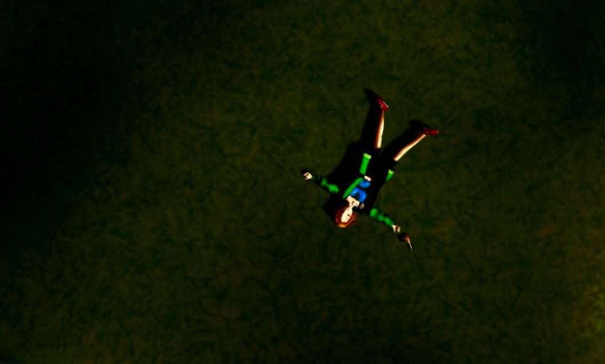
"One person sighted, one person sighted in a clearing nearby.
Just the one. We can't see anyone else."
―Can you confirm signs of life?
"No, lying spread-eagled. Unknown if alive or dead."
―Can you land nearby?
"............ Yes, we can land in a flat clearing nearby."
―Good. Determine at once whether alive or dead, and transport to the hospital.
―Can you confirm signs of life?
"No, lying spread-eagled. Unknown if alive or dead."
―Can you land nearby?
"............ Yes, we can land in a flat clearing nearby."
―Good. Determine at once whether alive or dead, and transport to the hospital.
"Roger. Determining at once whether alive or dead, and transporting to the hospital."
"Please respond.
The person we found appears to be a woman in her early twenties."
―Well? Is she alive?
"Um...
―Well? Is she alive?
"Um...
This is...
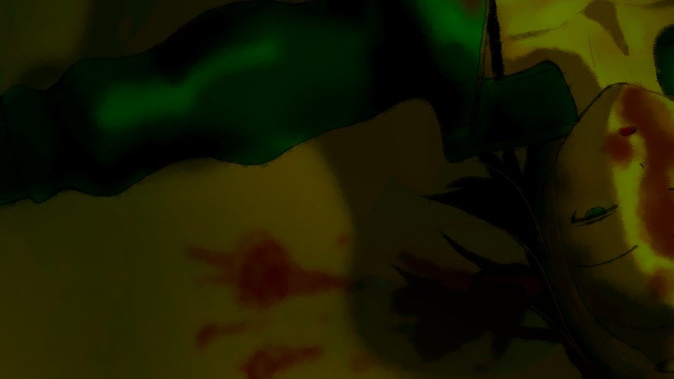
Any way you look at it..."

This is the first time I have been the one to put a question to you like this.
For once, why not try answering a question of mine?
If you would simply give my questions some thought, that will be quite enough.
For once, why not try answering a question of mine?
If you would simply give my questions some thought, that will be quite enough.
I have two questions for you.
Please relax as you listen.
Now, the first―
Please relax as you listen.
Now, the first―
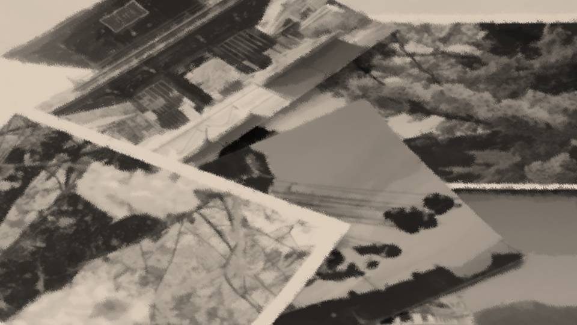
What is your oldest memory?
Long ago.
A memory from when you were small.
Surely everyone has thought about it at least once.
Please try to call that memory up once more, now.
Long ago.
A memory from when you were small.
Surely everyone has thought about it at least once.
Please try to call that memory up once more, now.
I have asked several friends the same question.
Their answers varied.
For one person, it was a memory of drowning in the sea and being saved by a parent.
It must have been the first moment in their life that they faced death, a vivid event.
Their answers varied.
For one person, it was a memory of drowning in the sea and being saved by a parent.
It must have been the first moment in their life that they faced death, a vivid event.
Another friend said this:
it was at the age of 3, when they first learned the concepts of 'right' and 'left.'
Human beings grow up learning all manner of things.
For that friend, it must have been the first time they truly felt the concept of 'learning,' the destiny of every human being.
it was at the age of 3, when they first learned the concepts of 'right' and 'left.'
Human beings grow up learning all manner of things.
For that friend, it must have been the first time they truly felt the concept of 'learning,' the destiny of every human being.
What is your oldest memory?
I believe you too have an oldest memory that is unlike anyone else's.
Some people even say they remember things from before they were born.
My little sister was one of them.
I believe you too have an oldest memory that is unlike anyone else's.
Some people even say they remember things from before they were born.
My little sister was one of them.
Days of lying in a mother's dark, narrow womb, not yet knowing even the concept of light, surrendered to the warmth of her body―
My sister used to say she remembered what every human being lives through and then completely forgets.
My sister used to say she remembered what every human being lives through and then completely forgets.
And the oldest memory inside me―

It is of the time I saw a baby, newly born to a friend of my mother's.
It was a baby girl.
Let me see, I think I was 1 or 2 at the time.
It surprises even me that so old a memory has stayed with me, but I can still recall it clearly.
That is how great a shock it was to me then.
It was a baby girl.
Let me see, I think I was 1 or 2 at the time.
It surprises even me that so old a memory has stayed with me, but I can still recall it clearly.
That is how great a shock it was to me then.
I myself had only just graduated from being a baby, and I was aware that I was powerless and could not live on my own.
Put that way, you may take me for a remarkably philosophical toddler, but...
It is simply that, when I apply the language I have learned since to my feelings at that time, that was how I understood it.
Put that way, you may take me for a remarkably philosophical toddler, but...
It is simply that, when I apply the language I have learned since to my feelings at that time, that was how I understood it.
I suspect you too had some vague awareness that you were too young to live without a guardian, that you were a powerless being.
If I remember rightly, in English this concept is expressed by the single word "helpless." [TN: "helpless" appears in English in the original.]
"A little baby is helpless."
It means that a baby cannot live on its own.
If I remember rightly, in English this concept is expressed by the single word "helpless." [TN: "helpless" appears in English in the original.]
"A little baby is helpless."
It means that a baby cannot live on its own.
At the time, I too was aware that I was "helpless."
But the baby of my mother's friend was more powerless still.
More powerless than I was: a "more helpless" being.
And yet, even a being like that had one radiance that was second to none.
A radiance far too dazzling for me.
The radiance of being adorable―
But the baby of my mother's friend was more powerless still.
More powerless than I was: a "more helpless" being.
And yet, even a being like that had one radiance that was second to none.
A radiance far too dazzling for me.
The radiance of being adorable―
A baby who could not yet properly perceive light, who knew no words, who did not even know that she existed.
A baby so small she could move her body only by reflex.
Powerless―and yet so very adorable.
That is my oldest memory.
A baby so small she could move her body only by reflex.
Powerless―and yet so very adorable.
That is my oldest memory.
Right away, a desire sprouted in me as well: 'I want a little sister.'
I remember telling my mom 'I want a little sister!' in a loud voice at every opportunity.
Since I said it no matter where we were, I suspect Mom was embarrassed.
Even before Mom was pregnant with my sister, I was thinking up names for her and what we would play together.
I remember telling my mom 'I want a little sister!' in a loud voice at every opportunity.
Since I said it no matter where we were, I suspect Mom was embarrassed.
Even before Mom was pregnant with my sister, I was thinking up names for her and what we would play together.
I once got a doll that was popular at the time, called the 'Lucy doll.'
Silver hair and fair skin so pale it seemed translucent.
Odd eyes of blue and green that seemed to pull you in.
Even though the doll already had a name, 'Lucy,' I gave it the name I had thought up for my sister, and always carried it around with me.
I played house with my Lucy doll, always calling her by that name.
Erina―Erina―like that.
Silver hair and fair skin so pale it seemed translucent.
Odd eyes of blue and green that seemed to pull you in.
Even though the doll already had a name, 'Lucy,' I gave it the name I had thought up for my sister, and always carried it around with me.
I played house with my Lucy doll, always calling her by that name.
Erina―Erina―like that.
Around the time I turned 4, the sister I had been longing for was born.
From the time my sister was still in Mom's belly, I called her by name the whole while, and my parents called her by the name I chose as well.
Written in kanji, Erina becomes Erina. [TN: the doll's name is in kana, the sister's in kanji.]
Erina was born neither silver-haired nor odd-eyed, but with perfectly ordinary coloring.
From the time my sister was still in Mom's belly, I called her by name the whole while, and my parents called her by the name I chose as well.
Written in kanji, Erina becomes Erina. [TN: the doll's name is in kana, the sister's in kanji.]
Erina was born neither silver-haired nor odd-eyed, but with perfectly ordinary coloring.
The Lucy doll Erina, my sister Erina, and I were always together, but the Lucy doll was torn to rags when Erina got into mischief with it.
I was sad, but it was "helpless" Erina who had done it, so there was nothing to be done.
I was sad, but it was "helpless" Erina who had done it, so there was nothing to be done.
I buried the doll Erina in our yard and made her a grave.
If someone dug there, Erina's remains might still turn up even now.
If someone dug there, Erina's remains might still turn up even now.


Even after I started elementary school, I was always with Erina.
I would show her my school textbooks, which she could not possibly have understood, and tell her what I had studied that day. I even had Erina listen to my reading-aloud homework for Japanese class.
I clung to Erina, but Erina clung to me as well, and she listened with keen interest to whatever I had learned at school.
I would show her my school textbooks, which she could not possibly have understood, and tell her what I had studied that day. I even had Erina listen to my reading-aloud homework for Japanese class.
I clung to Erina, but Erina clung to me as well, and she listened with keen interest to whatever I had learned at school.
Perhaps that was what paid off.
Erina learned words quickly, and by the time she started kindergarten, she could pick up whatever I had learned at school right away.
A sister 4 years younger, studying just as I did and working through homework together with me.
Perhaps this was what gave birth to the genius girl.
Erina learned words quickly, and by the time she started kindergarten, she could pick up whatever I had learned at school right away.
A sister 4 years younger, studying just as I did and working through homework together with me.
Perhaps this was what gave birth to the genius girl.
But―
I think my nature was warped in some way.
Erina came to learn more than I did, and to think about more.
Before long I was the one having Erina teach me my schoolwork, and Erina was teaching me things I did not know―
It was something to be truly glad of, that Erina grew up that way.
But― I think my nature was warped in some way.
Erina came to learn more than I did, and to think about more.
Before long I was the one having Erina teach me my schoolwork, and Erina was teaching me things I did not know―
It was something to be truly glad of, that Erina grew up that way.
But― I think my nature was warped in some way.
Toward the Erina she had become, what I felt was fear.
What was I, to Erina?
Could it be that I was someone Erina had no need for?
What was I, to Erina?
Could it be that I was someone Erina had no need for?
Unable to teach Erina anything anymore, would I be thrown away someday?
Would she come to find me tiresome, less capable than Erina as I was?
Would she come to find me tiresome, less capable than Erina as I was?
It was around the time I entered high school that I felt this clearly.
Something set it off, and I came to hold a prejudice against clever people.
Clever people were sure to look down on me someday.
If Erina were ever to look at me with scorn in her eyes―
Something set it off, and I came to hold a prejudice against clever people.
Clever people were sure to look down on me someday.
If Erina were ever to look at me with scorn in her eyes―
I could no longer bear being with Erina, and I began to keep her at arm's length.
She was as clever and adorable a sister as ever, and yet― my heart was warped.
She was as clever and adorable a sister as ever, and yet― my heart was warped.

But regretting it now, it is too late.
If it was going to come to this, I should have spent more time with Erina.
I wanted us to be close sisters to the very end, my adorable little sister and I.
Somewhere in my heart, I was hoping.
That surely a time would come when we could be close sisters again.
But with that dream never coming true―
If it was going to come to this, I should have spent more time with Erina.
I wanted us to be close sisters to the very end, my adorable little sister and I.
Somewhere in my heart, I was hoping.
That surely a time would come when we could be close sisters again.
But with that dream never coming true―
Erina died.
This has run long, but that is the end of the first question.
My oldest memory ended up giving me my greatest despair.
If I had not been driven by that desire back then, 'I want a little sister,' would I have been spared feeling this way?
My oldest memory ended up giving me my greatest despair.
If I had not been driven by that desire back then, 'I want a little sister,' would I have been spared feeling this way?
There would have been no fear of Erina, and no grief at losing her.
Those negative feelings of mine came to be directed at a certain person.
What I hold inside me now is― a pitch-black, ugly thirst for revenge.
Toward the person who killed Erina, an insatiable thirst for revenge.
Those negative feelings of mine came to be directed at a certain person.
What I hold inside me now is― a pitch-black, ugly thirst for revenge.
Toward the person who killed Erina, an insatiable thirst for revenge.
Now, the second question.
What do you think of 'revenge'?
Revenge is an act that tends to be condemned, generally speaking.
Even so, human beings are creatures ruled by the thirst for revenge.
Something called up not by reason, but by emotion.
What do you think of 'revenge'?
Revenge is an act that tends to be condemned, generally speaking.
Even so, human beings are creatures ruled by the thirst for revenge.
Something called up not by reason, but by emotion.
Some will say revenge is wrong.
Some will say it can be forgiven, depending on the circumstances.
Some will say it can be forgiven, depending on the circumstances.

Sometimes, it seems, countries even rename revenge 'retaliation' and go to war with one another.
But it is also said that what lies behind it is business on a national scale.
After all, war drives the economy and technology, and is apparently very profitable.
But it is also said that what lies behind it is business on a national scale.
After all, war drives the economy and technology, and is apparently very profitable.
Then what is the difference between 'revenge' and 'payback'?
Payback gives a comparatively lighter impression than revenge.
This is only my personal view, but I think the difference between revenge and payback lies in 'time.'
Payback is what is carried out over a comparatively short period, and revenge is what is undertaken over a long one.
With payback, you return what was done to you within a few days, or in an instant.
With revenge, you lay plans over a long time and pay the other person back.
Payback gives a comparatively lighter impression than revenge.
This is only my personal view, but I think the difference between revenge and payback lies in 'time.'
Payback is what is carried out over a comparatively short period, and revenge is what is undertaken over a long one.
With payback, you return what was done to you within a few days, or in an instant.
With revenge, you lay plans over a long time and pay the other person back.
What I intend to do is―revenge.
For this day, I have gathered every kind of information and worked out my plan.
For this day, I have gathered every kind of information and worked out my plan.
I spent a great deal of money on it as well.
Several million yen that I had originally saved up to run away from home―no, perhaps there was more than that.
Of that, all I have left is the fare for the train I am riding now and enough for a few days of food.
With that money, I gathered and gathered whatever information seemed necessary, from private detectives, from information brokers, and even from the yakuza.
Several million yen that I had originally saved up to run away from home―no, perhaps there was more than that.
Of that, all I have left is the fare for the train I am riding now and enough for a few days of food.
With that money, I gathered and gathered whatever information seemed necessary, from private detectives, from information brokers, and even from the yakuza.

The Arata settlement―

Droga―

And the culprit who killed my sister.
My revenge―it is to destroy the Arata settlement.
I know the culprit behind the Megasawa City case, and the culprit who killed my sister.
And the Arata settlement, the root of it all, which made that spirited-away method possible.
My revenge―it is to destroy the Arata settlement.
I know the culprit behind the Megasawa City case, and the culprit who killed my sister.
And the Arata settlement, the root of it all, which made that spirited-away method possible.
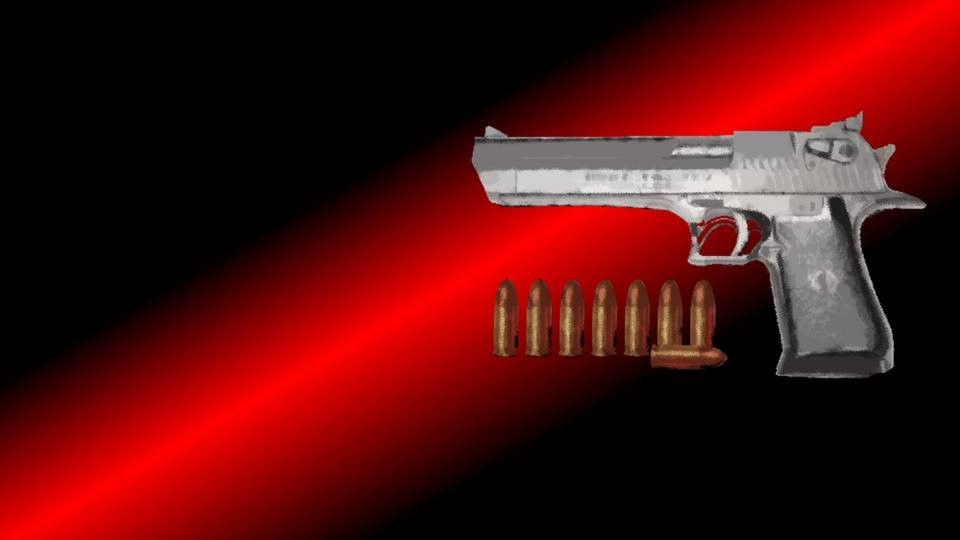
In my bag is something cold and heavy.
The population of the Arata settlement is about 30.
About five times that, 1 gross (144 rounds) of bullets, and a handgun.
My heart is warped in some way.
So I will take my revenge in a warped way.
The population of the Arata settlement is about 30.
About five times that, 1 gross (144 rounds) of bullets, and a handgun.
My heart is warped in some way.
So I will take my revenge in a warped way.
Erina wouldn't be happy if I did a thing like that.
Some people will say so.
If Erina were alive, she'd say the same.
But I know full well that the reality of revenge is nothing but self-satisfaction.
I made my peace with that from the very start.
What I need is this self-satisfaction.
Some people will say so.
If Erina were alive, she'd say the same.
But I know full well that the reality of revenge is nothing but self-satisfaction.
I made my peace with that from the very start.
What I need is this self-satisfaction.
Ever since I was old enough to know anything, I longed for a sister, stayed by her side for so long, so long, and then one day suddenly lost her.
So what am I supposed to have left now?
So what am I supposed to have left now?
Yes, I know it myself.
The point of this revenge isn't the revenge itself.
It's my pitiful play of chasing a phantom, still pursuing the being called a little sister.
So that play ends today.
The point of this revenge isn't the revenge itself.
It's my pitiful play of chasing a phantom, still pursuing the being called a little sister.
So that play ends today.
Even once I have my revenge, I don't intend to run.
If I'm arrested, I'll probably get the death penalty.
I'll be a violent criminal whose name goes down in history.
But―it no longer matters.
My oldest memory connects to this last revenge, and brings down the curtain.
If I'm arrested, I'll probably get the death penalty.
I'll be a violent criminal whose name goes down in history.
But―it no longer matters.
My oldest memory connects to this last revenge, and brings down the curtain.

I rode alone on the train that led to the Arata settlement.
It was a long journey.
Cherry trees had been planted along the tracks.
How did I know they were cherry trees?
It was a simple matter. The cherry blossoms were in bloom.
It was a long journey.
Cherry trees had been planted along the tracks.
How did I know they were cherry trees?
It was a simple matter. The cherry blossoms were in bloom.
It was in this season, when these cherries bloom, that my sister died.
Shiyo 800, April 8― My sister died on that day.
Shiyo 800, April 8― My sister died on that day.
There's no reason behind my choosing this season for carrying out my revenge.
It was just that I'd gathered enough information right about then, and I didn't want to travel in the cold.
It was just that I'd gathered enough information right about then, and I didn't want to travel in the cold.
Today was Shiyo 804, April 7.
There was no one else on this train.
This train was running for one purpose only: to lead the Arata settlement to its ruin.
But― having come this far, I felt a certain feeling begin to sprout inside me.
I know my revenge strays from the path a human being should walk.
There was no one else on this train.
This train was running for one purpose only: to lead the Arata settlement to its ruin.
But― having come this far, I felt a certain feeling begin to sprout inside me.
I know my revenge strays from the path a human being should walk.
That feeling, now that I'm actually on my way to the Arata settlement like this, has started to scold me.
It has become a lump of conscience, spreading little by little and dulling my resolve.
Like a tumor, it appeared before I knew it, and it has begun to eat away at my thirst for revenge.
It has become a lump of conscience, spreading little by little and dulling my resolve.
Like a tumor, it appeared before I knew it, and it has begun to eat away at my thirst for revenge.
If this tumor is benign, it will eventually stop growing.
If it's malignant, it will go on growing without end, and in the end it will destroy my thirst for revenge.
If it's malignant, it will go on growing without end, and in the end it will destroy my thirst for revenge.
To me, a conscience is nothing but a tumor that gets in the way of living.
If I'm listening to the pangs of conscience at this point, my heart must not have been warped through and through.
If I'm listening to the pangs of conscience at this point, my heart must not have been warped through and through.
But how much time and money I've put into coming this far.
After going to such lengths, giving it all up over a conscience that welled up out of nowhere isn't worth it.
I cover the ears of my heart and turn my face away from the voice of the angel reciting pretty platitudes.
After going to such lengths, giving it all up over a conscience that welled up out of nowhere isn't worth it.
I cover the ears of my heart and turn my face away from the voice of the angel reciting pretty platitudes.
These aren't any pangs of conscience.
Once my revenge is over, what am I supposed to live for?
It's because I'm worrying about a hollow future like that.
It isn't conscience. I'm a more selfish, more warped person than that.
Once my revenge is over, what am I supposed to live for?
It's because I'm worrying about a hollow future like that.
It isn't conscience. I'm a more selfish, more warped person than that.
Oh... come to think of it...
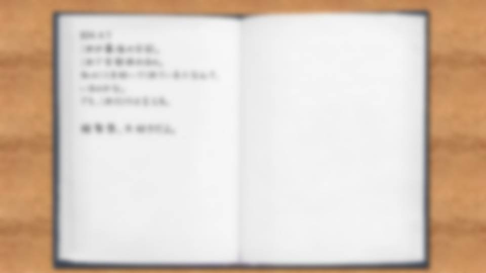
I'd left my planning notebook, which doubles as my diary, lying out on my desk.
It's fine, since the contents are in my head, but if my parents found something like that...
I'll get this over with and hurry home.
I don't mind if the revenge comes out, but... if they read it, it'd be embarrassing...
It's fine, since the contents are in my head, but if my parents found something like that...
I'll get this over with and hurry home.
I don't mind if the revenge comes out, but... if they read it, it'd be embarrassing...

―The train arrived at Toyotake Station.
One last transfer. The next train would take me to Arata Station.
From there, a walk of about 2 hours along a mountain road would bring me to the Arata settlement.
One last transfer. The next train would take me to Arata Station.
From there, a walk of about 2 hours along a mountain road would bring me to the Arata settlement.

I decided to spend the 20 minutes until the next train on a bench outside the station.

 video: 桜.wmv
video: 桜.wmvBeautiful cherry blossoms were dancing in the air.
Live in this Japan of ours, and there are cherry blossoms everywhere you look.
It must be a hard season for people with cherry-blossom allergies.
Live in this Japan of ours, and there are cherry blossoms everywhere you look.
It must be a hard season for people with cherry-blossom allergies.
video: 桜.wmvCherry-blossom allergies...
Come to think of it, I remember Erina saying something like this in a conversation with our mother.
Erina's senpai hated cherry blossoms.
Apparently, whenever cherry blossom season came, she would fall ill and spend days in bed.
Come to think of it, I remember Erina saying something like this in a conversation with our mother.
Erina's senpai hated cherry blossoms.
Apparently, whenever cherry blossom season came, she would fall ill and spend days in bed.
video: 桜.wmvI've looked into that as well.
Though half of it is guesswork...
Though half of it is guesswork...


Natsumi Kogori, Erina's senpai.
As a little girl, she had been drenched in the blood of Eiichiro Niimura.
At some point, he must have used a drug called Droga, which that Arata settlement had created.
As a little girl, she had been drenched in the blood of Eiichiro Niimura.
At some point, he must have used a drug called Droga, which that Arata settlement had created.
Those who have used this Droga are called the first generation.
The term was apparently used by some cult when it carried out repeated human experiments.
Even after Droga wears off, its components remain in the body.
The term was apparently used by some cult when it carried out repeated human experiments.
Even after Droga wears off, its components remain in the body.
If the mucous membranes of the head（eyeballs, lips and so on）come into contact with first-generation blood, the circumstances of touching that blood are re-created, and this brings on illness.
People with this constitution are apparently called the second generation.
People with this constitution are apparently called the second generation.


But in exchange, they are said to have danger sense.
That Natsumi Kogori apparently had a similar ability as well.
That Natsumi Kogori apparently had a similar ability as well.

Droga is made from the roots of cherry trees that grow wild in the Arata district.
The cherry trees of the Arata settlement had produced that devil's drug, Droga.
I understand the urge to admire cherry blossoms, but to me now they're nothing but a hateful plant.
If only there were no cherry trees, Erina might not have had to die...
The cherry trees of the Arata settlement had produced that devil's drug, Droga.
I understand the urge to admire cherry blossoms, but to me now they're nothing but a hateful plant.
If only there were no cherry trees, Erina might not have had to die...
The Arata cherry―
If I go to the Arata settlement, will I end up seeing it with my own eyes too?
Droga's effects are said to be beyond imagination.
It supposedly lets you run 100 meters in 3-something seconds, leap 3 meters, and even dodge bullets.
If the people of Arata used Droga and came at me, my revenge play would end as a failed attempt.
If I go to the Arata settlement, will I end up seeing it with my own eyes too?
Droga's effects are said to be beyond imagination.
It supposedly lets you run 100 meters in 3-something seconds, leap 3 meters, and even dodge bullets.
If the people of Arata used Droga and came at me, my revenge play would end as a failed attempt.
I see, so this is what the Megasawa City case really was.
So if you take the limiter off your muscle strength, it isn't impossible.
Even so, why did the state keep the truth of this Megasawa City case hidden?
Something like this, you'd think anyone could figure out with a little digging.
Could it be that they deliberately―
So if you take the limiter off your muscle strength, it isn't impossible.
Even so, why did the state keep the truth of this Megasawa City case hidden?
Something like this, you'd think anyone could figure out with a little digging.
Could it be that they deliberately―
"Hang in there, Mama! We're almost at the bench!"
As I sat lost in thought, a girl's voice reached my ears.
There were two people who looked like a parent and child.
One was a girl of about middle-school age, and the other was probably her mother.
But both of them looked a little unusual.
As I sat lost in thought, a girl's voice reached my ears.
There were two people who looked like a parent and child.
One was a girl of about middle-school age, and the other was probably her mother.
But both of them looked a little unusual.
Their hair was tinged with brown, and their eyes were blue.
No, green?
No, green?
Then,
the arm that had been around the girl's shoulders slid away, and the woman who seemed to be the mother collapsed.
"Mama! Stay with me!"
Without thinking, I ran over to the fallen woman.
It can't hurt to do a good deed this small, here at the very end.
"Mama! Stay with me!"
Without thinking, I ran over to the fallen woman.
It can't hurt to do a good deed this small, here at the very end.
"Let's get her to the bench."
"Y-yes!"
The girl and I held up her mother and sat her down on the bench.
"S-sorry..."
The mother apologized in a feeble voice.
"Y-yes!"
The girl and I held up her mother and sat her down on the bench.
"S-sorry..."
The mother apologized in a feeble voice.

I saw her face up close.
Two blue eyes that called to mind a clear sky and a beautiful sea.
Her features, too, were a little different from a Japanese person's. Was she a foreigner after all?
Two blue eyes that called to mind a clear sky and a beautiful sea.
Her features, too, were a little different from a Japanese person's. Was she a foreigner after all?
"Thank you for your kindness."
It was the moment our eyes first met.
I felt as if I'd been flung into another dimension.
Eyes as clear as a celestial maiden's, and graceful movements.
And a gentle way of speaking.
I could hardly believe she was a woman, the same as me.
If I had to compare her to something― a goddess.
It was the moment our eyes first met.
I felt as if I'd been flung into another dimension.
Eyes as clear as a celestial maiden's, and graceful movements.
And a gentle way of speaking.
I could hardly believe she was a woman, the same as me.
If I had to compare her to something― a goddess.
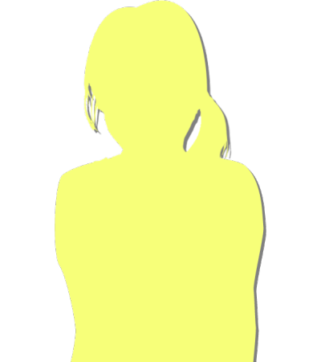
"Uh, thank you very much!"
The girl thanked me as she wiped the sweat from her mother's forehead.
This girl had odd eyes, one blue and one green.
When she grew up, would she become a beautiful woman like her mother?
The girl thanked me as she wiped the sweat from her mother's forehead.
This girl had odd eyes, one blue and one green.
When she grew up, would she become a beautiful woman like her mother?
"Uh... if you'd like, shall I go with you as far as your house?
I'm just drifting around these parts on a solo trip, so..."
It would only be a follow-up to my small good deed.
If they were here, they were probably taking the same train.
Oh, but if they're going the opposite way, that'd be a pain...
It would only be a follow-up to my small good deed.
If they were here, they were probably taking the same train.
Oh, but if they're going the opposite way, that'd be a pain...
"No, the station we're getting off at, Arata Station, is far, so..."
Arata Station was where I planned to get off too.
Then it wouldn't be out of my way.
Arata Station was where I planned to get off too.
Then it wouldn't be out of my way.
"I'm getting off at Arata Station too. It's fine."
"Huh...?"
"You have business in the Arata settlement... with us?"
"Huh...?"
"You have business in the Arata settlement... with us?"
Could these people be from Arata...!?
Is Arata Station used only by people from the Arata settlement?
With almost no savings left by the time of the revenge, I hadn't been able to afford to scout this area.
Is Arata Station used only by people from the Arata settlement?
With almost no savings left by the time of the revenge, I hadn't been able to afford to scout this area.
"Uh, is something wrong?"
I had frozen for a while, and the girl spoke to me.
"Huh? No, it's nothing..."
It felt as if the tumor called conscience had grown even larger.
Should I shoot this mother and daughter dead right here, before it grew any bigger?
I unzipped my bag and touched the gun.
But I stopped myself right away.
I had frozen for a while, and the girl spoke to me.
"Huh? No, it's nothing..."
It felt as if the tumor called conscience had grown even larger.
Should I shoot this mother and daughter dead right here, before it grew any bigger?
I unzipped my bag and touched the gun.
But I stopped myself right away.
Because if I did something like that, there would be an uproar, and the trains would probably stop running.
That was the only reason.
That was the only reason―so I told myself.
Yes, because I'm a selfish person.
That was the only reason.
That was the only reason―so I told myself.
Yes, because I'm a selfish person.
I waited for the train together with the mother and daughter.
The mother's name was Sakura Niimura.
The daughter's name was Kana.
Niimura was the same surname as that of someone Erina was often with, her senpai.
Since they were from the same settlement, it was no wonder they shared a surname.
The mother's name was Sakura Niimura.
The daughter's name was Kana.
Niimura was the same surname as that of someone Erina was often with, her senpai.
Since they were from the same settlement, it was no wonder they shared a surname.
"Momoko-san, would you like to come to our house?
If you are traveling alone and have not decided where to stay..."

"Ha! That's a great idea! Momoko-san, please come!
There are lots of rare, delicious things in Arata!
Mama's cooking is really delicious!"
I couldn't answer the invitation right away.
I couldn't answer the invitation right away.
If they put me up, I might be able to wipe out the residents in one go.
That would be more efficient.
But my biggest worry is―the growth of the tumor.
The tumor keeps growing, slowly and surely.
Kindness is a nasty additive that makes the tumor grow.
That would be more efficient.
But my biggest worry is―the growth of the tumor.
The tumor keeps growing, slowly and surely.
Kindness is a nasty additive that makes the tumor grow.
I really hadn't expected people from Arata to show me kindness.
It seems my tumor is malignant.
It seems my tumor is malignant.
But I won't lose.
I'm not about to be swayed by kindness or sympathy.
I'll strike down my sister's enemy. That one conviction, I have no intention of bending.
All right, I'll go along with this mother and daughter.
I'm not about to be swayed by kindness or sympathy.
I'll strike down my sister's enemy. That one conviction, I have no intention of bending.
All right, I'll go along with this mother and daughter.
―Before long the train arrived, and we boarded a train with no one else on it.
Sakura-san lay down on the side-facing bench seat as soon as she got on.
She really did seem quite unwell.
She really did seem quite unwell.
When is the best time to kill this mother and daughter?
Should I kill them as soon as we get off the train?
This far out in the country, there probably won't be anyone at the station either.
Should I kill them as soon as we get off the train?
This far out in the country, there probably won't be anyone at the station either.
"Mama hasn't been feeling well lately..."
Kana-chan gave Sakura-san's head a gentle stroke.
"Does she have a chronic illness or something?"
"No... it's not a chronic illness, exactly. She always gets like this around this time of year..."
At that moment, the hypothesis
Sakura-san = the second generation
took shape in my mind.
Kana-chan gave Sakura-san's head a gentle stroke.
"Does she have a chronic illness or something?"
"No... it's not a chronic illness, exactly. She always gets like this around this time of year..."
At that moment, the hypothesis
Sakura-san = the second generation
took shape in my mind.
At the same time, a tremendous unease―
I'm someone who brings danger to the Arata settlement.
In that case, Sakura-san might foresee my plan.
No... if that were so, she would already have sensed it at the station earlier.
I'm someone who brings danger to the Arata settlement.
In that case, Sakura-san might foresee my plan.
No... if that were so, she would already have sensed it at the station earlier.
What am I afraid of?
I'll admit I'm very nervous, but...
I'll admit I'm very nervous, but...
Still, even if Sakura-san isn't second generation, there may be other second-generation people in the Arata settlement.
Maybe I'll do a little probing.
Maybe I'll do a little probing.
"Someone my sister knew used to say she always got sick around this time of year too.
But that girl was a bit odd.
She'd say things like 'I have psychic powers!' She was the type who told tall tales..."
"You mean... like precognition, maybe...?"
............!
All I had said was 'psychic powers,' yet Kana-chan had narrowed it down to precognition.
"You mean... like precognition, maybe...?"
............!
All I had said was 'psychic powers,' yet Kana-chan had narrowed it down to precognition.
"Mama has precognition too, around this time of year.
Oh, it's not a lie or a tall tale. It's really true..."
It seemed certain that Sakura-san was second generation.
And yet she doesn't sense any danger from me?
Or has she noticed, and is ignoring it?
It seemed certain that Sakura-san was second generation.
And yet she doesn't sense any danger from me?
Or has she noticed, and is ignoring it?
"I see..."
If I take the bait too eagerly here, they'll get suspicious.
My cover story is that I'm just drifting around on a trip by myself.
I'll steer things a little more naturally, so I can hear about it from Sakura-san herself.
There's still plenty of time before we reach Arata Station.
If I take the bait too eagerly here, they'll get suspicious.
My cover story is that I'm just drifting around on a trip by myself.
I'll steer things a little more naturally, so I can hear about it from Sakura-san herself.
There's still plenty of time before we reach Arata Station.
"Phew..."
Sakura-san slowly sat up.
"Feeling better?"
"Yes... I am sorry, Momoko-san, that you had to see me like this..."
"No, no. Your health comes first."
Sakura-san slowly sat up.
"Feeling better?"
"Yes... I am sorry, Momoko-san, that you had to see me like this..."
"No, no. Your health comes first."
"And...
Precognition, of all things. Kana said something so strange..."
All right, here's my chance!
"But you're surely not the kind of person who tells lies, are you, Sakura-san? Somehow, I can tell."
"Momoko-san... you are kind."
Sakura-san smiled sweetly, though a crease still lingered between her brows.
Even though we were both women, her smile was so captivating it hurt to meet her eyes.
All right, here's my chance!
"But you're surely not the kind of person who tells lies, are you, Sakura-san? Somehow, I can tell."
"Momoko-san... you are kind."
Sakura-san smiled sweetly, though a crease still lingered between her brows.
Even though we were both women, her smile was so captivating it hurt to meet her eyes.
"If you don't mind, could you tell me about that precognition?
I'm traveling alone, so I want to learn all kinds of things about the people I meet."
That was surely a natural, sensible excuse.
That was surely a natural, sensible excuse.
"Momoko-san, do you really believe in precognition?"
"How should I put it... It's not about believing or not believing. I just thought I'd like to hear what you have to say, Sakura-san."
Saying 'I believe you!' to someone I've only just met would be too simple-minded.
I tried keeping my answer a little vague.
"How should I put it... It's not about believing or not believing. I just thought I'd like to hear what you have to say, Sakura-san."
Saying 'I believe you!' to someone I've only just met would be too simple-minded.
I tried keeping my answer a little vague.
"All right.
My precognition is an ability to foresee danger."
"Danger sense... So could you tell about things like that big earthquake the other day?"
"Danger sense... So could you tell about things like that big earthquake the other day?"
"No, it is not that kind of thing...
I can foresee danger to people I have met in person, or whose voices I have heard.
Foresee may not be the word... what kind of danger it will be, sometimes I can tell and sometimes I cannot...
At the very least, I can tell that the person is in danger if things go on as they are."
I see. This was the first I'd heard of it.
I'd known about the second generation's danger sense, but I hadn't been able to research the details of the ability.
In other words, Natsumi Kogori only had a vague danger sense, so she couldn't avert the tragedy 4 years ago.
So this is all the second generation's precognition amounts to.
I'd known about the second generation's danger sense, but I hadn't been able to research the details of the ability.
In other words, Natsumi Kogori only had a vague danger sense, so she couldn't avert the tragedy 4 years ago.
So this is all the second generation's precognition amounts to.
"Also, the precognition does not work unless I am somewhere dark and narrow..."
If that's true, the ability is more limited than I expected.
She has to be somewhere dark and narrow in cherry blossom season, and on top of that, together with someone who is about to meet with danger.
With conditions this brutally strict, a person with sharp intuition in the ordinary sense would probably be far better at precognition.
If that's true, the ability is more limited than I expected.
She has to be somewhere dark and narrow in cherry blossom season, and on top of that, together with someone who is about to meet with danger.
With conditions this brutally strict, a person with sharp intuition in the ordinary sense would probably be far better at precognition.
But if 'a dark, narrow place' is a necessary condition, she won't judge me to be a dangerous person right now.
No, could this train count as 'narrow' in Sakura-san's sense?
If we go into a tunnel, that'll be trouble.
No, could this train count as 'narrow' in Sakura-san's sense?
If we go into a tunnel, that'll be trouble.
...It's probably fine.
The conditions for danger sense = the conditions for falling ill.
If she could sense danger in a tunnel, Sakura-san would wait until she'd recovered before getting on a train.
Otherwise, she'd only get even sicker.
So she shouldn't sense any danger from me on this train.
The conditions for danger sense = the conditions for falling ill.
If she could sense danger in a tunnel, Sakura-san would wait until she'd recovered before getting on a train.
Otherwise, she'd only get even sicker.
So she shouldn't sense any danger from me on this train.
The problem is when night falls.
Sakura-san is one of my targets too, so Sakura-san will probably foresee that she herself is in danger.
If I'm going to kill Sakura-san, sunset is the time limit.
Sakura-san is one of my targets too, so Sakura-san will probably foresee that she herself is in danger.
If I'm going to kill Sakura-san, sunset is the time limit.
I looked at my watch. It was exactly noon.
That leaves a little over 6 hours until the time limit.
Now, what should I do?
Kill this mother and daughter first― no, these two will guide me from the station to the Arata settlement.
In that case, the best plan is to kill them right before we reach the settlement.
That leaves a little over 6 hours until the time limit.
Now, what should I do?
Kill this mother and daughter first― no, these two will guide me from the station to the Arata settlement.
In that case, the best plan is to kill them right before we reach the settlement.
I've also brought a silencer for the handgun, so the other residents won't find out from the gunshots.
I'll let these two live a little longer.
I'll let these two live a little longer.
All right, it's perfect!
I don't know how we'll get to the settlement, but even if someone picks us up by car, I can just kill the driver along with them.
I don't know how we'll get to the settlement, but even if someone picks us up by car, I can just kill the driver along with them.
"Uh, Momoko-san...?"
Oh no. I'd been so lost in thought that I'd let the conversation drop.
They must have seen my expression too.
Oh no. I'd been so lost in thought that I'd let the conversation drop.
They must have seen my expression too.
"Momoko-san, are you all right?
You had such a sad look on your face?"
"Huh? Oh, it's nothing. Nothing..."
A sad face...?
I'd thought I was making a frightening face, or a nasty one.
Could it be that the tumor in my heart...
"Huh? Oh, it's nothing. Nothing..."
A sad face...?
I'd thought I was making a frightening face, or a nasty one.
Could it be that the tumor in my heart...
―After that, we passed the time chatting about this and that.
Sakura-san had one more daughter, and she was studying abroad.
At home it was the three of them, with her husband Kotaro-san and Kana-chan.
Kotaro-san's birth mother, a woman named Erika Niimura, had apparently died of illness a few years ago.
But there's someone else whose whereabouts I want to know.
Sakura-san had one more daughter, and she was studying abroad.
At home it was the three of them, with her husband Kotaro-san and Kana-chan.
Kotaro-san's birth mother, a woman named Erika Niimura, had apparently died of illness a few years ago.
But there's someone else whose whereabouts I want to know.
Mifuyu Niimura―
The very person who killed Erina.
She should be holed up in the Arata settlement with her daughter Haruka.
While we were on the train, I couldn't get as far as finding out where they were.
Oh well. There's no doubt they're in Arata.
The very person who killed Erina.
She should be holed up in the Arata settlement with her daughter Haruka.
While we were on the train, I couldn't get as far as finding out where they were.
Oh well. There's no doubt they're in Arata.

1 p.m., arrival at Arata Station.
A station deep in the mountains, just as I had imagined.
There was no sign of people even at this point, and yet it seemed we were going still deeper into the mountains from here.
A station deep in the mountains, just as I had imagined.
There was no sign of people even at this point, and yet it seemed we were going still deeper into the mountains from here.
The Arata settlement is, strictly speaking, part of the Arata district, and unassigned land.
In other words, it's state-owned land that doesn't belong to any prefecture.
There are several areas that belong to no city, town or village, but this is the only one that doesn't belong to a prefecture either.
I couldn't go so far as to find out the reason for that, but the more I think about it, the stranger it is.
In other words, it's state-owned land that doesn't belong to any prefecture.
There are several areas that belong to no city, town or village, but this is the only one that doesn't belong to a prefecture either.
I couldn't go so far as to find out the reason for that, but the more I think about it, the stranger it is.
Sakura-san's condition seemed to have settled down a good deal, too.
But, Sakura-san, I'm sorry, just when you're feeling better.
The lives of this mother and daughter will soon come to an end by my hand.
Do we walk to Arata, or go by car?
Well, either one is fine.
But, Sakura-san, I'm sorry, just when you're feeling better.
The lives of this mother and daughter will soon come to an end by my hand.
Do we walk to Arata, or go by car?
Well, either one is fine.
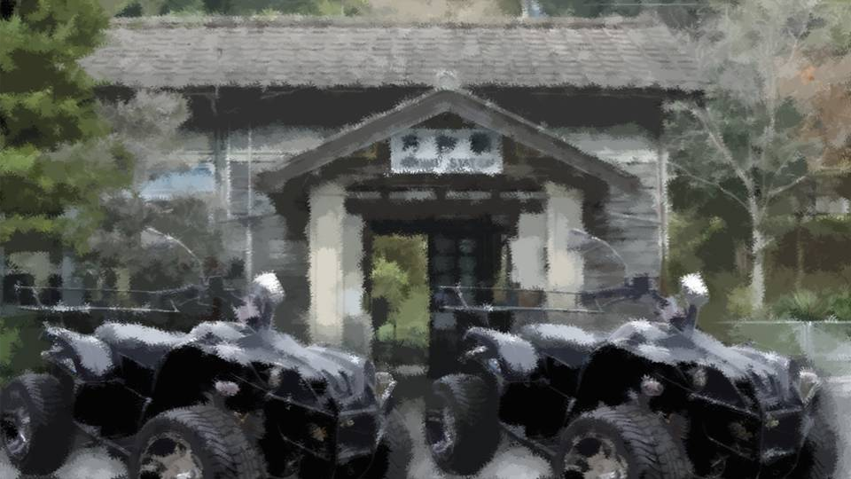
When I passed through the unstaffed ticket gate, a short, obese middle-aged man and a well-built middle-aged man were standing there.

"Sakura, are you feeling all right?"
"Yes, sorry, Kotaro."
I see, so this man is Sakura-san's husband.
This man looks just like the Eiichiro Niimura I saw in the photo.
Could they be brothers?
I see, so this man is Sakura-san's husband.
This man looks just like the Eiichiro Niimura I saw in the photo.
Could they be brothers?

"Kana, one of the buggies has gone and broken down...
Our guest is with us, so sorry, but would you walk home?"
"Mm-hmm, got it!
The buggies are pretty old by now."
Buggies...?
Do they mean we're going to the settlement by buggy?
This way I can't kill Sakura-san and Kana-chan!
Buggies...?
Do they mean we're going to the settlement by buggy?
This way I can't kill Sakura-san and Kana-chan!
Then Kana-chan took off running toward the mountain road.
And fast as a monkey, too, leaping about between the trees.
What is that? That athleticism...
Could she be using Droga or something?
And fast as a monkey, too, leaping about between the trees.
What is that? That athleticism...
Could she be using Droga or something?
"Nice to meet you, miss.
A guest, of all things! Now that's a rare one!"
"Oh, Goto... no, Momoko Fujino. Thank you for having me today."
Letting them learn the surname Goto here would be bad.
If Mifuyu Niimura were to find out...
"Oh, Goto... no, Momoko Fujino. Thank you for having me today."
Letting them learn the surname Goto here would be bad.
If Mifuyu Niimura were to find out...
More importantly, I have to change my plan drastically.
I'm to ride to Arata on the buggy of the other man, Shirozaki-san.
That means I can't kill Sakura-san.
I'm to ride to Arata on the buggy of the other man, Shirozaki-san.
That means I can't kill Sakura-san.
Should I kill them all right here, and ride to Arata on the buggy alone...
No, now that I've come this far, it would be easier to have them guide me as far as the settlement entrance.
I had planned to walk all along, but if they'll take me there by buggy, there's no reason not to make use of it.
No, now that I've come this far, it would be easier to have them guide me as far as the settlement entrance.
I had planned to walk all along, but if they'll take me there by buggy, there's no reason not to make use of it.
Even so, my plan keeps changing, one thing after another.
I had meant to meet no one until I reached the Arata settlement, but I've already gotten to know four people.
And they all seem like good people.
I had meant to meet no one until I reached the Arata settlement, but I've already gotten to know four people.
And they all seem like good people.
My vengeful heart gave a sharp throb.
The tumor called conscience kept growing, eating away at me.
Before it's too late, I have to remove this tumor, and fast.
The tumor called conscience kept growing, eating away at me.
Before it's too late, I have to remove this tumor, and fast.
But removing a tumor on my own is impossible.
So, as I decided, I will do what must be done before the tumor gets worse.
I slipped my hand quietly into my bag and checked the feel of the gun.
So, as I decided, I will do what must be done before the tumor gets worse.
I slipped my hand quietly into my bag and checked the feel of the gun.
A capacity of 12 rounds, a weight of 730 grams.
143 rounds of 9mm Parabellum.
I had test-fired just one round, so the count was an awkward 12 dozen - 1.
143 rounds of 9mm Parabellum.
I had test-fired just one round, so the count was an awkward 12 dozen - 1.
If I take this out now, I can kill these three in 10 seconds.
So, what will you do? Keep finding some reason or other to put it off?
Or stop thinking and carry it out at once?
So, what will you do? Keep finding some reason or other to put it off?
Or stop thinking and carry it out at once?
With a roar, a blast of hot wind suddenly struck me in the face.

"Ah, sorry, Fujino-san."
It seemed exhaust from the buggy's muffler had blown right into my face.
Kotaro-san and Sakura-san had already left.
"............ Sorry. Thank you for doing this."
It seemed exhaust from the buggy's muffler had blown right into my face.
Kotaro-san and Sakura-san had already left.
"............ Sorry. Thank you for doing this."
I drew my hand out of the bag and climbed on behind Shirozaki-san.
It isn't my conscience I'm following. It's a question of efficiency.
It's more efficient, so I won't kill anyone here, and I'll go on to the settlement with them all.
It's nothing like conscience...!
It isn't my conscience I'm following. It's a question of efficiency.
It's more efficient, so I won't kill anyone here, and I'll go on to the settlement with them all.
It's nothing like conscience...!

―There was no conversation between Shirozaki-san and me.
But the whole way, I kept thinking.
What would happen if I shot Shirozaki-san from behind right now?
Would there be an accident?
But the whole way, I kept thinking.
What would happen if I shot Shirozaki-san from behind right now?
Would there be an accident?
No, I don't need to do that. I can just say, "Could you stop for a moment?"
If I shoot Shirozaki-san dead the moment we stop, it's safe.
Then what happens once I've shot Shirozaki-san dead?
If I shoot Shirozaki-san dead the moment we stop, it's safe.
Then what happens once I've shot Shirozaki-san dead?
When we never arrive, Sakura-san and Kotaro-san will probably come back looking for us.
And if I kill the two of them then, too.
I quietly reached into my bag and checked the feel of the gun once more.
And if I kill the two of them then, too.
I quietly reached into my bag and checked the feel of the gun once more.
"Fujino-san!"
"Y-yes!"
Without thinking, I pulled my hand back out of the bag.
"Y-yes!"
Without thinking, I pulled my hand back out of the bag.
"You really came here at a good time! Until a little while ago, outsiders weren't allowed in!"
I know that.
The Arata settlement is state-owned land to begin with, and on top of that, insular and closed to outsiders by temperament.
An ordinary person like me who visits gets turned away, or else arrested for trespassing.
I know that.
The Arata settlement is state-owned land to begin with, and on top of that, insular and closed to outsiders by temperament.
An ordinary person like me who visits gets turned away, or else arrested for trespassing.
"Whew..."
All right. No change to the plan.
I'll make him stop the buggy here and shoot Shirozaki-san dead.
Then I'll ambush Kotaro-san or Sakura-san right here.
Sakura-san's precognition is a threat, so I have to kill her as soon as I can.
All right. No change to the plan.
I'll make him stop the buggy here and shoot Shirozaki-san dead.
Then I'll ambush Kotaro-san or Sakura-san right here.
Sakura-san's precognition is a threat, so I have to kill her as soon as I can.
Come on, do it.
Do it!
Do it!
I whipped the gun out of my bag and pointed it at the back of Shirozaki-san's head.
"S-stop!"
I hated how my voice and my hands were shaking.
Now there's no going back.
"S-stop!"
I hated how my voice and my hands were shaking.
Now there's no going back.

―Suddenly, the buggy stopped.
Good, just like this...!
Good, just like this...!
"Fujino-san! Hide! Quick!"
"Huh?"
Shirozaki-san stood up right where he was and started to turn toward me.
On reflex, I shoved the gun I'd been aiming into my bag, both hands and all.
Shirozaki-san didn't seem to have noticed the handgun.
"Huh?"
Shirozaki-san stood up right where he was and started to turn toward me.
On reflex, I shoved the gun I'd been aiming into my bag, both hands and all.
Shirozaki-san didn't seem to have noticed the handgun.
"There's a bear up ahead.
A hungry one, just out of hibernation! Quick, over here!"
Shirozaki-san grabbed something as he got off the buggy and hid among the nearby trees.
Hearing of this unexpected threat, a bear, I followed after Shirozaki-san too.
Come on...! One unexpected thing after another...!
As if something invisible were getting in my way, my plan was starting to go wrong.
Hearing of this unexpected threat, a bear, I followed after Shirozaki-san too.
Come on...! One unexpected thing after another...!
As if something invisible were getting in my way, my plan was starting to go wrong.
Then Shirozaki-san readied something.
This is... a hunting rifle?
Had he kept it on the buggy? He peered fixedly through the rifle's scope and pointed the muzzle somewhere.
I couldn't tell where the bear was.
This is... a hunting rifle?
Had he kept it on the buggy? He peered fixedly through the rifle's scope and pointed the muzzle somewhere.
I couldn't tell where the bear was.
"Fujino-san, cover your ears."
At that, I pressed the hands I'd shoved into my bag over my ears.
Shirozaki-san checked that I had, and then―
At that, I pressed the hands I'd shoved into my bag over my ears.
Shirozaki-san checked that I had, and then―
A gunshot so loud that even with my ears covered, I thought my eardrums might burst.
A fierce smell of gunpowder hanging all around.
Smoke got in my eyes, and I squinted.
A fierce smell of gunpowder hanging all around.
Smoke got in my eyes, and I squinted.
"All right, looks like I got it. That shot should bring Kana-chan over."
Shirozaki-san stood, took the nata he kept mounted on the buggy as well, and ran off toward where he had aimed.
I had just watched a sudden duel of life and death, and my legs had gone stiff.
Even after Shirozaki-san had left, I kept my ears covered for a while.
I had just watched a sudden duel of life and death, and my legs had gone stiff.
Even after Shirozaki-san had left, I kept my ears covered for a while.
When my legs finally moved again, I turned them toward Shirozaki-san.
About 100 meters away, I could see Shirozaki-san crouching.
I headed toward Shirozaki-san too―toward where the muzzle had been pointed.
About 100 meters away, I could see Shirozaki-san crouching.
I headed toward Shirozaki-san too―toward where the muzzle had been pointed.
"Ah, Fujino-san, that was close. If we'd run into something like this on the buggy, we wouldn't have stood a chance."
Beside Shirozaki-san, so big I could have mistaken it for an overturned car, a huge bear lay limp.
Beside Shirozaki-san, so big I could have mistaken it for an overturned car, a huge bear lay limp.
"Fujino-san, come to think of it, did you say something to me earlier?"
That voice finally brought me back to myself.
The next moment, I remembered what I had to do now.
Shirozaki-san was examining the bear's carcass.
If I'm going to do it―if I'm going to do it, it has to be now!
That voice finally brought me back to myself.
The next moment, I remembered what I had to do now.
Shirozaki-san was examining the bear's carcass.
If I'm going to do it―if I'm going to do it, it has to be now!
"There you are!"
"Ah, Kana-chan, perfect timing.
Sorry, but could you take Fujino-san to the settlement and bring someone back here?
We can't haul this one off without butchering it here."
"Oh! A big one today! Got it!"
"Oh! A big one today! Got it!"
Kana-chan didn't seem the least bit out of breath.
So does that mean Kana-chan came up the mountain as fast as the buggy?
So does that mean Kana-chan came up the mountain as fast as the buggy?
"Momoko-san, are you all right? Weren't you startled, with it happening so suddenly?"
"Huh? Yeah, I'm fine... It did surprise me a little, though."
"............ That's a strong smell of gunpowder."
We were 100 meters from where the gun had been fired, so I couldn't smell anything, but...
Could Kana-chan still smell it?
"Huh? Yeah, I'm fine... It did surprise me a little, though."
"............ That's a strong smell of gunpowder."
We were 100 meters from where the gun had been fired, so I couldn't smell anything, but...
Could Kana-chan still smell it?
"Ah..."
Kana-chan looked in a direction that was not toward me, not toward Shirozaki-san, and not toward the bear's carcass either.
There was something in the undergrowth.
Kana-chan looked in a direction that was not toward me, not toward Shirozaki-san, and not toward the bear's carcass either.
There was something in the undergrowth.
At the end of Kana-chan's gaze, one small bear.
Like a stuffed toy, a tiny little cub.
That cub was looking at us from the undergrowth.
Like a stuffed toy, a tiny little cub.
That cub was looking at us from the undergrowth.
"That's..."
"It must be this bear's cub. This mother bear had that little one over the winter and then woke up from hibernation."
"Can that cub survive?"
"Probably not. Bears eat each other, and if it runs into a male bear, it'll get eaten. It can't find food on its own, either, and one way or the other, I don't think it'll live to see May."
"It must be this bear's cub. This mother bear had that little one over the winter and then woke up from hibernation."
"Can that cub survive?"
"Probably not. Bears eat each other, and if it runs into a male bear, it'll get eaten. It can't find food on its own, either, and one way or the other, I don't think it'll live to see May."
"............
That's cruel..."
"Huh...?"
"Shirozaki-san! You didn't need to kill it at all, did you!? You just shot it because it looked like the buggy might hit it, didn't you!? There must have been some other way...!"
"Huh...?"
"Shirozaki-san! You didn't need to kill it at all, did you!? You just shot it because it looked like the buggy might hit it, didn't you!? There must have been some other way...!"
"Momoko-san, we hunt bears all the time.
This bear will become our food too."
"But...!"
"But...!"
I know. That's what living means.
But... but there's no need to kill a mother bear with a cub...!
That little one's eyes on me hurt so much.
A cub that had lost its family.
The eyes of one whose family had been killed hurt so much.
But... but there's no need to kill a mother bear with a cub...!
That little one's eyes on me hurt so much.
A cub that had lost its family.
The eyes of one whose family had been killed hurt so much.
Those innocent eyes were saying:
What are you going to do with Mom?
What's going to happen to me now?
Hey, give her back.
Give Mom back.
What are you going to do with Mom?
What's going to happen to me now?
Hey, give her back.
Give Mom back.
"Shirozaki-san, please lend me that nata."
What does she want with a nata?
What does she want with a nata?
Then Kana-chan took the nata and strode straight toward the cub.
Wait, what are you going to do?
Hey, stop...!
Stop it...!
Wait, what are you going to do?
Hey, stop...!
Stop it...!
My plea was in vain, and the nata sank into the cub's neck.
The grass around the cub rustled and shook, and soon that stopped too.
It was the moment the life of the cub, thrashing and suffering with the last of its strength, ran out.
The grass around the cub rustled and shook, and soon that stopped too.
It was the moment the life of the cub, thrashing and suffering with the last of its strength, ran out.
Kana-chan picked the cub up in her arms and carried it over to us.
"Shirozaki-san, this one too, please."
"You got it."
The two of them, so utterly cold and unmoved.
"Shirozaki-san, this one too, please."
"You got it."
The two of them, so utterly cold and unmoved.
"Hey...
hey, what is this?"
"Momoko-san?"
"Why that one too!? It's still just a little baby! This is... this is...!"
"It can't survive anymore. So we should let it die beside its mother before it suffers."
"That's just humans being selfish! If there's even a one-in-ten-thousand chance it could live, you shouldn't kill it!"
"Momoko-san?"
"Why that one too!? It's still just a little baby! This is... this is...!"
"It can't survive anymore. So we should let it die beside its mother before it suffers."
"That's just humans being selfish! If there's even a one-in-ten-thousand chance it could live, you shouldn't kill it!"
"Fujino-san, a bear is a very vindictive animal.
It'd surely remember that we killed the mother bear.
And someday it would attack the settlement.
This is the hunting rule here in Arata. It's the wisdom of our ancestors, from hundreds of years back.
If you kill the mother bear, kill the cub too."
"But... that's..."
Long ago, there must have been an Arata ancestor who thought soft thoughts like mine.
And because of it, there must have been great damage from wild animals.
That's why a rule like this came about.
Long ago, there must have been an Arata ancestor who thought soft thoughts like mine.
And because of it, there must have been great damage from wild animals.
That's why a rule like this came about.
"But still...!
Losing your family...
it's a hard thing..."
"............"
I know I'm speaking from nothing but emotion.
Just because I don't like it, I'm rejecting people who live this way.
"............"
I know I'm speaking from nothing but emotion.
Just because I don't like it, I'm rejecting people who live this way.
"............
All right, Kana-chan, take Fujino-san to the settlement.
If we dawdle, another bear will catch the scent of blood."
"Momoko-san, do you have a driver's license? You need a driver's license for the buggy..."
So she wants me to drive.
In that case, killing anyone with the gun before we reach the settlement is impossible.
Well... that's fine by me.
For me as I am now, this handgun is far too heavy.
"Momoko-san, do you have a driver's license? You need a driver's license for the buggy..."
So she wants me to drive.
In that case, killing anyone with the gun before we reach the settlement is impossible.
Well... that's fine by me.
For me as I am now, this handgun is far too heavy.
―With Kana-chan riding behind me, I drove the buggy on and on.
Where I had least expected it, my vengeful heart had been shaken.
The strong wind I felt on the buggy set my tilted feelings straight.
I haven't lost sight of my goal yet.
What happened back there was just a hunt. Something that happens all over the world as a matter of course.
Where I had least expected it, my vengeful heart had been shaken.
The strong wind I felt on the buggy set my tilted feelings straight.
I haven't lost sight of my goal yet.
What happened back there was just a hunt. Something that happens all over the world as a matter of course.
But people killed as senselessly as Erina must be overwhelmingly fewer than the animals that die in hunts.
That's why my revenge has value.
My revenge can't be compared with something as tame as hunting.
That's why my revenge has value.
My revenge can't be compared with something as tame as hunting.
"Momoko-san, are you still angry?"
"Not really..."
"............"
"I'm not angry. I just got a little emotional. Sorry."
"............"
"Not really..."
"............"
"I'm not angry. I just got a little emotional. Sorry."
"............"
Kana-chan seemed to be worried about how I was acting.
Even though she's about to be killed by my hand.
Why do I care what this girl is feeling?
Soon all of that will be gone anyway.
Even though she's about to be killed by my hand.
Why do I care what this girl is feeling?
Soon all of that will be gone anyway.
I twisted the buggy's throttle grip as far as it would go.
A stronger wind blasted against us.
Kana-chan clung to me tightly.
I paid it no mind and went even faster.
But Kana-chan didn't say it was scary, or that it was too fast.
She just left herself to my driving.
A stronger wind blasted against us.
Kana-chan clung to me tightly.
I paid it no mind and went even faster.
But Kana-chan didn't say it was scary, or that it was too fast.
She just left herself to my driving.
If Kana-chan fell off the buggy at this speed and died just like that―
How much easier that would be.
How much easier that would be.
 video: 桜.wmv
video: 桜.wmv―I was brought to the front of a house with a large cherry tree.
Every house was old. It was a settlement with no feel of modern civilization.
There were utility poles and power lines, so presumably they had utilities.
When I checked my phone, the signal strength was moderate.
Every house was old. It was a settlement with no feel of modern civilization.
There were utility poles and power lines, so presumably they had utilities.
When I checked my phone, the signal strength was moderate.
video: 桜.wmv"Momoko-san, you must be tired. This is our house."
It was bigger than the other houses, so this was probably an influential family even in this settlement.
And on that magnificent cherry tree, the blossoms in full bloom were crowded close together.
It was bigger than the other houses, so this was probably an influential family even in this settlement.
And on that magnificent cherry tree, the blossoms in full bloom were crowded close together.
 video: 桜.wmv
video: 桜.wmv"What an amazing cherry tree..."
"They say that tree was there before the Arata settlement was founded."
"Doesn't it ever wither...?"
"There's no sign of that at all. It puts out amazing blossoms every year."
An overpowering presence that recalled the goshinboku in Motoki-cho.
"They say that tree was there before the Arata settlement was founded."
"Doesn't it ever wither...?"
"There's no sign of that at all. It puts out amazing blossoms every year."
An overpowering presence that recalled the goshinboku in Motoki-cho.
video: 桜.wmv"Momoko-san, you must be tired after everything that happened, right? I'll show you to your room."
In the end, I had come all this way without killing anyone.
If anything, we were growing closer.
In the end, I had come all this way without killing anyone.
If anything, we were growing closer.

―I was shown to the guest room on the second floor.
It was far too big a house for three people to live in.
If Mifuyu Niimura and Haruka are here, it must be in this house.
It was far too big a house for three people to live in.
If Mifuyu Niimura and Haruka are here, it must be in this house.
"You're free to look around the settlement as you like.
Shall I show you around, if you'd like? Or would you rather rest a little?"
"This house is awfully big. Do only three people really live here?"
"Huh?
"This house is awfully big. Do only three people really live here?"
"Huh?
Grandma passed away, and my big sister is studying abroad, so...
With it being so big, it's kind of a lonely house..."
Right, there were originally five of them living here.
Right, there were originally five of them living here.
My most important target, Mifuyu Niimura―
Where on earth is she?
I'll find her for sure... and kill her!
For that, it would be best to look around the settlement once after all.
Where on earth is she?
I'll find her for sure... and kill her!
For that, it would be best to look around the settlement once after all.
"Then, Kana-chan, could you show me around the settlement?"
"Yes!"
She's such a good girl, and yet...
Why is she one of the people of Arata?
She's such a good girl, and yet...
Why is she one of the people of Arata?
 video: 桜.wmv
video: 桜.wmv―I went around the settlement and saw all of it once.
As expected, there were only houses and farmland, and nothing that looked particularly interesting.
I'd seen all of it in about 15 minutes.
If it were me, I wouldn't want to live in a place like this.
As expected, there were only houses and farmland, and nothing that looked particularly interesting.
I'd seen all of it in about 15 minutes.
If it were me, I wouldn't want to live in a place like this.
video: 桜.wmvStill, it was very warm today.
Hot, rather than warm.
It was 3 p.m. Even though it was early April, it had to be at least 25 degrees.
Hot, rather than warm.
It was 3 p.m. Even though it was early April, it had to be at least 25 degrees.
video: 桜.wmvHowever, the wind blowing through felt wonderful.
Riding that wind, petals from the cherry tree at the Niimura house came drifting down wherever you were in the settlement.
With a tree that tall, its petals must be lying all over the settlement.
Riding that wind, petals from the cherry tree at the Niimura house came drifting down wherever you were in the settlement.
With a tree that tall, its petals must be lying all over the settlement.
video: 桜.wmvBut... that's odd...
This settlement has only one cherry tree.
The cherry roots that were used to make that drug called Droga―
The Niimura family's cherry tree is probably that variety too, but there isn't a single other one.
This settlement has only one cherry tree.
The cherry roots that were used to make that drug called Droga―
The Niimura family's cherry tree is probably that variety too, but there isn't a single other one.
video: 桜.wmv"Hey, Kana-chan, why does this settlement have only one cherry tree?"
video: 桜.wmv"Now that you mention it, that's true...
Why is that? I've never paid it any attention."
I couldn't tell whether Kana-chan was playing dumb or really didn't know.
If she really didn't know, she probably didn't know much about Droga either.
I couldn't tell whether Kana-chan was playing dumb or really didn't know.
If she really didn't know, she probably didn't know much about Droga either.
video: 桜.wmv"Momoko-san, does the place where you live have lots of cherry trees, then?"
This question is my chance...!
From here, I might be able to get something about Mifuyu Niimura out of her!
This question is my chance...!
From here, I might be able to get something about Mifuyu Niimura out of her!
video: 桜.wmv"That's right. Motoki-cho is famous for its cherry blossoms."
"Motoki-cho...? That's the same place Haruka-chan was from..."
She bit...!
"Motoki-cho...? That's the same place Haruka-chan was from..."
She bit...!
video: 桜.wmv"Huh, so this Haruka-chan lived in Motoki-cho.
Is she in the settlement now?"
"She isn't here right now. The mountain seclusion is where she's gone."
"Mountain seclusion...?"
"Yes. Haruka-chan has Auntie with her, and she's training in the mountains nearby. Haruka-chan isn't used to life in these mountains, so I hear she's doing all kinds of training, following this settlement's traditions!"
"She isn't here right now. The mountain seclusion is where she's gone."
"Mountain seclusion...?"
"Yes. Haruka-chan has Auntie with her, and she's training in the mountains nearby. Haruka-chan isn't used to life in these mountains, so I hear she's doing all kinds of training, following this settlement's traditions!"
video: 桜.wmvBy "Auntie," she must mean Mifuyu Niimura.
My number one target isn't here right now.
Going up a mountain they actually call a training ground would be too much, so what should I do...
My number one target isn't here right now.
Going up a mountain they actually call a training ground would be too much, so what should I do...
video: 桜.wmv"Hey, when are Haruka-chan and Mifuyu-san coming back?"
I'd better find out their plans, too.
Mifuyu Niimura, at the very least... for sure...!
But for some reason, Kana-chan looked puzzled.
Did I ask such a strange question...?
I'd better find out their plans, too.
Mifuyu Niimura, at the very least... for sure...!
But for some reason, Kana-chan looked puzzled.
Did I ask such a strange question...?
video: 桜.wmv"Momoko-san...
how... do you know
Auntie's name?"
Oh no...! No one had said Mifuyu Niimura's name even once yet...!
So this is the difference between me and Erina...
Erina would never make a mistake like this.
Oh no...! No one had said Mifuyu Niimura's name even once yet...!
So this is the difference between me and Erina...
Erina would never make a mistake like this.
video: 桜.wmv"Um, well, that's..."
But no excuse came to mind at all.
Saying we already knew each other was far too risky, and claiming I'd gotten it wrong would be a stretch.
But no excuse came to mind at all.
Saying we already knew each other was far too risky, and claiming I'd gotten it wrong would be a stretch.
video: 桜.wmvThe weather was warm enough to make anyone sweat, and yet on my forehead, a single drop of sweat―
It was not sweat to cool me down, but a cold sweat.
The gaze Kana-chan was driving into me couldn't possibly miss this sweat, or my expression.
It was not sweat to cool me down, but a cold sweat.
The gaze Kana-chan was driving into me couldn't possibly miss this sweat, or my expression.
video: 桜.wmv"Momoko-san...
Please come with me.
There's one more place I'd like to show you."
video: 桜.wmvKana-chan headed toward the forest before she had even heard my answer.
"Come with me"... what does she mean...?
Had she pegged me as a suspicious person for certain?
"Come with me"... what does she mean...?
Had she pegged me as a suspicious person for certain?
video: 桜.wmvFor a moment I thought about running away, but going down that mountain road on foot would take quite a long time.
Above all, with Kana-chan's athleticism, she would catch me in no time.
Above all, with Kana-chan's athleticism, she would catch me in no time.
video: 桜.wmvThen should I just shoot her dead here?
But she has probably started to be wary of me.
Wariness, plus that athleticism.
Whether an amateur with guns like me can hit her with a single shot...
But she has probably started to be wary of me.
Wariness, plus that athleticism.
Whether an amateur with guns like me can hit her with a single shot...
video: 桜.wmv"Momoko-san, what's wrong?"
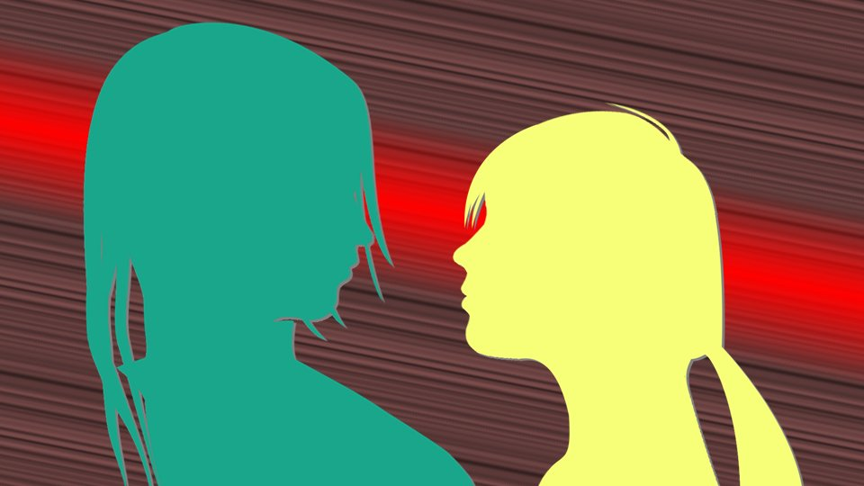
video: 桜.wmvJust when I thought she had gone toward the forest, there in front of me, out of nowhere, was Kana-chan.
Killing her with a surprise attack... is impossible...
If I resist, I'll be the one killed.
Like that cub...
Killing her with a surprise attack... is impossible...
If I resist, I'll be the one killed.
Like that cub...

While we walked through the forest, Kana-chan said nothing.
Nor did she show any sign of attacking me.
But her back left no opening.
If I pointed the muzzle at her now, she would be standing in front of me like before―
Nor did she show any sign of attacking me.
But her back left no opening.
If I pointed the muzzle at her now, she would be standing in front of me like before―
For a while now, the birdsong had been catching my ear.
I've heard that birds are creatures sensitive to bloodlust, but does Kana-chan have none?
Though if anyone is giving off bloodlust, it's probably me.
I've heard that birds are creatures sensitive to bloodlust, but does Kana-chan have none?
Though if anyone is giving off bloodlust, it's probably me.

She stopped in front of a hole gaping open in the rocks.
Kana-chan glanced at me for an instant, then slowly went into the hole.
She must want me to go in with her.
What could be in there?
Tools to torture me, or a cell...
She must want me to go in with her.
What could be in there?
Tools to torture me, or a cell...
But not going in was no longer an option.
I had been ready to destroy this place and get the death penalty, and yet my legs were shaking badly.
Some attachment to life still in me...
I had been ready to destroy this place and get the death penalty, and yet my legs were shaking badly.
Some attachment to life still in me...
No, that's wrong! For these 4 years, I have lived only for revenge!
If I can carry it out, then this life of mine...!
If I can carry it out, then this life of mine...!
Telling myself that, I dragged my shaking legs into the hole.
In the dark space, my sight was taken from me.
Then the scene from earlier came back to me.
Kana-chan, killing the cub.
That girl is capable of that kind of cruelty at times.
If I'm judged to be a danger―
Then the scene from earlier came back to me.
Kana-chan, killing the cub.
That girl is capable of that kind of cruelty at times.
If I'm judged to be a danger―
The moment I thought that, my legs started shaking again,
and I stopped walking.
I was scared... scared to go any further.
Scared of being killed.
My heart screamed out my pathetic true feelings.
Even if I wanted to cover my ears, it spoke straight to my auditory cortex, stirring up my attachment to life.
I was scared... scared to go any further.
Scared of being killed.
My heart screamed out my pathetic true feelings.
Even if I wanted to cover my ears, it spoke straight to my auditory cortex, stirring up my attachment to life.
So revenge, for someone like me...!
I'll go home... Yes, that's the thing to do!
I'll turn on my heel right now!
I'll go home... Yes, that's the thing to do!
I'll turn on my heel right now!
But my eyes gradually adjusted, and I began to see the space further in.
No, far from a space further in, there was no space beyond where I stood.
Dazzling sunlight was shining in from above.
It was this bright, and still my fear had robbed me of my sight.
No, far from a space further in, there was no space beyond where I stood.
Dazzling sunlight was shining in from above.
It was this bright, and still my fear had robbed me of my sight.

A rock ceiling so low a person could barely stand, and a cramped, oppressive space.
Sunlight leaked in through gaps in the rock, but even so, it took my eyes a few dozen seconds to adjust.
Apart from some snack wrappers scattered around, there was nothing strange.
Sunlight leaked in through gaps in the rock, but even so, it took my eyes a few dozen seconds to adjust.
Apart from some snack wrappers scattered around, there was nothing strange.
And right beside me, Kana-chan.
"Momoko-san, you don't have to be afraid. I won't do anything."
Had she sensed my fear?
Kana-chan thought of my feelings first.
"Momoko-san, you don't have to be afraid. I won't do anything."
Had she sensed my fear?
Kana-chan thought of my feelings first.
Kana-chan sat down on a hemp rush mat.
"Momoko-san, please sit down too. It's all right. I won't do anything..."
She gave me a smile that eased the tension.
"Okay..."
There was no running away anyway.
I bent my trembling knees and sat down too.
"Momoko-san, please sit down too. It's all right. I won't do anything..."
She gave me a smile that eased the tension.
"Okay..."
There was no running away anyway.
I bent my trembling knees and sat down too.
"This is my secret base."
Secret base?
Kana-chan seemed to be in middle school, but a secret base felt a little young for her age.
Secret base?
Kana-chan seemed to be in middle school, but a secret base felt a little young for her age.
"The only ones who know about this place are Papa and Mama.
So please don't tell anyone else about this place."
Kana-chan winked and held her index finger up in front of her lips.
A cute smile...
To my eyes, there didn't seem to be any bloodlust in that smile.
Kana-chan winked and held her index finger up in front of her lips.
A cute smile...
To my eyes, there didn't seem to be any bloodlust in that smile.
"Keep it a secret, please."
"............"
I didn't know how to answer.
I didn't intend to tell anyone, but more than that, I didn't understand why she would ask me for a promise like that.
In the first place, why had she brought me all the way here...?
"............"
I didn't know how to answer.
I didn't intend to tell anyone, but more than that, I didn't understand why she would ask me for a promise like that.
In the first place, why had she brought me all the way here...?
"............
............"
"............ ............"
For just under 10 seconds, we were both swallowed by silence.
Was I supposed to answer something?
"............ ............"
For just under 10 seconds, we were both swallowed by silence.
Was I supposed to answer something?
"All right. I won't tell anyone about this place."
At that, Kana-chan smiled again, as if relieved.
"Thank you."
But those were the only words that came back.
At that, Kana-chan smiled again, as if relieved.
"Thank you."
But those were the only words that came back.
That was when I realized.
Kana-chan was revealing her own secret to draw out my real reason for coming here.
In other words, a trade of secrets.
Kana-chan was revealing her own secret to draw out my real reason for coming here.
In other words, a trade of secrets.
The tumor ached again.
My heart gave a sharp throb.
Destroying this place, how could I ever say a thing like...
My heart gave a sharp throb.
Destroying this place, how could I ever say a thing like...
"Momoko-san, I'd like you to keep this a secret too..."
Kana-chan began to speak again, never letting her gentle smile slip.
A battle of wits with Kana-chan, a good 10 years younger than me―
I can't take her lightly just because she's in middle school.
Kana-chan began to speak again, never letting her gentle smile slip.
A battle of wits with Kana-chan, a good 10 years younger than me―
I can't take her lightly just because she's in middle school.
"My 15th birthday is on August 1.
Before I turn 15...
I'm planning to leave the settlement."
"Huh...?"
It was a secret far removed from a secret base.
Leaving here, she said, but given the time of year it couldn't be for school, and it seemed she hadn't told anyone yet, either.
"Huh...?"
It was a secret far removed from a secret base.
Leaving here, she said, but given the time of year it couldn't be for school, and it seemed she hadn't told anyone yet, either.
Having heard this much, I couldn't not ask.
"Why are you leaving?"
"Soon I..."
"Why are you leaving?"
"Soon I..."

"I'm going to kill Mama."
What's she talking about? This girl.
A joke... right...?
As a joke, it's far too cruel.
That goddess-like Sakura-san... and this Kana-chan is going to kill her...?
Haha, it has to be a joke after all.
Does she want to hear my story that badly?
A joke... right...?
As a joke, it's far too cruel.
That goddess-like Sakura-san... and this Kana-chan is going to kill her...?
Haha, it has to be a joke after all.
Does she want to hear my story that badly?
But Kana-chan just kept looking straight at me.
What's she playing at? Does she think she can coax my secret out of me with a joke like that?
She's still a middle schooler, after all.
Still... a child...
What's she playing at? Does she think she can coax my secret out of me with a joke like that?
She's still a middle schooler, after all.
Still... a child...
"Momoko-san, I'm going to kill Mama soon."
Kana-chan gazed at me steadily with those odd eyes of hers.
"Is that so... Did you have a fight or something?"
I answered with an attitude that plainly said, 'That's a joke, right?'
Kana-chan gazed at me steadily with those odd eyes of hers.
"Is that so... Did you have a fight or something?"
I answered with an attitude that plainly said, 'That's a joke, right?'
"No, it's not that.
I don't want to kill her, so I'm leaving here before that happens."
I couldn't quite follow what she meant.
"Then just don't kill her..."
"I'd like to, but I just can't stop it. Probably..."
I couldn't quite follow what she meant.
"Then just don't kill her..."
"I'd like to, but I just can't stop it. Probably..."
What on earth is the setup of this fantasy?
A middle schooler might well get lost in that kind of setup, but...
Maybe I should dig a little deeper.
A middle schooler might well get lost in that kind of setup, but...
Maybe I should dig a little deeper.
"Why would you kill Sakura-san? What do you mean, you can't stop it...?"
"Please, look at my eyes..."
"Your eyes...?"
"Please, look at my eyes..."
"Your eyes...?"

Needless to say, odd eyes, blue and green.
That alone is material enough for fantasizing that you're someone special.
Has she let it get pretty far out of hand...?
That alone is material enough for fantasizing that you're someone special.
Has she let it get pretty far out of hand...?
"These eyes are cursed."
"I-is that so..."
Ah, she's let it get completely out of hand.
At first I thought she was a polite, good girl, but she's at that age after all.
"I-is that so..."
Ah, she's let it get completely out of hand.
At first I thought she was a polite, good girl, but she's at that age after all.
"Momoko-san...
you know about the Megasawa City case, don't you?"
In that instant, the air around me froze.
The case at the root of my decision to take this revenge. There's no way I wouldn't know it.
In that instant, the air around me froze.
The case at the root of my decision to take this revenge. There's no way I wouldn't know it.
"Of course I know it..."
"I thought so. These eyes and the Megasawa City case are deeply connected."
The air around me, which I'd thought was frozen, thawed a little.
I see, so she's trying to tie her setup to that violent crime.
Makes sense, makes sense...
Make it make sense, me...!
"I thought so. These eyes and the Megasawa City case are deeply connected."
The air around me, which I'd thought was frozen, thawed a little.
I see, so she's trying to tie her setup to that violent crime.
Makes sense, makes sense...
Make it make sense, me...!
"My big sister, I told you about her, right? She's studying abroad right now.
My big sister isn't like me. Both her eyes are blue.
But my big sister had blue and green eyes too when she was born, the same as me, apparently."
The talk was starting to take a slightly different turn.
Human eye color doesn't change that easily.
The talk was starting to take a slightly different turn.
Human eye color doesn't change that easily.
"The moment the first Megasawa City case was over...
my big sister ended up with both eyes blue, apparently."
At that moment, I was certain.
What Kana-chan was saying was no fantasy.
She truly believed she would end up killing Sakura-san.
The causal link was unclear, but at the very least, an incident that gave her grounds had occurred around the time of the Megasawa City case.
At that moment, I was certain.
What Kana-chan was saying was no fantasy.
She truly believed she would end up killing Sakura-san.
The causal link was unclear, but at the very least, an incident that gave her grounds had occurred around the time of the Megasawa City case.
"Back then, my big sister wanted to kill Mama, wanted to kill her so badly she couldn't bear it, apparently.
It hurt as if something were keeping her from breathing...
Mama, she wanted to kill her, wanted to kill her...
So my big sister was shut away under here for a little while, apparently."
Under here...?
I see, there must be a cellar or something under this rush mat.
Under here...?
I see, there must be a cellar or something under this rush mat.
"So I'm leaving here before I start wanting to kill Mama.
I don't know why that happened to my big sister, but I think it's connected to the Megasawa City case.
No matter how long I wait, the color of my eyes doesn't change.
Until the color of these eyes changes, I won't see Mama."
"But you've been fine up to now, haven't you? Then..."
"But you've been fine up to now, haven't you? Then..."
"Papa told me that too.
If I ever suddenly want to kill Mama, I should tell him right away.
He said he'd help me."
Kotaro-san, help her...?
All the causes and effects are too tangled together for me to follow, but Kotaro-san must know something.
If I find that out, I'll have a clue for helping Kana-chan...
Kotaro-san, help her...?
All the causes and effects are too tangled together for me to follow, but Kotaro-san must know something.
If I find that out, I'll have a clue for helping Kana-chan...
No, what am I thinking!
I came here to destroy this settlement, Kana-chan along with it!
I don't owe her any help in the first place!
Stop growing! My tumor!
Please... stop...!
I came here to destroy this settlement, Kana-chan along with it!
I don't owe her any help in the first place!
Stop growing! My tumor!
Please... stop...!
"Momoko-san, you must have something troubling you too, right?
My aunt, you know about her, so what did you come here to do, Momoko-san?
On the train, you looked sad the whole time...
So I thought maybe I could at least listen to you...
And also..."
Kana-chan looked over at my bag.
Kana-chan looked over at my bag.
"Momoko-san, there's been a smell coming from your bag this whole time, the smell of gunpowder.
Is there a gun in there?"
She can tell by the smell...!?
I couldn't smell anything at all.
She can tell by the smell...!?
I couldn't smell anything at all.
"I hunt in the mountains a lot, so I know the smell of the hunting rifles the grown-ups use very well.
Momoko-san, please tell me.
I'll help you..."
"I... nothing..."
"I... nothing..."
"Someone from Motoki-cho comes to the Arata settlement carrying a gun.
To the Arata settlement, with its deep causal ties to that Megasawa City case.
I can tell that much is no small thing."
"I told you, nothing..."
"I told you, nothing..."
"I understand you can't trust me when we only met today.
But...
But Momoko-san, you've looked sad this whole time.
I want to help you...
Momoko-san, I want to make things even a little easier for you..."
Gazing steadily into my eyes, Kana-chan's blue and green eyes.
Not eyes that glared, but eyes that gazed.
A gaze with no sharpness, one that seemed to softly stroke my cheek.
Gazing steadily into my eyes, Kana-chan's blue and green eyes.
Not eyes that glared, but eyes that gazed.
A gaze with no sharpness, one that seemed to softly stroke my cheek.
When I looked into those eyes―
when she looked back at me―
it felt as if I could be very much at ease.
Under that gaze, the strength slowly drained out of me as well.
Under that gaze, the strength slowly drained out of me as well.
"Momoko-san, I told you about my plan to leave at 15.
You promised not to tell that secret, so I won't tell anyone your secret either, Momoko-san.
I can't casually ask you to trust me, but...
Momoko-san, I want to help you.
It's not that I want you to trust me. I want to help."
The gun, Mifuyu Niimura, Motoki-cho.
By now Kana-chan had seen through almost all of it.
As if there were any point in hiding it.
If, truly― if by telling Kana-chan I could truly be saved―
By now Kana-chan had seen through almost all of it.
As if there were any point in hiding it.
If, truly― if by telling Kana-chan I could truly be saved―
"Kana-chan...
I had...
a little sister.
A really smart, cute little sister."
Without my meaning to, those words came out of my mouth.
But I wasn't surprised by it, either.
Without my meaning to, those words came out of my mouth.
But I wasn't surprised by it, either.
No, there was one thing that surprised me.
The moment I said it out loud, I felt the ugly lump in my heart melt a little.
If I say it, I can feel better.
Kana-chan will―help me.
The moment I said it out loud, I felt the ugly lump in my heart melt a little.
If I say it, I can feel better.
Kana-chan will―help me.
"Kana-chan...
Please help me...
I..."
Kana-chan silently came close beside me and stroked my back.
So very comforting, that palm of hers.
So very comforting, that palm of hers.
Doubts about whether to trust her or not had disappeared.
I want her to help me.
Kana-chan, help me...
I want her to help me.
Kana-chan, help me...

―I confessed everything about how I'd come here.
The case in Motoki-cho.
How things were between us sisters.
That I'd wanted us to be closer.
How twisted my heart was.
The case in Motoki-cho.
How things were between us sisters.
That I'd wanted us to be closer.
How twisted my heart was.
For the first time, I said my plan out loud.
I cried as I confessed.
Not because I regretted what I'd done.
Because hearing that confession myself, I found it far too empty.
I cried as I confessed.
Not because I regretted what I'd done.
Because hearing that confession myself, I found it far too empty.
"Erina-san... was it?
That's a cute name."
Confessing while a middle schooler took pains to spare my feelings, I was utterly pathetic.
Kana-chan didn't get angry even when she heard my plan. Apart from a word here and there to show she was following, she listened in silence.
Confessing while a middle schooler took pains to spare my feelings, I was utterly pathetic.
Kana-chan didn't get angry even when she heard my plan. Apart from a word here and there to show she was following, she listened in silence.
"Momoko-san, you've been through something really painful.
If my big sister or my parents died, it would be painful for me too."
I see. Kana-chan must have thought about her family dying many times too.
That's why she isn't surprised, even hearing my story.
She understands the two opposing feelings, not wanting someone to die and wanting revenge on the enemy.
I see. Kana-chan must have thought about her family dying many times too.
That's why she isn't surprised, even hearing my story.
She understands the two opposing feelings, not wanting someone to die and wanting revenge on the enemy.
"Momoko-san, thank you for trusting me.
I'll keep this in my heart and nowhere else."
"I came here to kill every last person in this settlement. And still... why are you so kind?"
"Momoko-san, you won't kill anyone. I can tell."
"I came here to kill every last person in this settlement. And still... why are you so kind?"
"Momoko-san, you won't kill anyone. I can tell."
What's she saying, out of nowhere?
Kana-chan, who had been agreeing with me all this time, suddenly denied everything about me.
Is she trying to talk me around...?
She doesn't even know what I've been through all this time...!
Kana-chan, who had been agreeing with me all this time, suddenly denied everything about me.
Is she trying to talk me around...?
She doesn't even know what I've been through all this time...!
"Kana-chan, I'll say it to your face...
I'm not stopping. I'm going to destroy this settlement."
"You can't. Momoko-san, you can't do it."
"What do you mean...! How can you be so sure!?"
"Then please shoot me dead, right here, right now."
"Wha...!?"
"You can't. Momoko-san, you can't do it."
"What do you mean...! How can you be so sure!?"
"Then please shoot me dead, right here, right now."
"Wha...!?"
Then Kana-chan turned her back to me.
"See, like this I can't dodge.
Go ahead, please shoot.
You're planning to kill me, aren't you?
Then there's nothing to hesitate about, is there?"
Suddenly being told to shoot... how could I possibly...
Suddenly being told to shoot... how could I possibly...
Never mind shooting, I couldn't even take the gun out.
I was supposed to be ready...!
Why...!?
I was supposed to be ready...!
Why...!?
"What's wrong?
Can't you even hold the gun?
Shall I help you?"
Kana-chan snatched my bag and took out the gun.
Then she forced it into my hand and set the muzzle against the throat of Kana-chan herself.
Kana-chan wouldn't let go of my hand.
Then she forced it into my hand and set the muzzle against the throat of Kana-chan herself.
Kana-chan wouldn't let go of my hand.
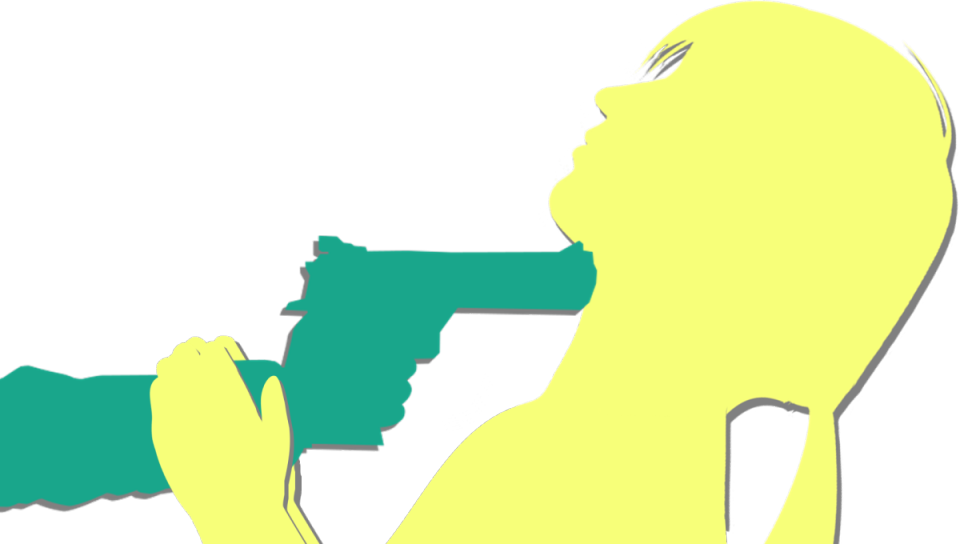
"Go on, please shoot. This is what you wanted, isn't it?"
"S-stop it...!"
My hands began to shake violently.
Me, shooting Kana-chan dead...!
"S-stop it...!"
My hands began to shake violently.
Me, shooting Kana-chan dead...!
"What's wrong?
What did you come all this way for?"
"Stop it...!"
"Didn't it take a lot of trouble just to get that gun?"
"Let go of my hand...!"
"If it means killing Mama, I'd rather just die."
"Don't die..."
"Stop it...!"
"Didn't it take a lot of trouble just to get that gun?"
"Let go of my hand...!"
"If it means killing Mama, I'd rather just die."
"Don't die..."
"Come on, hurry!"
"No...!"
"Just shoot...!"
"I won't...!"
"Remember what you came all this way for."
"I told you I can't...!"
"Your little sister, is that all she meant to you?"
"F-forgive me...!"
"No...!"
"Just shoot...!"
"I won't...!"
"Remember what you came all this way for."
"I told you I can't...!"
"Your little sister, is that all she meant to you?"
"F-forgive me...!"
"Hurry up and shoot!"
"I can't take this anymore!"
"I can't take this anymore!"
The moment Kana-chan let go, both my hands dropped limply to the ground.
I can't... do it anymore.
I don't want to shoot Kana-chan.
I don't want Kana-chan to die.
I can't... do it anymore.
I don't want to shoot Kana-chan.
I don't want Kana-chan to die.
"I can tell.
When I look at the eyes, whether someone really wants to kill or not."
"The eyes...?"
"The eyes...?"
"I've taken a lot of lives with these hands.
Through hunting, I've seen many times how living things die.
At the end, they either fight back desperately or run.
Momoko-san, your eyes...
are not eyes like that.
Eyes in so much pain... eyes that are screaming.
Eyes like a cub whose parent was killed."
"You saw it earlier, didn't you?
That cub didn't understand what had happened. All it could do was look at the mother bear's body.
Momoko-san, you're the same. You still can't accept the death of Erina-san, and you keep looking at her remains.
Without being able to cry, without understanding your own heart, you came here.
That's why there's no way you can shoot.
You're the same as the cub, before it's driven by a relentless desire for revenge."
Hearing that, I let out a big sigh, my hands still on the ground.
Ah, so that's what it is...
I couldn't do anything on my own, couldn't accept it, and instead of screaming, I've been doing all this...
Ah, so that's what it is...
I couldn't do anything on my own, couldn't accept it, and instead of screaming, I've been doing all this...
I'm powerless, someone who can't do anything.
The "helpless" someone I was supposed to have left behind long ago.
What was in my heart wasn't a desire for revenge.
I just... wanted to run away from reality.
The "helpless" someone I was supposed to have left behind long ago.
What was in my heart wasn't a desire for revenge.
I just... wanted to run away from reality.
Under the pretext of revenge, I'd planned a mass murder and escaped from reality.
A plan to gain self-satisfaction through revenge.
I'd thought I understood that much.
A plan to gain self-satisfaction through revenge.
I'd thought I understood that much.
But by being seen through like this, I could see my true feelings.
Even if I carry out my revenge, no self-satisfaction will remain.
I'll just lose my way of looking away from reality.
As long as I don't accept the death of Erina―
Even if I carry out my revenge, no self-satisfaction will remain.
I'll just lose my way of looking away from reality.
As long as I don't accept the death of Erina―
"What...!
Kana-chan, what could you...
possibly understand about me...!"
Even at this point, I was still putting on a brave front.
Otherwise, what had I been doing all this time...
How was I supposed to protect myself from now on?
How was I supposed to accept the death of Erina?
I don't know how to scream.
Even at this point, I was still putting on a brave front.
Otherwise, what had I been doing all this time...
How was I supposed to protect myself from now on?
How was I supposed to accept the death of Erina?
I don't know how to scream.
"Mama could do a better job of healing your heart, Momoko-san, I think.
Only if you feel like it, but...
Mama, please try talking to her too."
"I couldn't... tell her something like that..."
"I couldn't... tell her something like that..."
"It's okay. My mama is a really kind person.
Momoko-san, people like you are exactly the ones Mama helps.
Only tell her if you feel like it."
"Kana-chan, you're plenty kind yourself..."
"Kana-chan, you're plenty kind yourself..."
"No, I'm scared too.
That any time now, I might... Mama..."
I hadn't asked her about that in detail.
No, it seemed Kana-chan didn't know the details herself.
If Kana-chan is in trouble, I want to help her too.
I hadn't asked her about that in detail.
No, it seemed Kana-chan didn't know the details herself.
If Kana-chan is in trouble, I want to help her too.
"Kana-chan...
If you're ever scared, tell me anything at all.
All I can do is listen, but..."
"Okay. Thank you."
Kana-chan smiled sweetly.
That smile was just like a goddess's.
She really is the daughter of that Sakura-san.
Kana-chan smiled sweetly.
That smile was just like a goddess's.
She really is the daughter of that Sakura-san.
Come to think of it, Erina used to have a smile like this too.
Different from a big grin like Erina's, but a smile that somehow put people at ease.
After I pushed Erina away, that smile was never turned on me again.
Different from a big grin like Erina's, but a smile that somehow put people at ease.
After I pushed Erina away, that smile was never turned on me again.
Erina...
I miss her.
My little sister... I miss her.
I'm sad.
My little sister... I miss her.
I'm sad.
Now I realized it clearly.
I am sad.
Sadness, finally welling up in me, who had kept running from sadness and loneliness.
Maybe I've been able to accept reality, at least a little.
I am sad.
Sadness, finally welling up in me, who had kept running from sadness and loneliness.
Maybe I've been able to accept reality, at least a little.
"Kana-chan, you're a bit like my little sister.
My sister was about the age you are now, Kana-chan, when she died, I think..."
"Then please think of me as your little sister. My real big sister is still out there, but I'd be happy to have one more big sister. We're sisters who've shared our secrets!"
Honestly... how good can one girl be?
"Then please think of me as your little sister. My real big sister is still out there, but I'd be happy to have one more big sister. We're sisters who've shared our secrets!"
Honestly... how good can one girl be?
I'd spent all that money and time to come this far.
And what lay beyond it was a smile a little like my little sister's, like a goddess's.
And what lay beyond it was a smile a little like my little sister's, like a goddess's.
If I'd gone ahead with my revenge, I'd surely have been crushed by empty days again.
Arrested, sentenced to death, right up until I was hanged, they'd have been days of nothing but running from reality and chasing the phantom of Erina.
Arrested, sentenced to death, right up until I was hanged, they'd have been days of nothing but running from reality and chasing the phantom of Erina.
The twisted conscience that had made the tumor its seedbed was gone.
At the same time, my desire for revenge vanished too, and here I am, having accepted reality and moved just a tiny bit forward.
By the healing smile of a goddess.
At the same time, my desire for revenge vanished too, and here I am, having accepted reality and moved just a tiny bit forward.
By the healing smile of a goddess.
"Momoko-san, let's go home.
It'll be evening soon."
"Okay..."
With Kana-chan pulling me by the hand, I got to my feet.
Normally it would be the other way around. A middle schooler a whole 10 years younger than me, and I...
Once I was on my feet, my body felt very light.
"Okay..."
With Kana-chan pulling me by the hand, I got to my feet.
Normally it would be the other way around. A middle schooler a whole 10 years younger than me, and I...
Once I was on my feet, my body felt very light.
"Ha! Momoko-san, you're smiling for real now."
"Huh?"
"No, it's nothing!"
"Huh?"
"No, it's nothing!"
And with that, Kana-chan hurried right out of the secret base.
Still... this secret base...
Still... this secret base...
"Hey, Kana-chan, why not clean up a little? It's your precious secret base, isn't it?"
"Aww, you sound just like Mama..."
"No! This is an important place, so keep it clean!
At least take your snack trash home with you!"
"Okaaay..."
And so I put on a bit of an older-sister act.
"Okaaay..."
And so I put on a bit of an older-sister act.
When I was in elementary school, I think I used to nag Erina about every little thing like this.
A very nostalgic feeling. A happy feeling.
Thank you, Kana-chan.
A very nostalgic feeling. A happy feeling.
Thank you, Kana-chan.
The sky was tinged a faint orange.
What lay at the end of revenge was a contradictory fact: it destroyed the desire for revenge.
I'll impose on them for just one night, then leave here as soon as I can.
Once I'm back in Motoki-cho, I have to rethink who I'll be from now on.
What lay at the end of revenge was a contradictory fact: it destroyed the desire for revenge.
I'll impose on them for just one night, then leave here as soon as I can.
Once I'm back in Motoki-cho, I have to rethink who I'll be from now on.
The breeze, its heat gone, felt wonderfully refreshing.
I had thought my heart was twisted, but it was simpler than I'd imagined.
I'd only been distracting myself because I was lonely.
From the very start, I could never have killed anyone.
I had thought my heart was twisted, but it was simpler than I'd imagined.
I'd only been distracting myself because I was lonely.
From the very start, I could never have killed anyone.
Tomorrow happens to be the anniversary of Erina's death. When I get back to Motoki-cho, I'll visit Erina's grave.
And in front of Erina, I'll accept reality once more.
As her big sister, I'll go and show Erina that I'm properly facing forward.
And in front of Erina, I'll accept reality once more.
As her big sister, I'll go and show Erina that I'm properly facing forward.
But... I still regret that we never made up, right to the end.
Well, it's entirely my fault, so I don't intend to complain about it now.
Well, it's entirely my fault, so I don't intend to complain about it now.
Oh, come to think of it...
That plan-and-diary I'd left lying on the desk in my room.
If my parents see it by some chance, there'll be real trouble.
I'd like to hurry home and get rid of it, but...
If my parents see it by some chance, there'll be real trouble.
I'd like to hurry home and get rid of it, but...
But I've sorted out my feelings.
If they've seen it, I'll tell them honestly what's in my heart.
Surely they'll understand.
If they've seen it, I'll tell them honestly what's in my heart.
Surely they'll understand.
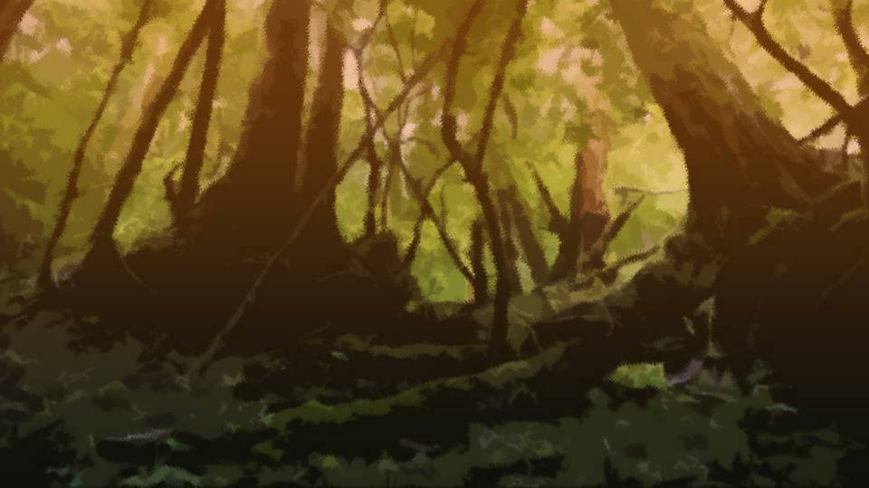
The beauty of this forest, which I hadn't noticed on the way to the secret base.
Just taking a walk here seems enough to make me sound in body and mind.
Just taking a walk here seems enough to make me sound in body and mind.
It must be because she was born and raised in a place like this that Kana-chan turned out such a good girl.
And the influence of Sakura-san, too.
And the influence of Sakura-san, too.
"Kana-chan, this forest is so beautiful."
"............"
"Kana-chan?"
"............"
"Kana-chan?"
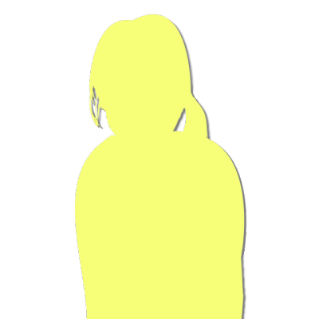
"Uuh..."
Kana-chan let out something like a groan.
"What's wrong?"
"No, it's just, my stomach's been hurting a little for a while now... What is this...?"
It seemed to be a stomachache.
It didn't look that bad, though...
Kana-chan let out something like a groan.
"What's wrong?"
"No, it's just, my stomach's been hurting a little for a while now... What is this...?"
It seemed to be a stomachache.
It didn't look that bad, though...
Then, suddenly, Kana-chan lifted her head.
"I-I'm sorry! I'm going home ahead of you!"
"I-I'm sorry! I'm going home ahead of you!"
Kana-chan left me behind and ran off as fast as she could.
Is her stomach really that bad?
I know the way back, and it's still light, so I won't get lost, but...
Is her stomach really that bad?
I know the way back, and it's still light, so I won't get lost, but...

"Uh, I'm back."
"Ah, welcome back."
When I went inside, Sakura-san came to greet me.
As if this were my own home.
Sakura-san's smile really is lovely...
When I went inside, Sakura-san came to greet me.
As if this were my own home.
Sakura-san's smile really is lovely...
"Hasn't Kana-chan come back?"
"Kana came home a little while ago. It seems she went to her room on the second floor."
"I see. Thank you."
Is Kana-chan all right? I'll go see how she's doing.
"Kana came home a little while ago. It seems she went to her room on the second floor."
"I see. Thank you."
Is Kana-chan all right? I'll go see how she's doing.

"Y-yes..."
When I knocked on Kana-chan's door, the answer didn't sound very composed.
"Can I come in?"
"Yes, go ahead..."
When I knocked on Kana-chan's door, the answer didn't sound very composed.
"Can I come in?"
"Yes, go ahead..."

"Are you feeling okay?"
"Oh, um... yes, I'm fine..."
Kana-chan's face seemed a little red.
And she wasn't really trying to meet my eyes.
How to put it... she looked terribly embarrassed...
"Oh, um... yes, I'm fine..."
Kana-chan's face seemed a little red.
And she wasn't really trying to meet my eyes.
How to put it... she looked terribly embarrassed...
............
Oh, so that's what it is.
Same sex or not, this isn't something I should pry into any further.
From the look of her, it's probably her first time.
No, I'll stop even thinking about it. It's far too crude.
Same sex or not, this isn't something I should pry into any further.
From the look of her, it's probably her first time.
No, I'll stop even thinking about it. It's far too crude.
"If you're okay, then that's good.
Well, if anything's wrong, come talk to me."
"Yes... Thank you."
At last Kana-chan met my eyes.
But she still seemed embarrassed...
At last Kana-chan met my eyes.
But she still seemed embarrassed...
"Uh... Momoko-san,
for now... please don't tell anyone.
I'll tell them myself..."
"Okay, I understand."
I had been thrown by something that sudden once myself.
I understand that feeling well, so I'll let Kana-chan do it her way.
"Okay, I understand."
I had been thrown by something that sudden once myself.
I understand that feeling well, so I'll let Kana-chan do it her way.
"I'm staying here, so I'll go downstairs and help with something."
"No, Momoko-san, you're a guest, so please relax. I'll go."
"Is your stomach okay?"
"I-I'm fine! It's not like I'm sick."
"Is your stomach okay?"
"I-I'm fine! It's not like I'm sick."
"............
But I'll come too, after all. I want to sort out how I've felt up to now as well.
So I thought I'd properly meet the people here face to face."
"Then let's go together."
"Then let's go together."

"Mama, anything I can help with?"
"Let me see... just staying with Momoko-san is enough.
Dinner is almost ready already."
"Oh, okay... Hey, um... Mama."
"Hm?"
"............ No, never mind."
"............?"
"Oh, okay... Hey, um... Mama."
"Hm?"
"............ No, never mind."
"............?"
Sakura-san didn't seem to have noticed the change in Kana-chan yet.
It seems there's the type who can tell their parents about this kind of thing plainly, and the type who gets all fidgety, like Kana-chan.
Which one was I?
It seems there's the type who can tell their parents about this kind of thing plainly, and the type who gets all fidgety, like Kana-chan.
Which one was I?
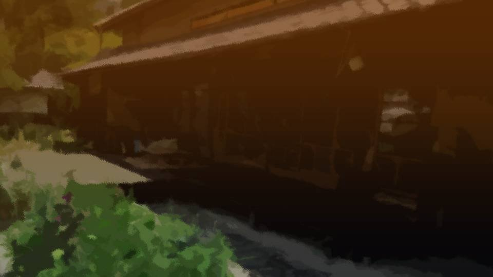
video: 桜.wmvWhen I looked outside, the sun was setting and everything around was growing dark.
Soon it would be the time when Sakura-san's intuition worked.
Though apparently it didn't work unless she went somewhere narrow...
Soon it would be the time when Sakura-san's intuition worked.
Though apparently it didn't work unless she went somewhere narrow...
video: 桜.wmvA dark, narrow place―
Unless she's somewhere like a bathroom with the light off, the intuition probably won't work.
But... what is this...
A very bad feeling, somewhere in this dusk.
I don't have intuition like the second generation's, but it's something like a foreboding...
I hope nothing bad happens.
Unless she's somewhere like a bathroom with the light off, the intuition probably won't work.
But... what is this...
A very bad feeling, somewhere in this dusk.
I don't have intuition like the second generation's, but it's something like a foreboding...
I hope nothing bad happens.
video: 桜.wmvNot that I'm one to say so, when I first came here to kill every last person in this place.
I'm overthinking it. It's just tension that's still lingering.
My desire for revenge has died, tumor and all.
I'm overthinking it. It's just tension that's still lingering.
My desire for revenge has died, tumor and all.
video: 桜.wmv"By the way, Momoko-san,

you seemed interested in my intuition. If you'd like, shall I do a reading for you?"
"Huh? Of my future?"
"Huh? Of my future?"

"Calling it the future is a bit much.
If you're in any danger, Momoko-san, I can give you advice.
At this time of year, I do readings for everyone and check whether that day's hunt holds any danger.
Right now, I'm doing great work for this settlement!"
Sakura-san said it a little proudly.
Sakura-san said it a little proudly.
"But Mama, what about your health..."
"Just a little is fine. Oh... as I told you, my intuition needs a dark, narrow place to work. But if I stay there more than 15 minutes, I start to feel a little unwell..."
"Just a little is fine. Oh... as I told you, my intuition needs a dark, narrow place to work. But if I stay there more than 15 minutes, I start to feel a little unwell..."
"Actually, this afternoon too, while I was riding in a taxi, we got stuck in a tunnel with no lights.
The taxi just would not get fixed, and that is how I fell ill.
I got out of the taxi and forced myself as far as the station, and that's where I met you, Momoko-san."
Still, I hesitated to put any strain on Sakura-san's body.
Still, I hesitated to put any strain on Sakura-san's body.
"Kana, 5 or 10 minutes is fine.
This afternoon Momoko-san helped me, so I have to do at least this much."
"Don't overdo it, okay?"
It's a rare chance, so I might as well let her do a reading, as if it were fortune-telling.
"Don't overdo it, okay?"
It's a rare chance, so I might as well let her do a reading, as if it were fortune-telling.
"Then, just a little, please."
"Then go on ahead to your room, Momoko-san. I'll come as soon as I finish getting dinner ready."
"Then go on ahead to your room, Momoko-san. I'll come as soon as I finish getting dinner ready."
With that, Sakura-san went into the kitchen.
"Hey, Kana-chan, how often does Sakura-san's foresight come true?"
"How often...? It comes true 100% of the time, obviously!"
I see. So it's nothing like fortune-telling.
I have no proof yet that Sakura-san belongs to the second generation, but it's 99% certain.
"How often...? It comes true 100% of the time, obviously!"
I see. So it's nothing like fortune-telling.
I have no proof yet that Sakura-san belongs to the second generation, but it's 99% certain.
"Is foresight like this something only Sakura-san can do?"
"That's right. It'd be a real problem if everyone could do something like that."
Which means there's only one of the second generation here.
No one else who can foresee danger, then...
"That's right. It'd be a real problem if everyone could do something like that."
Which means there's only one of the second generation here.
No one else who can foresee danger, then...
Just then, I remembered what Kana-chan and I had talked about at the secret base.
Kana-chan was afraid that, like her older sister, she would come to harbor murderous intent toward Sakura-san.
But if that did happen, wouldn't Sakura-san be able to sense it?
In other words, whether she can foresee being killed by Kana-chan.
Kana-chan was afraid that, like her older sister, she would come to harbor murderous intent toward Sakura-san.
But if that did happen, wouldn't Sakura-san be able to sense it?
In other words, whether she can foresee being killed by Kana-chan.
If I remember right, the conditions for Sakura-san's intuition to work were...
・Only while the cherry trees are in bloom
・A dark, narrow place
・With the above two met, seeing in person someone who will meet danger
・Or else, hearing that person's voice
I believe that was it.
・Only while the cherry trees are in bloom
・A dark, narrow place
・With the above two met, seeing in person someone who will meet danger
・Or else, hearing that person's voice
I believe that was it.
Earlier, 'check whether that day's hunt holds any danger,' Sakura-san had said.
Which means she can probably foresee about a day ahead at most.
Isn't there some sign that Kana-chan will harbor murderous intent?
Some sign, before she turns 15, that gives a glimpse of it―
Which means she can probably foresee about a day ahead at most.
Isn't there some sign that Kana-chan will harbor murderous intent?
Some sign, before she turns 15, that gives a glimpse of it―
And one more thing: a different question welled up in me.
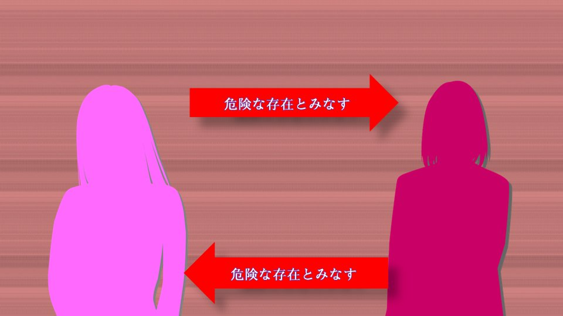
Suppose there were two of the second generation, and one of them tried to harm the other. What would happen?
And on top of that, with both of them meeting the conditions for foresight.
If A tried to do harm, B would naturally respond in some way.
If B were driven by the will to 'strike before being struck'...
And on top of that, with both of them meeting the conditions for foresight.
If A tried to do harm, B would naturally respond in some way.
If B were driven by the will to 'strike before being struck'...
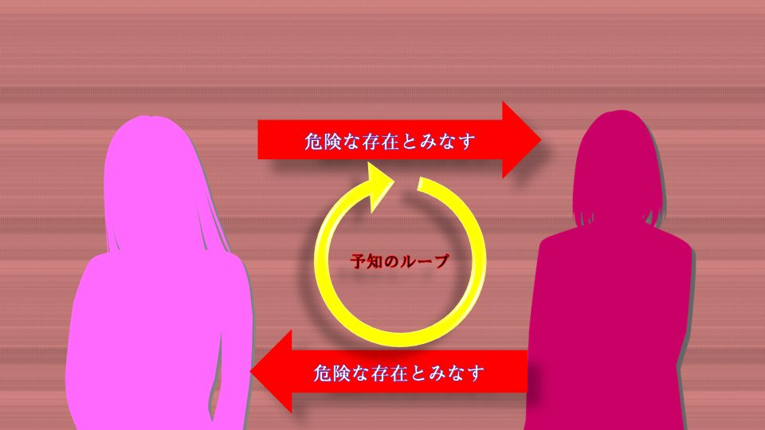
Most likely, each would sense danger from the other, and neither could judge calmly anymore.
In other words, 'a foresight loop' would arise.
Since it's called intuition, it probably judges danger not on purpose but like a flashback.
If a foresight loop arises that neither one can control...
In other words, 'a foresight loop' would arise.
Since it's called intuition, it probably judges danger not on purpose but like a flashback.
If a foresight loop arises that neither one can control...
The nerve cells of the brain exchange information through faint electric currents.
Normally this information processing takes place within one brain, but when a foresight loop arises, it is the same as two brains processing the same information.
Normally this information processing takes place within one brain, but when a foresight loop arises, it is the same as two brains processing the same information.
Unstoppable flashbacks would go on, and on top of that, twice the usual information would pour into the brain.
Couldn't this be an extremely dangerous state?
It would go on until the conditions for foresight disappeared or one of them lost consciousness.
Couldn't this be an extremely dangerous state?
It would go on until the conditions for foresight disappeared or one of them lost consciousness.
"Oh, Momoko-san, you're still here?
Well, I'm all done here, so let's go up to the second floor."
"Oh, yes. Kana-chan, what are you going to do?"
"Oh, yes. Kana-chan, what are you going to do?"
"I guess I'll go heat up the bath or something. It's not done yet, right?"
"That's right. Then I'll leave it to you."
"That's right. Then I'll leave it to you."
I'd imagined something strange.
Even if a foresight loop could happen, for it to be a dangerous state...
Besides, there's only one of the second generation, so a situation like that can't actually happen.
Apparently this side of me is like Erina.
Even if a foresight loop could happen, for it to be a dangerous state...
Besides, there's only one of the second generation, so a situation like that can't actually happen.
Apparently this side of me is like Erina.
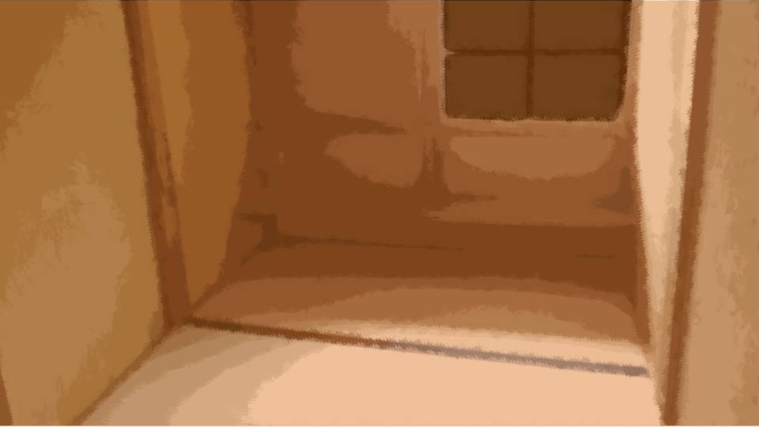
Sakura-san and I sat facing each other in the darkening room.
In another 10 minutes it would be pitch dark.
In another 10 minutes it would be pitch dark.
"Is a room about this size all right?"
"Yes, a three-mat room like this is about the limit. If the ceiling is low, I can do it in a slightly bigger room. When I use my foresight, I always use this room."
The room we had entered was a small one in a corner of the second floor.
"Yes, a three-mat room like this is about the limit. If the ceiling is low, I can do it in a slightly bigger room. When I use my foresight, I always use this room."
The room we had entered was a small one in a corner of the second floor.
"Uh... why do you have precognition like that...?"
"That's... Mm... I'm sorry, I haven't told anyone this. So..."
She hasn't told anyone?
That would mean neither Kotaro-san nor Kana-chan knows the reason.
"That's... Mm... I'm sorry, I haven't told anyone this. So..."
She hasn't told anyone?
That would mean neither Kotaro-san nor Kana-chan knows the reason.
But from the way she just put it, Sakura-san seems to know the cause.
Could it be... the blood of Eiichiro Niimura...?
If so, it would make sense that Sakura-san became the second generation...
But it's hard to probe any further.
Well, it doesn't matter now anyway.
Could it be... the blood of Eiichiro Niimura...?
If so, it would make sense that Sakura-san became the second generation...
But it's hard to probe any further.
Well, it doesn't matter now anyway.
More importantly, Kana-chan had suggested I talk to Sakura-san about the revenge too.
It was true: looking into Sakura-san's eyes, I felt very calm, very soothed...
There was still time before the room went completely dark.
It was true: looking into Sakura-san's eyes, I felt very calm, very soothed...
There was still time before the room went completely dark.
"Uh... earlier, I told Kana-chan.
Why I came here..."
"Why you came here?"
"I'm sorry. I lied. I wasn't traveling alone. I meant to come here from the start."
"I see... Thank you. For telling me honestly."
Sakura-san answered that way, still wearing a smile without a trace of resentment.
"Why you came here?"
"I'm sorry. I lied. I wasn't traveling alone. I meant to come here from the start."
"I see... Thank you. For telling me honestly."
Sakura-san answered that way, still wearing a smile without a trace of resentment.
"Momoko-san, just as Kana said, you sometimes looked very sad.
Momoko-san, where have you come from?"
"From Motoki-cho, in Sawa Prefecture. My real name is Momoko Goto."
"Motoki-cho...? So... that's how it was..."
The smile vanished from Sakura-san's face.
In its place, a very sad look.
"From Motoki-cho, in Sawa Prefecture. My real name is Momoko Goto."
"Motoki-cho...? So... that's how it was..."
The smile vanished from Sakura-san's face.
In its place, a very sad look.
"If I remember correctly, among the victims of the Motoki-cho case was someone named Erina Goto-san.
Momoko-san, could you be..."
"Erina is my little sister. I wanted revenge for my sister on her enemy, so I came here... But talking with Kana-chan, I've sorted out my feelings. Kana-chan said that if I talked to you too, Sakura-san, I might feel even calmer."
"Erina is my little sister. I wanted revenge for my sister on her enemy, so I came here... But talking with Kana-chan, I've sorted out my feelings. Kana-chan said that if I talked to you too, Sakura-san, I might feel even calmer."
"Is that so... I'm glad Kana could be of help to you, Momoko-san.
And...
I am truly sorry.
Your sister... considering how you must feel about her, Momoko-san, it is only natural that you came here."
Why is Sakura-san apologizing?
Apologizing on behalf of the settlement...?
Why is Sakura-san apologizing?
Apologizing on behalf of the settlement...?
"The root cause of what happened in Motoki-cho is―
none other than me."
"Huh?"
What is she suddenly saying?
Even if she's speaking for the settlement, calling herself the root cause is surely―
"Huh?"
What is she suddenly saying?
Even if she's speaking for the settlement, calling herself the root cause is surely―
"But I know. The one who killed Erina was Mifuyu Niimura.
The root cause, she―"
"Yes, I also know that it was indeed Mifuyu-chan who did it with her own hands. Mifuyu-chan and her daughter, Haruka-chan, are shut away in the mountains for a while, to escape the public eye."
"Yes, I also know that it was indeed Mifuyu-chan who did it with her own hands. Mifuyu-chan and her daughter, Haruka-chan, are shut away in the mountains for a while, to escape the public eye."
Is that the tradition Kana-chan called the mountain seclusion or something?
They can't tell Kana-chan, young as she is, that they're hiding a murderer, relative or not, so they probably explained it with the tradition as a pretext.
They can't tell Kana-chan, young as she is, that they're hiding a murderer, relative or not, so they probably explained it with the tradition as a pretext.
"But...
Kana's older sister, Chigaya... to save her, I...
The Megasawa City case happened because of that..."
That incident happened in order to save her daughter?
I can't see any connection at all.
That incident happened in order to save her daughter?
I can't see any connection at all.
"Momoko-san. There is a terrible curse in this settlement.
A curse that makes you want to kill people."
"You mean―"
The first thing that came to mind was Kana-chan.
How Kana-chan would want to kill Sakura-san one of these days, she'd said.
"You mean―"
The first thing that came to mind was Kana-chan.
How Kana-chan would want to kill Sakura-san one of these days, she'd said.
"Kana-chan told me.
Sakura-san, she said she'd probably come to want to kill you."
"So Kotaro had already told Kana. In this settlement, a killing that comes about that way is called―"
"So Kotaro had already told Kana. In this settlement, a killing that comes about that way is called―"
At that moment, the sun set completely, and the room was wrapped in darkness.
The foresight... was beginning...
The foresight... was beginning...

"U-uaaaagh!!!!"
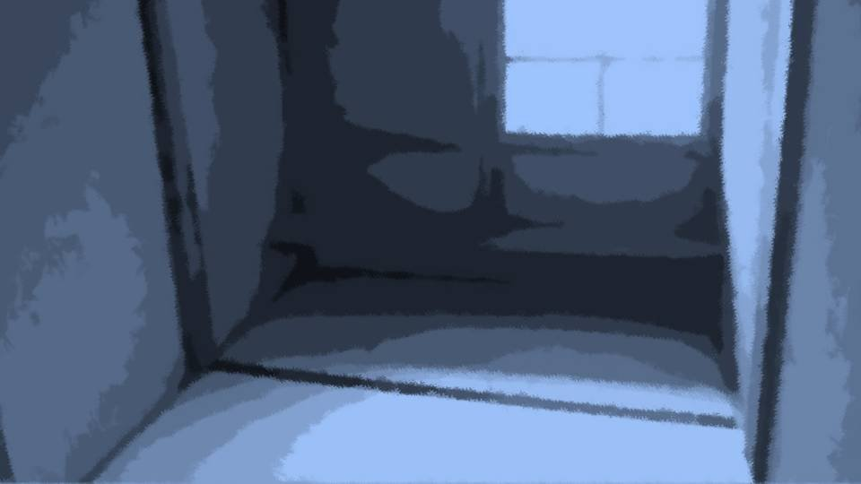
Suddenly Sakura-san clutched her head and collapsed.
"Sakura-san! What's wrong!?"
"Sakura-san! What's wrong!?"

"Ka...
Kana... she's...!"
What on earth is going on...!?
Kana-chan, what's happened to her...!?
What on earth is going on...!?
Kana-chan, what's happened to her...!?
Just then, the door of the room was opened.
"Ma... Mama! What's wrong!? Are you okay!?"
It was Kana-chan.
It was Kana-chan.
Kana-chan ran to Sakura-san and helped her sit up.
But―
But―
"Uuuh...! What is this...!"
This time it was Kana-chan who, just like Sakura-san, hung her head and began breathing hard.
This time it was Kana-chan who, just like Sakura-san, hung her head and began breathing hard.
"Ah...
Gk-k-k-k-k-k-k-k-k-k-k"
"Ghhk-k-k-k-k-k-k-k-k-k-k-k-k-k-k"
The faint light leaking in from the hallway lit up Kana-chan's eyes.
Kana-chan's eyes were opened wide and bloodshot, every single blood vessel in them standing out clearly enough to see.
Kana-chan's eyes were opened wide and bloodshot, every single blood vessel in them standing out clearly enough to see.
"Mama...
Ghhk-k-k-k-k-k.
Mama...
die..."
"Dieeeee"
Kana-chan leapt at Sakura-san and squeezed her throat, tighter and tighter.
"Kana-chan, stop it!"
I grabbed Kana-chan by both shoulders to pull her away.
But she was as strong as a grown man.
"Kana-chan, stop it!"
I grabbed Kana-chan by both shoulders to pull her away.
But she was as strong as a grown man.
"Uh...
aaah..."
Sakura-san's neck creaked, and Kana-chan's fingers sank in deeper.
Sakura-san's neck creaked, and Kana-chan's fingers sank in deeper.
Then suddenly Kana-chan let go, clutched her head,
and writhed around the cramped three-mat room.
"Kill meeee!!
Hurry and kill meeee!!
Ghhk-k-k-k-k-k-k"
Now she began begging to be killed.
Could it be... this is the curse that makes you kill people, the one she just mentioned!?
Could it be... this is the curse that makes you kill people, the one she just mentioned!?
"Sakura-san, hurry, get away!"
But Sakura-san stayed down on the floor, holding her throat.
I hauled Sakura-san up by the arm and dragged her out into the hallway.
But Sakura-san stayed down on the floor, holding her throat.
I hauled Sakura-san up by the arm and dragged her out into the hallway.
But Sakura-san's leg was caught in Kana-chan's grip.
"Momo... ko... san!
Hurry, kill me...!
Shoot me... through the head...!
Mama... is going to die...
Mama... die...
Kill... me...!"
"What are you saying!? There's no way I could..."
"What are you saying!? There's no way I could..."

"Mama is going to diiiiiie!!!"
No sooner had she stood up than she threw herself against the window and leapt out of the house.
"Kana-chan!"

I hurriedly looked down, but...
She wasn't there.
The sun had fully set, and all I could see was the garden, lit by a faint glow.
She wasn't there.
The sun had fully set, and all I could see was the garden, lit by a faint glow.
"Kana!"
Just then Kotaro-san appeared.
"Fujino-san! Where's Kana!?"
Just then Kotaro-san appeared.
"Fujino-san! Where's Kana!?"

Even as he asked, Kotaro-san rushed to my side and looked down from the window.

"Damn! I was too late! Fujino-san! Take care of Sakura!"
And then he left the room at once.
Sakura-san and I were left behind in the room.
I don't know what happened, but one thing I can say is that the 'murderous intent' Kana-chan feared has surfaced.
I don't know what happened, but one thing I can say is that the 'murderous intent' Kana-chan feared has surfaced.
"Sakura-san, are you all right!?"
"Y-yes...
Cough, cough...!"
It seemed she had somehow escaped serious injury.
Sakura-san must have had a terrible foresight just before Kana-chan appeared.
That reaction was anything but normal.
It seemed she had somehow escaped serious injury.
Sakura-san must have had a terrible foresight just before Kana-chan appeared.
That reaction was anything but normal.
video: 桜.wmvThe cherry blossoms danced gracefully through the air, feigning ignorance.
These flowers must know where Kana-chan has gone.
Kana-chan... where did you go...?
These flowers must know where Kana-chan has gone.
Kana-chan... where did you go...?
―It was past 8 p.m.
The people of the settlement had set out into the surrounding mountains to search for Kana-chan.
I was in the living room, under the bright electric lights.
And...
The people of the settlement had set out into the surrounding mountains to search for Kana-chan.
I was in the living room, under the bright electric lights.
And...
"Momoko-san, I'm sorry... for this happening so suddenly..."
Sakura-san's neck still clearly bore the marks of strangling.
Only Sakura-san and I had been left here.
Kotaro-san had asked me to stay with Sakura-san.
Sakura-san's neck still clearly bore the marks of strangling.
Only Sakura-san and I had been left here.
Kotaro-san had asked me to stay with Sakura-san.
I want to know what happened, but Sakura-san probably can't talk calmly right now.
Right now I need to look after Sakura-san's heart. After all, she was nearly killed by her daughter.
Right now I need to look after Sakura-san's heart. After all, she was nearly killed by her daughter.
"Chigaya was... like that too..."
Chigaya? If I remember right, Kana-chan's older sister, Sakura-san's eldest daughter.
So this isn't the first time Sakura-san has been through this?
Come to think of it, I think Kana-chan said something like that at the secret base.
Chigaya? If I remember right, Kana-chan's older sister, Sakura-san's eldest daughter.
So this isn't the first time Sakura-san has been through this?
Come to think of it, I think Kana-chan said something like that at the secret base.
"Why did Kana-chan...
Oh, I'm sorry. Please just rest for now."
"No, this concerns you too, Momoko-san. The Motoki-cho case, and the Megasawa City case..."
Connected to both cases, she says, but...
"No, this concerns you too, Momoko-san. The Motoki-cho case, and the Megasawa City case..."
Connected to both cases, she says, but...
"Chigaya became like that once too, long ago, but she recovered with a certain medicine.
A certain medicine that exists only in this settlement."
A certain medicine? Does she mean Droga?
From what I found out, it's supposed to be something that removes the limiter controlling muscle strength.
A certain medicine? Does she mean Droga?
From what I found out, it's supposed to be something that removes the limiter controlling muscle strength.
"What kind of medicine is it?"
"It's... a medicine made from the roots of a cherry tree that grows wild only around here."
"Could that medicine be... Droga?"
"............? Droga...? No, here the medicine is called falsificaso."
"It's... a medicine made from the roots of a cherry tree that grows wild only around here."
"Could that medicine be... Droga?"
"............? Droga...? No, here the medicine is called falsificaso."
Huh? So it's something else...
Falsi-whatever. That's a real tongue-twister of a name.
Doesn't Sakura-san know about Droga?
Falsi-whatever. That's a real tongue-twister of a name.
Doesn't Sakura-san know about Droga?
"If you give that falsificaso stuff to Kana-chan, will she get better?"
"Chigaya did. Kotaro seems to have looked into all sorts of things, and we were able to cure Chigaya. It is simple enough that you can make it without any special knowledge..."
"Chigaya did. Kotaro seems to have looked into all sorts of things, and we were able to cure Chigaya. It is simple enough that you can make it without any special knowledge..."
"Papa told me that too. If I ever suddenly want to kill Mama, I should tell him right away.
He said he'd help me."
So that was it. I finally understood what Kana-chan had said at the secret base.
Kotaro-san had known a way to save Kana-chan.
So that was it. I finally understood what Kana-chan had said at the secret base.
Kotaro-san had known a way to save Kana-chan.
"But why now, of all times..."
"According to Kotaro, that kind of murderous intent arises only in girls who have had their first period."
"With the first period...?"
"Now that I think of it, Kana was acting a little strange earlier."
"According to Kotaro, that kind of murderous intent arises only in girls who have had their first period."
"With the first period...?"
"Now that I think of it, Kana was acting a little strange earlier."
"But why didn't Kotaro-san tell Kana-chan about that properly?"
"It is a change of the body at a sensitive age, so perhaps, as her father, he couldn't say it plainly. That's why Kotaro put it as 'If you ever want to kill Mama, tell me right away,' it seems. I had told her myself to tell me right away when her first period came..."
"It is a change of the body at a sensitive age, so perhaps, as her father, he couldn't say it plainly. That's why Kotaro put it as 'If you ever want to kill Mama, tell me right away,' it seems. I had told her myself to tell me right away when her first period came..."
"And that after her first period, she'd want to kill you, Sakura-san...?"
"No, I avoided that. Kana is the way she is, so I thought that if I told her, she might go into hiding after her first period..."
"No, I avoided that. Kana is the way she is, so I thought that if I told her, she might go into hiding after her first period..."
I see. Sakura-san's thinking and Kana-chan's actions had matched.
But Kana-chan had somehow learned what happened with her older sister, and learned that at a certain age she would be struck by that kind of murderous intent.
Kana-chan didn't know what would trigger it, so she must have drawn the line at 15.
But Kana-chan had somehow learned what happened with her older sister, and learned that at a certain age she would be struck by that kind of murderous intent.
Kana-chan didn't know what would trigger it, so she must have drawn the line at 15.
"I'll be breaking my promise to Kana-chan, but...
the truth is, earlier, Kana-chan told me. That she'll run away from home when she turns 15."
"I see... Kana realized it on her own... Perhaps someone in the settlement told Kana."
"Someone in the settlement...?"
"I see... Kana realized it on her own... Perhaps someone in the settlement told Kana."
"Someone in the settlement...?"
"What happened with Chigaya, everyone in the settlement knows about it too.
So somewhere in their hearts, everyone must be on guard in case Kana goes mad.
So someone might have, to Kana, in a roundabout way..."
"But couldn't she be treated in advance?
Do you have to wait for the first period or something?"
"That's right. What's more, it has no effect unless it is given after she has gone through that murderous intent. That murderous intent seems to arise in resonance with my danger sense. As you know, my danger sense only works under limited conditions, so once I confirmed her first period, I meant to make sure Kana couldn't move and treat her in the three-mat room."
"That's right. What's more, it has no effect unless it is given after she has gone through that murderous intent. That murderous intent seems to arise in resonance with my danger sense. As you know, my danger sense only works under limited conditions, so once I confirmed her first period, I meant to make sure Kana couldn't move and treat her in the three-mat room."
To sum up, first period = the condition for the murderous intent, and Kana-chan hadn't been told that.
Because, given Kana-chan's personality, she might run away from home.
And she couldn't be treated until Kana-chan had been gripped by that murderous intent.
But―
Because, given Kana-chan's personality, she might run away from home.
And she couldn't be treated until Kana-chan had been gripped by that murderous intent.
But―
"But how is that connected to the Megasawa City case or the Motoki-cho case?"
"The Megasawa City case... was a murder case that happened because of a human experiment. At the time, Haruka-chan was being bullied, and, suffering over it, Mifuyu-chan tried to kill the bullies. She came to me about it, but... I stopped her. She seemed to be short of money too, so, to help even a little, I limited myself to sending goods she could sell for money."
"The Megasawa City case... was a murder case that happened because of a human experiment. At the time, Haruka-chan was being bullied, and, suffering over it, Mifuyu-chan tried to kill the bullies. She came to me about it, but... I stopped her. She seemed to be short of money too, so, to help even a little, I limited myself to sending goods she could sell for money."
"But... right around that time, Chigaya was in the same state as Kana just now.
Kotaro searched for a treatment and arrived at falsificaso.
But he said it had to be tested, to see whether it would harm the human body..."
"Tested, meaning...?"
"Tested, meaning...?"
"The treatment Kotaro found was written in old documents in this settlement.
And falsificaso is also a substance used in rituals.
Giving something like that straight to our own daughter was not a decision we could make easily.
So before giving it to Chigaya, we needed someone to be a test subject for falsificaso."
And so the drug went to Mifuyu Niimura in Megasawa City...
But from what she just said, what was sent wasn't Droga but falsificaso...
But from what she just said, what was sent wasn't Droga but falsificaso...
"At first I volunteered to be the test subject, but Kotaro stopped me.
He said nothing must happen to me, their mother.
Besides, Kotaro said he had someone in mind who would be a test subject.
I don't mean to defend myself, but I never imagined he would send it to Mifuyu-chan..."
"As a result, the Megasawa City case happened, but we learned there were no notable ill effects on the human body, so we gave it to Chigaya.
And with that, Chigaya came back to her senses.
But where she'd had odd eyes, one blue and one green, both her eyes turned blue, like mine."
"Then with odd eyes like Kana-chan's, after the first period you go mad like that, you mean..."
"Yes. Because her eye color changed, everyone in the settlement found out too."
"Yes. Because her eye color changed, everyone in the settlement found out too."
Having odd eyes is what causes the fierce murderous intent toward Sakura-san.
Seen that way, it does hang together, more or less, but every causal link is unclear.
And to square what she just said with the Megasawa City case, both falsificaso and Droga would have had to be sent.
Seen that way, it does hang together, more or less, but every causal link is unclear.
And to square what she just said with the Megasawa City case, both falsificaso and Droga would have had to be sent.
No, maybe I don't need to stick my nose in this far...
If Kana-chan is given falsificaso and comes back to her senses, that's enough.
If Kana-chan is given falsificaso and comes back to her senses, that's enough.
"But when Kotaro was researching the treatment, he apparently discovered a certain long-abandoned rule.
Long ago, back before there was even electricity, things like this happened on very rare occasions, it seems.
The rule said this, apparently: 'If a green-eyed child is born, kill it at once.'
'Otherwise, that child will one day destroy the settlement.'"
A green-eyed child destroys the settlement?
Destroying a settlement just for being green-eyed, that's absurd...
A green-eyed child destroys the settlement?
Destroying a settlement just for being green-eyed, that's absurd...
But at that moment, what had happened that afternoon rose in my mind.
The killing of the cub.
That was nothing more than eliminating a future threat, and I can understand it, more or less.
But if that same pattern fits the killing of green-eyed children―
That was nothing more than eliminating a future threat, and I can understand it, more or less.
But if that same pattern fits the killing of green-eyed children―
So, following this line, should I take it that the rule 'kill the green-eyed child' fell out of use over time, and Kotaro-san happened to rediscover that rule while researching the treatment?
If that tradition had still been firmly in place, then both Kana-chan and her sister would have been killed right after they were born.
Like that cub.
If that tradition had still been firmly in place, then both Kana-chan and her sister would have been killed right after they were born.
Like that cub.
"That green-eyed child is cursed from birth.
So, it seems, the killings that child commits were called by this name."
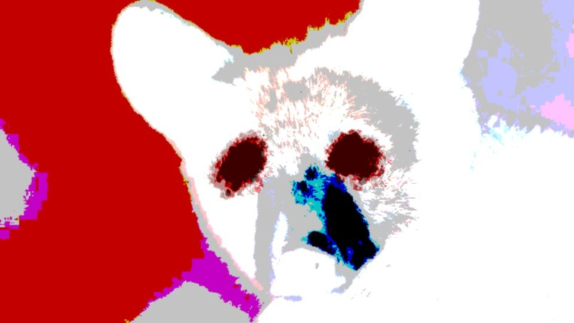
"A curse-killing, she called it."
A curse-killing...?
Kana-chan is cursed?
That's ridiculous! This is nothing but an old legend passed around in an insular settlement...!
Kana-chan is cursed?
That's ridiculous! This is nothing but an old legend passed around in an insular settlement...!
Yes. If a drug called falsificaso can cure it, then it's some kind of mental illness or something, made to look like a curse.
If it's something handed down since long ago, it's no wonder it gets treated like a curse or a supernatural phenomenon.
Calm down. This is not a curse but some kind of endemic disease.
If it's something handed down since long ago, it's no wonder it gets treated like a curse or a supernatural phenomenon.
Calm down. This is not a curse but some kind of endemic disease.
"Does everyone in the settlement know about the curse-killing?"
"Only Kana and Chigaya, who were little at the time, do not know. Everyone else knows."
"When Chigaya-san got like that― um, I mean, until she was given the drug, how did you deal with it?"
"Only Kana and Chigaya, who were little at the time, do not know. Everyone else knows."
"When Chigaya-san got like that― um, I mean, until she was given the drug, how did you deal with it?"
"That time, we shut her away in Kana's secret base.
My late mother-in-law, Erika Niimura, told us to hide Chigaya at once, somewhere out of sight."
I see. There does seem to be a way to cure Kana-chan.
What I had paid a fortune for was mainly information about Droga―
I see. There does seem to be a way to cure Kana-chan.
What I had paid a fortune for was mainly information about Droga―
That information was data from human experiments some cult had carried out in the past.
I had not managed to get all of that information, so there was likely some I didn't know about.
Most likely, this curse-killing and the drug called falsificaso were part of what I hadn't learned.
I had not managed to get all of that information, so there was likely some I didn't know about.
Most likely, this curse-killing and the drug called falsificaso were part of what I hadn't learned.
Well, none of that matters now.
What matters is that I have to find Kana-chan as soon as possible and give her the falsificaso.
On top of that, I also have to keep Sakura-san safe.
Because with Kana-chan, there's no knowing when she might creep up on Sakura-san like a ninja.
I came here meaning to take revenge, and now it's come to this...
What matters is that I have to find Kana-chan as soon as possible and give her the falsificaso.
On top of that, I also have to keep Sakura-san safe.
Because with Kana-chan, there's no knowing when she might creep up on Sakura-san like a ninja.
I came here meaning to take revenge, and now it's come to this...
"I understand the situation, more or less.
Sakura-san, please don't leave my side, whatever happens.
Kana-chan didn't try to harm me.
If I act as a shield, Sakura-san, you'll be safe."
"But...! This is the Arata settlement's problem. Momoko-san, we cannot drag you into it as well."
"But...! This is the Arata settlement's problem. Momoko-san, we cannot drag you into it as well."
"No... I was saved by Kana-chan.
That same Kana-chan surely doesn't want to kill Sakura-san, and I will protect you.
It's all right. I know Kana-chan won't attack me."
"Then... please come with me to the room from before.
There, I can put my intuition to work.
Momoko-san, I can sense any danger to you there as well."
"Yes, let's do that. But won't it be a strain on your body...?"
"It is not as if I will die from it, and this is no time to worry about that. Now, let's go."
"Yes, let's do that. But won't it be a strain on your body...?"
"It is not as if I will die from it, and this is no time to worry about that. Now, let's go."

8:30 p.m.―
A spring breeze blew in through the gaps in the broken window.
To be safe, I had boarded up the broken window with planks and had Sakura-san pull a blanket over herself so she couldn't be seen.
With the window boarded up, I couldn't hear the wind at all.
And then―
A spring breeze blew in through the gaps in the broken window.
To be safe, I had boarded up the broken window with planks and had Sakura-san pull a blanket over herself so she couldn't be seen.
With the window boarded up, I couldn't hear the wind at all.
And then―
I got the handgun ready.
I have no intention of shooting Kana-chan dead.
I mean it only as a deterrent, but if worst comes to worst, I'll shoot her legs so she can't move.
Sakura-san has given her consent as well.
I have no intention of shooting Kana-chan dead.
I mean it only as a deterrent, but if worst comes to worst, I'll shoot her legs so she can't move.
Sakura-san has given her consent as well.
This space with no sound and no light―
All I could hear were the breathing and heartbeats of Sakura-san and me.
And that high, ringing sound of 'silence.'
All I could hear were the breathing and heartbeats of Sakura-san and me.
And that high, ringing sound of 'silence.'
"Momoko-san."
Sakura-san poked her head out from under the blanket.
"Did you sense something!?"
"No, but I should tell you, just in case: Kana has a sharper nose and sharper ears than most people, and she sees well even in the dark. Please be careful."
"Understood."
Sakura-san poked her head out from under the blanket.
"Did you sense something!?"
"No, but I should tell you, just in case: Kana has a sharper nose and sharper ears than most people, and she sees well even in the dark. Please be careful."
"Understood."
The faint smell of gunpowder drifting from the muzzle, one you couldn't notice without bringing your nose right up to it.
It came from the single test shot I had fired when I got the gun.
To think she could sniff out a smell this faint.
And if on top of that she can see in the dark―
It came from the single test shot I had fired when I got the gun.
To think she could sniff out a smell this faint.
And if on top of that she can see in the dark―
I gripped the gun tight.
Just in case, I had a silencer fitted.
Doing this lowers the gun's power a little.
So that even if the worst happens and I have to shoot, the wound will be as light as possible...
Just in case, I had a silencer fitted.
Doing this lowers the gun's power a little.
So that even if the worst happens and I have to shoot, the wound will be as light as possible...
But it's strange.
By now, Sakura-san should have sensed the danger.
By now, Sakura-san should have sensed the danger.
"Sakura-san, how far ahead can your danger sense tell?"
"That is the problem. It varies far too much... As much as 10 days ahead, or as little as 10 seconds..."
10 seconds...!
No... even that buys enough time.
With 10 seconds, I can raise the gun and fire.
"That is the problem. It varies far too much... As much as 10 days ahead, or as little as 10 seconds..."
10 seconds...!
No... even that buys enough time.
With 10 seconds, I can raise the gun and fire.
10 minutes―
20 minutes―
Before long my ears adjusted, and I could hear the wind outside as well.
By now it was the time when Sakura-san would be feeling ill. Was she all right?
Before long my ears adjusted, and I could hear the wind outside as well.
By now it was the time when Sakura-san would be feeling ill. Was she all right?
Worrying about that too, I stayed on my guard and kept gripping the gun the whole time.
I was gripping the gun so hard that my hand hurt.
But I couldn't loosen my grip.
I had to be ready to identify the target and fire within 10 seconds...!
I was gripping the gun so hard that my hand hurt.
But I couldn't loosen my grip.
I had to be ready to identify the target and fire within 10 seconds...!
The sound of a phone vibrating―it seemed to be Sakura-san's phone.
"Hah... hah... H-Hello, Kotaro!? What about Kana!?"
It seemed to be a call from Kotaro-san.
If he was calling to say he had treated Kana-chan safely, I could relax.
"Hah... hah... H-Hello, Kotaro!? What about Kana!?"
It seemed to be a call from Kotaro-san.
If he was calling to say he had treated Kana-chan safely, I could relax.

"K-Kotaro!?"
Then, all of a sudden, Sakura-san stood up and raised her voice into the phone.
"Sakura-san...?"
"Kotaro! Get out of there, quickly! They're coming! A crowd of them is coming! Get away, quickly!"
Then, all of a sudden, Sakura-san stood up and raised her voice into the phone.
"Sakura-san...?"
"Kotaro! Get out of there, quickly! They're coming! A crowd of them is coming! Get away, quickly!"
Having shouted that much, Sakura-san sank to the floor, all her strength gone.
"Sakura-san! Please, hold on!"
What she had just said, and how frantic she was. Could it be her danger sense?
What she had just said, and how frantic she was. Could it be her danger sense?
Sakura-san picked up the phone,
"Hah, hah, K-Kotaro! Can you hear me!? Together with Kana―"
but even I could hear that the call had been cut off.
"Hah, hah, K-Kotaro! Can you hear me!? Together with Kana―"
but even I could hear that the call had been cut off.
"Kotaro...! He is in danger...!"
"What on earth happened!? What did you see!?"
"Hah, hah... By a lot of people... Kotaro... is going to be killed...!"
"A lot of people...!?"
"What on earth happened!? What did you see!?"
"Hah, hah... By a lot of people... Kotaro... is going to be killed...!"
"A lot of people...!?"
But even so, the only people here were the residents of the Arata settlement.
The residents are suddenly trying to kill Kotaro-san...!?
The residents are suddenly trying to kill Kotaro-san...!?
"Ugh... Momoko-san... It is just as I thought. Something is wrong outside.
It is already spring... and yet there are no animal sounds at all.
In mountains like these, you can hear nocturnal animals now and then..."
"What... does that mean?"
"The animals must be frightened. Frightened so badly they cannot make a sound."
"What... does that mean?"
"The animals must be frightened. Frightened so badly they cannot make a sound."
"Could it be because Kana-chan went outside in that state?"
"No, I cannot hear them anywhere around here. I think the residents have probably scattered all over, and the animals are frightened of them."
"No, I cannot hear them anywhere around here. I think the residents have probably scattered all over, and the animals are frightened of them."
This must be the danger sense of wild creatures, their animal instinct.
Which also means Kana-chan hasn't been found yet.
Once Kana-chan is found, they should all come back to the settlement.
Which also means Kana-chan hasn't been found yet.
Once Kana-chan is found, they should all come back to the settlement.
"............
Bloodlust..."
"Huh?"
"Animals react keenly to bloodlust. That is why they are frightened."
And that bloodlust was spread all over this area.
Which meant a number of people were giving off bloodlust.
"Huh?"
"Animals react keenly to bloodlust. That is why they are frightened."
And that bloodlust was spread all over this area.
Which meant a number of people were giving off bloodlust.
"So just as Sakura-san foresaw, the ones trying to kill Kotaro-san are..."
"But for everyone to kill Kotaro...! Even today, everything was peaceful, without a single quarrel...!"
"But for everyone to kill Kotaro...! Even today, everything was peaceful, without a single quarrel...!"
Why? Why would they target Kotaro-san?
If the old tradition says 'Kill the green-eyed child,' then it should be Kana-chan, the one who went mad, they're after instead.
If the old tradition says 'Kill the green-eyed child,' then it should be Kana-chan, the one who went mad, they're after instead.
"Of course...!"
I've got it! I finally get it!
For the first time, the people of this settlement have landed in a situation where murder by a green-eyed child― a curse-killing, can actually happen.
So if the residents are convinced the legend is true, and are following it by trying to kill Kana-chan―
I've got it! I finally get it!
For the first time, the people of this settlement have landed in a situation where murder by a green-eyed child― a curse-killing, can actually happen.
So if the residents are convinced the legend is true, and are following it by trying to kill Kana-chan―
If they try to kill Kana-chan, Kotaro-san will surely shield Kana-chan.
And then even Kotaro-san won't come out of it unharmed.
And then even Kotaro-san won't come out of it unharmed.
"The residents are afraid of Kana-chan.
That's why the one trying to protect Kana-chan, Kotaro-san, is their target!"
"...Momoko-san, your intuition seems to be far better than mine... I see, so that is why they are walking all over, giving off bloodlust. I cannot just sit here...!"
"...Momoko-san, your intuition seems to be far better than mine... I see, so that is why they are walking all over, giving off bloodlust. I cannot just sit here...!"
"You mustn't, Sakura-san! You can't even walk properly in that state!
I'll go look for Kana-chan!"
"That is even more reckless! Even if Kana does not attack you, Momoko-san, wandering the mountains on a night like this...!"
I ignored Sakura-san trying to stop me and stood up.
"That is even more reckless! Even if Kana does not attack you, Momoko-san, wandering the mountains on a night like this...!"
I ignored Sakura-san trying to stop me and stood up.
"It's all right. My intuition seems to work fairly well too."
Of course, this isn't a psychic power, just what people call a sixth sense.
And I only said it to put Sakura-san at ease, even a little.
Of course, this isn't a psychic power, just what people call a sixth sense.
And I only said it to put Sakura-san at ease, even a little.
"Please stay well hidden under the blanket."
I put my hand on the door.
I put my hand on the door.
............!!!
"Momoko-san... Hey... Momoko-san... Mama... where is she...?"
"Ngh...!"
"Momoko-san... Hey... Momoko-san... Mama... where is she...?"
"Ngh...!"
On reflex, I took three steps back and pointed the gun at Kana-chan.
Aim for the legs...! Aim for the legs...! I must never aim above the waist...!
The hand holding the gun shook badly.
The hand holding the gun shook badly.
"Kana-chan, get back! Sakura-san isn't here!"
In the darkness, I could make out Kana-chan, her face vacant.
Less a face full of bloodlust than a dazed one.
Something is a little off...
Less a face full of bloodlust than a dazed one.
Something is a little off...
"Kana!"
Suddenly the room's light came on, and I was dazzled.
The voice just now was Sakura-san.
Why tell Kana-chan where you are...!?
If Kana-chan finds her, Sakura-san will...!
Suddenly the room's light came on, and I was dazzled.
The voice just now was Sakura-san.
Why tell Kana-chan where you are...!?
If Kana-chan finds her, Sakura-san will...!
The backs of my eyes, aching from the sudden light―
My eyelids, growing heavy to shut out the light―
I fought against all of it, kept the gun raised, and kept my eyes open.
It took some time to make out what that blurry scene really was.
My eyelids, growing heavy to shut out the light―
I fought against all of it, kept the gun raised, and kept my eyes open.
It took some time to make out what that blurry scene really was.
The two of them were holding each other...
Without baring her fangs, Kana-chan had given herself over to the embrace of Sakura-san.
Sakura-san, too, held Kana-chan tightly, without any fear of her.
Without baring her fangs, Kana-chan had given herself over to the embrace of Sakura-san.
Sakura-san, too, held Kana-chan tightly, without any fear of her.
"Mama...
I'm sorry..."
"It is all right now! Everything is all right now...!"
Kana-chan apologizing, and Sakura-san accepting it.
My eyes finally adjusted to the light, and I looked at Kana-chan's face.
"It is all right now! Everything is all right now...!"
Kana-chan apologizing, and Sakura-san accepting it.
My eyes finally adjusted to the light, and I looked at Kana-chan's face.
Her eyes were both a clear blue.
Eyes that had been blue and green until a moment ago were now both blue.
Eyes that had been blue and green until a moment ago were now both blue.
Kotaro-san managed to find Kana-chan and give her the falsificaso.
I see. With that call earlier, Kotaro-san must have meant to tell us he had treated Kana-chan.
I see. With that call earlier, Kotaro-san must have meant to tell us he had treated Kana-chan.
Sakura-san, too, had not perceived Kana-chan as a danger, so she was able to hold her.
I lowered the gun I had been aiming.
I lowered the gun I had been aiming.
"Kotaro cured you, didn't he?"
"Yeah, he gave me a shot... But... Papa..."
"Kotaro... what happened to him?"
"Yeah, he gave me a shot... But... Papa..."
"Kotaro... what happened to him?"
"Killed."
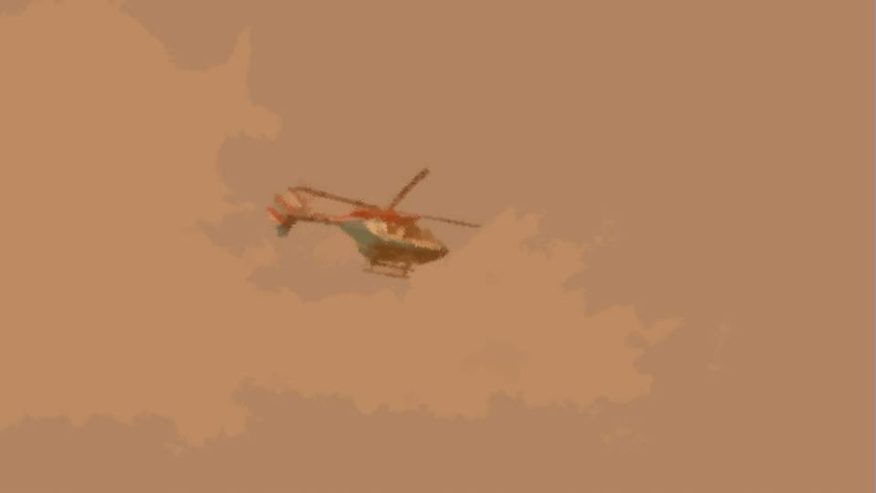
The deafening clatter of a helicopter―
I wake up to that sound.
I wake up to that sound.
Maybe that isn't quite the right way to put it.
Better to say I come back to my senses.
Better to say I come back to my senses.
I had been awake the whole time.
Ever since then, I had forgotten to eat, to sleep, and even to breathe.
A helicopter flying about in the morning sun.
What has it come for?
Ever since then, I had forgotten to eat, to sleep, and even to breathe.
A helicopter flying about in the morning sun.
What has it come for?
Of course. After a forest fire like this, there must be a huge uproar.
Then they'll find me sooner or later.
Then... what I did will be found out sooner or later.
Then they'll find me sooner or later.
Then... what I did will be found out sooner or later.
―Without a wink of sleep, I had lain spread-eagled in the graveyard clearing.
Beside me lies the gun, every round fired.
I... how many people did I kill?
Probably 30, at least.
Beside me lies the gun, every round fired.
I... how many people did I kill?
Probably 30, at least.
“Our next story. Late last night, a forest fire broke out in the Arata district, which borders the north of Iizawa Prefecture.”
What was that feeling back then?
I remember going out of my mind.
But right before that― after Sakura-san was cut down, right before I went out of my mind― a feeling I had never known raced through me.
I remember going out of my mind.
But right before that― after Sakura-san was cut down, right before I went out of my mind― a feeling I had never known raced through me.
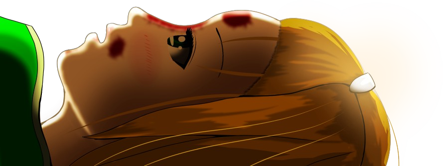
An urge to kill I couldn't hold back.
A desire to kill I could not suppress, whatever I did.
Fierce murderous intent toward Kana-chan and Haruka-san welled up in me.
A desire to kill I could not suppress, whatever I did.
Fierce murderous intent toward Kana-chan and Haruka-san welled up in me.
“Several burned bodies have been found, and there is said to be no hope that the residents survived.”
How did it come to that?
I pressed the muzzle to the heads of Haruka-san and Kana-chan and pulled the trigger without the slightest hesitation.
I pressed the muzzle to the heads of Haruka-san and Kana-chan and pulled the trigger without the slightest hesitation.
“Most of the bodies are badly damaged, and identifying them is expected to take time.”
Then the urge to kill ebbed smoothly away, and I felt intense pleasure and satisfaction.
I did it―I was able to kill.
I had eliminated what threatened me.
I killed Kana-chan and Haruka-san, and it felt so good.
I did it―I was able to kill.
I had eliminated what threatened me.
I killed Kana-chan and Haruka-san, and it felt so good.
Could that have been a curse-killing?
But I'm not green-eyed.
So it can't be a curse-killing...
I take my phone out of my pocket and look at my face on it, and―
But I'm not green-eyed.
So it can't be a curse-killing...
I take my phone out of my pocket and look at my face on it, and―
“However, many of the residents are believed to have been shot dead by someone―”
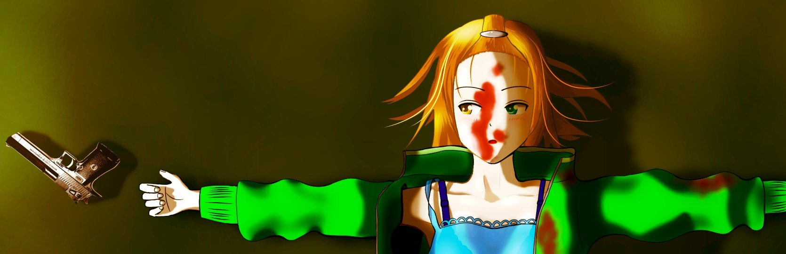
Huh?
My eyes... one is dark brown, but― the other one is― green.
My eyes... one is dark brown, but― the other one is― green.
Haha. So that's what it was...
There's no such thing as curses.
But curse-killing really does exist.
I proved it myself.
There's no such thing as curses.
But curse-killing really does exist.
I proved it myself.
When you're doused in Sakura-san's blood―
doused in the second generation's blood―
you're driven by an unbearable desire to kill the others doused in the same blood.
“It is believed to be the work of suspect Momoko Goto, 24, who was in the Arata district at the time.”
After I shot the two of them dead, every one of my cells let out a roar of joy, and I was drunk on the pleasure.
At the same time, a feeling opposed to it was born.
It was intense grief and anger.
I wanted some way to get rid of it.
Instinctive pleasure, and rational anger and grief―
Those two took control of my mind, and...
At the same time, a feeling opposed to it was born.
It was intense grief and anger.
I wanted some way to get rid of it.
Instinctive pleasure, and rational anger and grief―
Those two took control of my mind, and...
I shot dead every person I saw.
I killed them all.
Their legs were cut and they couldn't move, and I rained bullets on them without mercy.
My desire for revenge, which should have perished, changed its form― became the tumor itself, and came back to life.
The tumor that should have been cured recurred.
The tumor that should have gone into remission recurred.
I must have been out of my mind.
I killed them all.
Their legs were cut and they couldn't move, and I rained bullets on them without mercy.
My desire for revenge, which should have perished, changed its form― became the tumor itself, and came back to life.
The tumor that should have been cured recurred.
The tumor that should have gone into remission recurred.
I must have been out of my mind.
So it wasn't me who killed Kana-chan.
It's this Arata settlement.
I'm not to blame.
I'm not to blame.
I'm not to blame...!
I'm not to blame!!
Hey, someone... take my side!
I'm... not to blame, right...?
It's this Arata settlement.
I'm not to blame.
I'm not to blame.
I'm not to blame...!
I'm not to blame!!
Hey, someone... take my side!
I'm... not to blame, right...?
“Suspect Goto was holding a handgun and was found lying in a clearing outside the area the fire had spread to.”
I wanted revenge on a settlement like that.
Toward the Arata settlement that killed Kana-chan, a desire for revenge I couldn't hold back showed itself.
Even though I was the one who killed Kana-chan― I took revenge on the Arata settlement.
Toward the Arata settlement that killed Kana-chan, a desire for revenge I couldn't hold back showed itself.
Even though I was the one who killed Kana-chan― I took revenge on the Arata settlement.
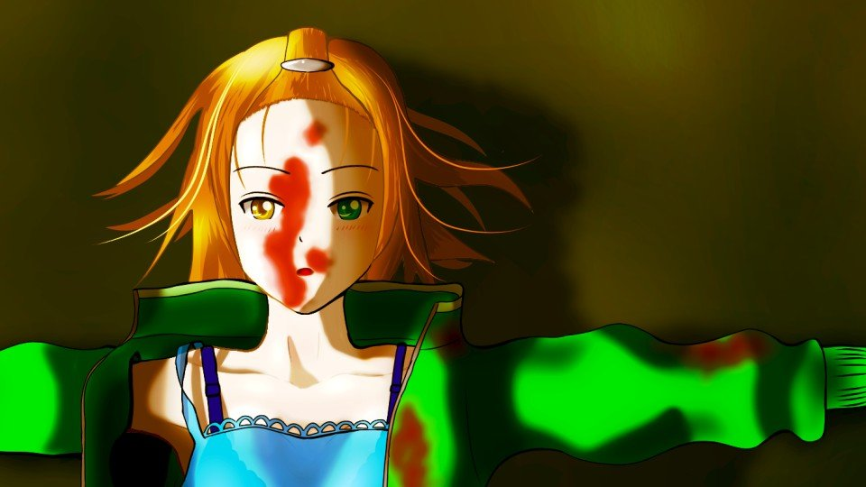
After killing everyone there, I headed for the blazing settlement.
There was still one left. The person I really wanted to kill.
There was still one left. The person I really wanted to kill.
Inside the settlement was a middle-aged woman.
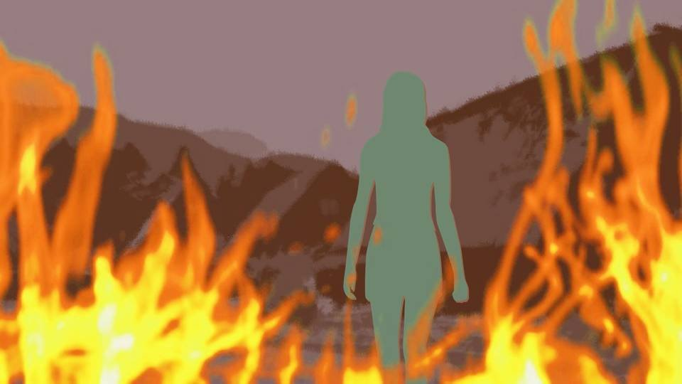
video: 火の粉.wmvI had seen this woman's face in a photo.
Mifuyu Niimura―
Found her.
Found her at last.
That was the one who killed Erina.
Mifuyu Niimura―
Found her.
Found her at last.
That was the one who killed Erina.
video: 火の粉.wmv
Mifuyu Niimura was staring up at the flames.
What could she be thinking?
Like Kotaro-san, does she think it's all over?
Like Kana-chan, does she think it'll be fine if they rebuild?
But she has no need to worry about that.
I have no hesitation left in me now.
What could she be thinking?
Like Kotaro-san, does she think it's all over?
Like Kana-chan, does she think it'll be fine if they rebuild?
But she has no need to worry about that.
I have no hesitation left in me now.
 video: 火の粉.wmv
video: 火の粉.wmvI shot Mifuyu Niimura dead before she noticed me.
With that, I had killed every person in the Arata settlement.
My revenge had been achieved.
Haha... I did it... I finally got my revenge...!
With that, I had killed every person in the Arata settlement.
My revenge had been achieved.
Haha... I did it... I finally got my revenge...!
video: 火の粉.wmvHey, Erina, are you watching?
I took revenge on the settlement that killed you!
I killed them all!
Hey, are you watching? Are you happy?
Hey... Hey, Erina...
Hey, come on...
Say something...
I took revenge on the settlement that killed you!
I killed them all!
Hey, are you watching? Are you happy?
Hey... Hey, Erina...
Hey, come on...
Say something...
video: 火の粉.wmvEven though I struck down Erina's enemy.
Somewhere in my heart, I had been hoping to hear a hallucination of Erina praising me.
But there was no way I would hear such a thing.
Somewhere in my heart, I had been hoping to hear a hallucination of Erina praising me.
But there was no way I would hear such a thing.
 video: 火の粉.wmv
video: 火の粉.wmvAlone, still gripping the gun, I left the settlement.
I walked the mountain path with my head down, vacantly looking back over what I had done.
The sound of trees burning, and the crunch of gravel under my feet.
I walked the mountain path with my head down, vacantly looking back over what I had done.
The sound of trees burning, and the crunch of gravel under my feet.
video: 火の粉.wmvListening to nothing but those sounds, my mind had stopped.
I no longer had any reason to live, and I could think neither about what lay ahead nor about what I had done just now.
Then something came into my blurred vision.
I no longer had any reason to live, and I could think neither about what lay ahead nor about what I had done just now.
Then something came into my blurred vision.
video: 火の粉.wmvA single bear cub ran past in front of me, as if fleeing the fire.
What happened to its parent?
Did they get separated in the fire?
Or has it already burned to death?
What happened to its parent?
Did they get separated in the fire?
Or has it already burned to death?
video: 火の粉.wmvDid it get separated from its siblings too, or was it the only one from the start?
A "helpless" creature that can do nothing for itself and can only wait for death.
Me and that cub―what is the difference?
With no desire for revenge left and no place that would take me in, I am the 'powerless' being I was supposed to have graduated from.
A "helpless" creature that can do nothing for itself and can only wait for death.
Me and that cub―what is the difference?
With no desire for revenge left and no place that would take me in, I am the 'powerless' being I was supposed to have graduated from.
video: 火の粉.wmvOnly my body became an adult. My heart is still as it was in my oldest memory.
Drowning in the longing for a little sister, I am still being dragged down into that mire.
Drowning in the longing for a little sister, I am still being dragged down into that mire.
video: 火の粉.wmvHey, little cub, don't you have any brothers or sisters?
Could it be they died?
My little sister died too.
Could it be they died?
My little sister died too.
video: 火の粉.wmvAs if following the cub, I took the same path.
Just as if I were following the cub's fate.
I see... my life won't last long either.
Because all that lies ahead is― the raw reality of the gallows.
Just as if I were following the cub's fate.
I see... my life won't last long either.
Because all that lies ahead is― the raw reality of the gallows.

―And where I ended up was this clearing, thick with lush grass.
Could this be the graveyard clearing Haruka-san talked about?
I gave myself over to this graveyard clearing of soft grass and looked up at the sky.
And I gazed straight up at the sky, vacantly.
Could this be the graveyard clearing Haruka-san talked about?
I gave myself over to this graveyard clearing of soft grass and looked up at the sky.
And I gazed straight up at the sky, vacantly.
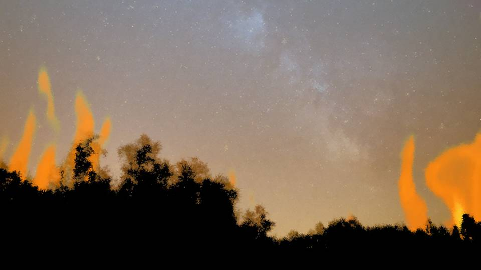
 video: 桜山頂.wmv
video: 桜山頂.wmvHalf the sky was orange, half pitch-black.
The sky was burning.
Bright embers from the sky came fluttering down.
What are these embers?
The sky was burning.
Bright embers from the sky came fluttering down.
What are these embers?
video: 桜山頂.wmvThey were cherry blossom petals.
Cherry blossoms from the Niimura main house, carried up on the updraft.
Cherry blossoms fell from the sky, coloring this grotesque night sky with a bewitching beauty.
A hot wind fanned by the forest fire blew in, pleasantly warming the freezing air.
Cherry blossoms from the Niimura main house, carried up on the updraft.
Cherry blossoms fell from the sky, coloring this grotesque night sky with a bewitching beauty.
A hot wind fanned by the forest fire blew in, pleasantly warming the freezing air.
video: 桜山頂.wmvHey―what is the Arata cherry?
What was it after, to end up with a nature like this?
What was it after, to end up with a nature like this?
video: 桜山頂.wmvIf Erina were alive, would she have tried to figure it out?
If so, would she have had to start from the Megasawa City case?
I see. So even the Megasawa City case never reached the truth.
It was not a truth someone like me could reach, however much money and time I spent.
If so, would she have had to start from the Megasawa City case?
I see. So even the Megasawa City case never reached the truth.
It was not a truth someone like me could reach, however much money and time I spent.
―And while I watched those embers from the sky, at some point the sun rose and a helicopter was flying overhead.
In the end, what was the Megasawa City case?
Was it really set up just so Mifuyu Niimura could commit murder?
Was it really set up just to test a drug?
In the end, what was the Megasawa City case?
Was it really set up just so Mifuyu Niimura could commit murder?
Was it really set up just to test a drug?
Then what are all these by-products?
The Megasawa City case must be nothing more than a cover.
A cover, to hide something more important.
The Megasawa City case must be nothing more than a cover.
A cover, to hide something more important.
...Haah. Forget it, none of that matters anyway.
More importantly, what should I do about what I did?
Tell the police or a lawyer I killed because I was doused in the second generation's blood?
Who would believe that?
Besides, there's a mountain of evidence of today's plan, so a guilty verdict and a death sentence are both certain.
More importantly, what should I do about what I did?
Tell the police or a lawyer I killed because I was doused in the second generation's blood?
Who would believe that?
Besides, there's a mountain of evidence of today's plan, so a guilty verdict and a death sentence are both certain.
Enough. Everything is a dead end now.
A long time ago, I think― in Okayama Prefecture, was it?
There was a case called the Tsuyama Thirty Murders.
What I did was the same kind of thing.
The killer in that case―
A long time ago, I think― in Okayama Prefecture, was it?
There was a case called the Tsuyama Thirty Murders.
What I did was the same kind of thing.
The killer in that case―
Committed suicide with a gun, was it?
It looks like this is as far as I go, too.
The tumor called the desire for revenge seems bent on destroying not only my heart but my body too.
It looks like this is as far as I go, too.
The tumor called the desire for revenge seems bent on destroying not only my heart but my body too.
Are there any bullets left in this?
Either way is fine. If there are, I just die. If there aren't, I just get the death penalty.
In the near future, either way, what is waiting for me is― death.
Either way is fine. If there are, I just die. If there aren't, I just get the death penalty.
In the near future, either way, what is waiting for me is― death.
“Suspect Goto was rushed to the hospital, but―”
Erina, I'll be there soon.
I'm coming to see Kana-chan too.
I'm coming to see Kana-chan too.
“She is believed to have shot herself in the head with the handgun, and was pronounced dead at the hospital.”
I hear the gunshot right by my ear.
So there was a bullet left.
I'm going to die like this, aren't I?
But even though I heard the shot, I'm not losing consciousness.
Is this that slow-motion thing that happens right before you die?
So there was a bullet left.
I'm going to die like this, aren't I?
But even though I heard the shot, I'm not losing consciousness.
Is this that slow-motion thing that happens right before you die?
Ah... this is bad...
So people will see that notebook after all.
Not that there's any point being embarrassed now...
Well, it's the notebook of an unprecedented criminal. I bet they'll put it on display in a museum.
Haha... thinking about something so pointless at a time like this.
Not that there's any point being embarrassed now...
Well, it's the notebook of an unprecedented criminal. I bet they'll put it on display in a museum.
Haha... thinking about something so pointless at a time like this.
More to the point, it seems the bullet will still take a while to go through my head.
Then in the meantime, at the very end, I'll at least comfort myself.
No, more than that... I have to apologize to the people I should apologize to.
Then in the meantime, at the very end, I'll at least comfort myself.
No, more than that... I have to apologize to the people I should apologize to.
Kana-chan, I'm sorry.
Kana-chan, I know how hard it was for you to endure that murderous intent.
Kana-chan, you loved Sakura-san that much, didn't you?
I was still far more of a child than you, Kana-chan.
Just because it hurt, to shoot you, Kana-chan, without a moment's hesitation...
Kana-chan, I know how hard it was for you to endure that murderous intent.
Kana-chan, you loved Sakura-san that much, didn't you?
I was still far more of a child than you, Kana-chan.
Just because it hurt, to shoot you, Kana-chan, without a moment's hesitation...
And... thank you.
It felt like I had a little sister, and I was happy.
I wanted to talk with you more, Kana-chan.
It felt like I had a little sister, and I was happy.
I wanted to talk with you more, Kana-chan.
Sakura-san, I'm sorry.
I said I would protect you, Sakura-san, but I couldn't protect you at all.
Protecting people is such a hard thing, isn't it?
Protecting is much, much harder than taking revenge.
I said I would protect you, Sakura-san, but I couldn't protect you at all.
Protecting people is such a hard thing, isn't it?
Protecting is much, much harder than taking revenge.
Only now, at this moment, have I finally understood that you can do it only because there is great love.
Sakura-san... I'm sorry.
Sakura-san... I'm sorry.

Haruka-san, I'm sorry.
You came to help me when I was in a tight spot... and I shot you, Haruka-san...
You knew, Haruka-san, that Mifuyu Niimura was the culprit, didn't you?
Your best friend was killed, and still you went on accepting her as your mother.
You came to help me when I was in a tight spot... and I shot you, Haruka-san...
You knew, Haruka-san, that Mifuyu Niimura was the culprit, didn't you?
Your best friend was killed, and still you went on accepting her as your mother.
I understand very well why Erina looked up to you.
Were you happy, being with Erina?
If Erina, born because I wished for her, brought even a little happiness to you, Haruka-san― nothing could make me happier.
But... I'm sorry...
Were you happy, being with Erina?
If Erina, born because I wished for her, brought even a little happiness to you, Haruka-san― nothing could make me happier.
But... I'm sorry...
Haha... what is this...
How many people do I have to apologize to?
The bullet is about to go through my brain, and I can't finish apologizing...
If you go by that, to Dad, to Mom, even to the people of the settlement who were only frightened of the curse-killings...
How many people do I have to apologize to?
The bullet is about to go through my brain, and I can't finish apologizing...
If you go by that, to Dad, to Mom, even to the people of the settlement who were only frightened of the curse-killings...
What's all this, shinigami, curse-killings...
I'm the one who's most like a shinigami...
But the one I most have to apologize to is...
I'm the one who's most like a shinigami...
But the one I most have to apologize to is...

Erina, I'm sorry.
After all, Erina, you'd never want something like this, would you?
Because... I was lonely without you, Erina.
It's not fair. Going off somewhere far away without making up with me.
After all, Erina, you'd never want something like this, would you?
Because... I was lonely without you, Erina.
It's not fair. Going off somewhere far away without making up with me.
Erina, you were born thanks to me, right?
I wanted a little sister, and that's why you were born, Erina, right?
Hey, do you understand? If it weren't for me, you, Erina, would never have been born, right?
And still, why did you just go and leave my side?
I wanted a little sister, and that's why you were born, Erina, right?
Hey, do you understand? If it weren't for me, you, Erina, would never have been born, right?
And still, why did you just go and leave my side?
I see... maybe Erina really did hate me after all.
No wonder. I'm the one who pushed her away.
Then maybe I should apologize for pushing her away, more than for what I did today.
Why did I never even think of that until now?
Why did it never occur to me to apologize for pushing her away?
No wonder. I'm the one who pushed her away.
Then maybe I should apologize for pushing her away, more than for what I did today.
Why did I never even think of that until now?
Why did it never occur to me to apologize for pushing her away?
I was always like this.
I think I have to apologize, but in the end all I think up are excuses to protect myself.
Telling myself I'm not to blame, I keep running away with nothing but excuses, never knowing when to give up.
This is the creature called me, full of defects, no, made of nothing but defects.
But the reason I became like this is...
See, there I go again, trying to blame someone else.
I think I have to apologize, but in the end all I think up are excuses to protect myself.
Telling myself I'm not to blame, I keep running away with nothing but excuses, never knowing when to give up.
This is the creature called me, full of defects, no, made of nothing but defects.
But the reason I became like this is...
See, there I go again, trying to blame someone else.
What I understand only now is how harmful a presence I was.
I wished for Erina to exist for my own selfish reasons, rejected her, and then came escape from reality, and revenge―
My existence is nothing but harm.
Someone like me is better off gone.
So shooting myself through the head is the greatest achievement of my life.
I wished for Erina to exist for my own selfish reasons, rejected her, and then came escape from reality, and revenge―
My existence is nothing but harm.
Someone like me is better off gone.
So shooting myself through the head is the greatest achievement of my life.
But now I have one single wish.
Soon I'll see her.
I'll see Erina.
I'll see my cute little sister.
Surely I'll see Erina in the next world.
That alone is my comfort.
Soon I'll see her.
I'll see Erina.
I'll see my cute little sister.
Surely I'll see Erina in the next world.
That alone is my comfort.
But if there is a next world―
I'm probably going to hell.
Even after death, will I end up torn apart from my little sister and the others?
Aah... I should have given up on revenge after all.
I wanted to atone for my sins in this world and leave myself at least some chance of seeing Erina and the others.
Even after death, will I end up torn apart from my little sister and the others?
Aah... I should have given up on revenge after all.
I wanted to atone for my sins in this world and leave myself at least some chance of seeing Erina and the others.
But it's too late now.
The feeling of the bullet crushing my skull.
If I could go back one second, I could have atoned in this world, and maybe seen Erina and the others.
Even if I had atoned in this world, hell's judgment wouldn't be that lenient, would it?
But... at least let me dream.
I don't know how to scream, so at least a dream―
The feeling of the bullet crushing my skull.
If I could go back one second, I could have atoned in this world, and maybe seen Erina and the others.
Even if I had atoned in this world, hell's judgment wouldn't be that lenient, would it?
But... at least let me dream.
I don't know how to scream, so at least a dream―
The bullet begins to enter my brain.
Little by little, my thoughts grow dull.
The nerve fibers of my brain are destroyed one after another, getting in the way of my comfort.
I did it to myself, but I wanted to die held by comfort and dreams until the end.
Little by little, my thoughts grow dull.
The nerve fibers of my brain are destroyed one after another, getting in the way of my comfort.
I did it to myself, but I wanted to die held by comfort and dreams until the end.
But even that is no longer allowed.
My consciousness gradually falls into darkness, and in its place the hellfire comes into view.
My consciousness gradually falls into darkness, and in its place the hellfire comes into view.

Mixed in with the roar of the hellfire, I hear the hideous screams of the damned.
I can't even tell whether the screams belong to the damned or to me.
In this agony that will go on for all eternity, I writhe and scream, but for some reason there is no despair.
I can't even tell whether the screams belong to the damned or to me.
In this agony that will go on for all eternity, I writhe and scream, but for some reason there is no despair.
This hellfire burns not just my skin but my flesh and bones too.
If it's going to, I want it to burn away even my heart.
If it will burn my heart too, I'll gladly be burned.
While the hellfire burns me, I'll go on watching the rest of my hazy dream.
A heart this filthy, this twisted, this covered in tumors is better off purified away.
If it's going to, I want it to burn away even my heart.
If it will burn my heart too, I'll gladly be burned.
While the hellfire burns me, I'll go on watching the rest of my hazy dream.
A heart this filthy, this twisted, this covered in tumors is better off purified away.
My oldest memory and my last are all about my little sister.
Was I happy to have been born?
At first I was happy.
The days I spent with my cute little sister were so happy.
But something in my heart is twisted.
Was I happy to have been born?
At first I was happy.
The days I spent with my cute little sister were so happy.
But something in my heart is twisted.
I smashed the happiness I had gotten just as I wished, and what waited at the end was―
me, ravaged by memory and revenge and the tumor.
This hell will surely burn them all away.
Purify the tumor, purify the desire for revenge, purify the memories.
What lies beyond that?
This hell will surely burn them all away.
Purify the tumor, purify the desire for revenge, purify the memories.
What lies beyond that?
If there is something beyond...
Once more...
Just once more, please let me see Erina.
I will never push Erina away again.
Just once more, please let me see my little sister.
And... please let me keep just the heart that loves Erina.
I will never push Erina away again.
Just once more, please let me see my little sister.
And... please let me keep just the heart that loves Erina.
Erina...
I love you so much.

Kana-chan had headed into the forest that led to that secret base.
Kotaro-san had been searching around here by himself, then...
Kotaro-san had been searching around here by himself, then...
That's it! Kotaro-san thought Kana-chan was at the secret base, so he came straight this way.
That's why he was able to find Kana-chan on his own.
That's why he was able to find Kana-chan on his own.
"Sakura-san, are you feeling okay?"

"Haah... haah... Yes, I'm fine..."
How is that fine? She's even more unsteady than she was at Toyotake Station...
How is that fine? She's even more unsteady than she was at Toyotake Station...
"K-Kotaro...!
Kotaro...! Where are you!?"
Sakura-san cried out in a feeble voice.
Could he even hear her, out in these vast mountains?
Sakura-san cried out in a feeble voice.
Could he even hear her, out in these vast mountains?
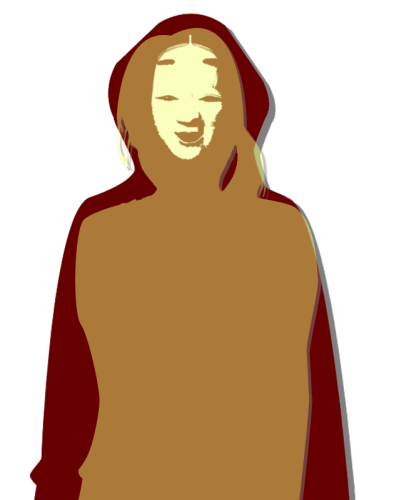
"............
Mama, I smell blood.
It's coming from over there!"
Kana-chan ran on, deeper into the forest.
"Sakura-san, come on!"
"Sakura-san, come on!"
Sakura-san's arm slung over my shoulder, I went after Kana-chan.
And right after that―
And right after that―
"He's here!"
Right nearby, Kana-chan's voice.
Kana-chan stood in front of a lone portly man.
He was sitting slumped against a tree.
Right nearby, Kana-chan's voice.
Kana-chan stood in front of a lone portly man.
He was sitting slumped against a tree.

"Wh-who's there...!?"
"Papa, thank goodness! You're alive!"
"That voice... is that Kana...? Why did you come back...? I told you to run..."
"That voice... is that Kana...? Why did you come back...? I told you to run..."
"K-Kotaro...!
Hurry...
let's run...!"
Sakura-san finally collapsed.
"S-Sakura...! You...!"
"Kotaro, leave you behind... and run? As if I could...!"
"You idiot... I'm... done for now, so, together with Kana..."
"Kotaro, leave you behind... and run? As if I could...!"
"You idiot... I'm... done for now, so, together with Kana..."
Kotaro-san was sitting in a large pool of blood.
He was bleeding far too badly.
He was bleeding far too badly.

Then Kotaro-san looked up at the sky.
"In the settlement... what happened...?"
"In the settlement... what happened...?"
An orange that seemed to scorch the starry sky.
A huge blaze, visible through the trees.
The fire at the Niimura house seemed to be spreading all around.
At that rate, it would soon swallow this place too.
A huge blaze, visible through the trees.
The fire at the Niimura house seemed to be spreading all around.
At that rate, it would soon swallow this place too.
"The Arata settlement... is finished now...
It went on for 800 years, and today..."
"Papa, don't say that... It's only the house we're losing... We can just build the house again. As long as we're here, the Arata settlement will never be gone! So... let's run away together..."
"Papa, don't say that... It's only the house we're losing... We can just build the house again. As long as we're here, the Arata settlement will never be gone! So... let's run away together..."
"You two... take these..."

Kotaro-san took something long and thin out of his pocket.
Syringes...?
One of cherry-pink liquid, one of clear liquid.
Syringes...?
One of cherry-pink liquid, one of clear liquid.
"There's only enough left for one person, but...
if you inject the pink one into a muscle...
for just 10 minutes... you can push your strength to the human limit...
Use it to get away...
But after that...
you have to inject the clear one as well...
That way...
you can escape the curse-killing."
"No, Papa! I can't leave Papa behind...!"
"Kotaro, please...! Don't die...!"
"Sorry... I can't see very well anymore... This is... it..."
"No..."
"Sorry... I can't see very well anymore... This is... it..."
"No..."
The short, rapid breathing of Kotaro-san was growing shallower.
All Sakura-san and Kana-chan could do was hold his hand and watch.
I, too, was about to witness the moment a family was torn apart.
If I hadn't come here, would none of this have happened?
All Sakura-san and Kana-chan could do was hold his hand and watch.
I, too, was about to witness the moment a family was torn apart.
If I hadn't come here, would none of this have happened?
Either way, today might have been the day Kana-chan was fated to be driven by that murderous intent.
But if she could have been given the falsificaso right away, the villagers would never have noticed and would have spent a peaceful night.
If I hadn't come, it might have been some other, good ending.
But if she could have been given the falsificaso right away, the villagers would never have noticed and would have spent a peaceful night.
If I hadn't come, it might have been some other, good ending.
"Kana...
Mama and...
Chigaya and...
get along...
all right..."
"Papa..."
"Kotaro..."
""
"Papa..."
"Kotaro..."
""
Kotaro-san's whole body went limp all at once.
His eyes stayed half open and would not close.
His eyes stayed half open and would not close.
"Papa...! Why did you die...!?
Dying because of me, that's just too cruel...!"
Kana-chan dropped to her knees on the ground, her shoulders shaking.
Like that, Kana-chan was slowly drawn into Sakura-san's arms.
Kana-chan dropped to her knees on the ground, her shoulders shaking.
Like that, Kana-chan was slowly drawn into Sakura-san's arms.
Curse-killing... what curse-killing...
Kana-chan hasn't killed anyone! The only ones killing are the people afraid of the curse-killing!
What was cursed wasn't Kana-chan... it was this settlement itself...
Kana-chan hasn't killed anyone! The only ones killing are the people afraid of the curse-killing!
What was cursed wasn't Kana-chan... it was this settlement itself...
Because they want to be saved themselves, because they want to survive themselves, they just kill whoever is in the way.
Weren't they all friends who'd lived together all this time...?
Weren't they all friends who'd lived together all this time...?
That sudden selfishness, isn't it the same as mine...?
Are all their hearts as twisted as mine?
Just me being that way should be more than enough...!
Are all their hearts as twisted as mine?
Just me being that way should be more than enough...!
Enough.
I've had all I can take of families being torn apart.
Me and Erina, that mother bear and her cub, and Kana-chan's family too.
I don't want to see it anymore.
I want to be gone from here now.
I'll leave this place now.
I've had all I can take of families being torn apart.
Me and Erina, that mother bear and her cub, and Kana-chan's family too.
I don't want to see it anymore.
I want to be gone from here now.
I'll leave this place now.
"Sakura-san, Kana-chan...
I know how you feel, but we have to get out of here, fast..."
"You're right..."
"Yes, I know..."
Even so, they could hardly bring themselves to leave Kotaro-san.
Just how close a family had they been?
A happy family falling apart... I don't want to see that anymore...!
"You're right..."
"Yes, I know..."
Even so, they could hardly bring themselves to leave Kotaro-san.
Just how close a family had they been?
A happy family falling apart... I don't want to see that anymore...!
"Found them!"
Suddenly a voice went up behind us, and at the same moment, footsteps all around.
Suddenly a voice went up behind us, and at the same moment, footsteps all around.

"They're here...!"
Before we knew it, we were surrounded by shinigami.
They seemed to have noticed we'd fled and come after us.
Before we knew it, we were surrounded by shinigami.
They seemed to have noticed we'd fled and come after us.
"Now, Grand Witch-sama, please hand Kana over.
Grand Witch-sama and our guest will come to no harm."
"Don't talk nonsense! How dare you do this to Kotaro...!"
Sakura-san staggered to her feet.
Sakura-san staggered to her feet.
"I won't forgive you... How dare you do this to Papa...!"
Then,
Then,
Kana-chan pressed the syringes into my hand.
"Momoko-san, please, make sure you get away safely.
If you go straight down this path, you'll reach Toyotake Station."
"Wait a minute, what are you planning to do, Kana-chan!?"
"My father was killed. I have to settle this."
"Wait a minute, what are you planning to do, Kana-chan!?"
"My father was killed. I have to settle this."
The syringes handed to me―
Something like this...
Something like this...
I threw the syringes away and aimed my gun at them.
Run away alone? Leave Kana-chan and Sakura-san to die?
I had this powerful weapon. There was no option but to join the fight.
Run away alone? Leave Kana-chan and Sakura-san to die?
I had this powerful weapon. There was no option but to join the fight.
Besides, I know.
Droga's effects last only about 10 minutes, and on top of that, it puts a heavy strain on the body.
By now they must be battered all over.
Droga's effects last only about 10 minutes, and on top of that, it puts a heavy strain on the body.
By now they must be battered all over.
"Grand Witch-sama, surely you understand you cannot win?"
"I will never back down...!"
"Neither will I...! I can't leave Mama behind!"
"Then it can't be helped. Grand Witch-sama, our guest, prepare yourselves."
"I will never back down...!"
"Neither will I...! I can't leave Mama behind!"
"Then it can't be helped. Grand Witch-sama, our guest, prepare yourselves."
"A bluff like that won't work on me!"
I took one step forward and raised my voice.
"The Droga should have worn off by now, and your bodies are falling apart. You're the ones who need to prepare yourselves!"
I took one step forward and raised my voice.
"The Droga should have worn off by now, and your bodies are falling apart. You're the ones who need to prepare yourselves!"
"Our guest, how do you know that?
Well, no matter.
In case something like this happened, we split into one group that used Droga first and one that uses it now.
Our guest and the others will be dealt with by those who take the Droga now."
"Wha...!?"
"Wha...!?"
If that's true, then is this the end...!?
Kana-chan won't cause any curse-killing now!
Somebody, help us!
Kana-chan won't cause any curse-killing now!
Somebody, help us!

Suddenly there was a sound like a razor wind slicing the air, and the next instant every one of the villagers collapsed where they stood.
"Gah! What is this...!?"
"Who's there...!?"
"Damn...!"
It seemed the tendons in their legs had been cut, and they couldn't stand.
To bring down this many people in an instant, it had to be someone with considerable physical ability.
"Gah! What is this...!?"
"Who's there...!?"
"Damn...!"
It seemed the tendons in their legs had been cut, and they couldn't stand.
To bring down this many people in an instant, it had to be someone with considerable physical ability.
Sakura-san and Kana-chan had both stayed right beside Kotaro-san.
The two of them seemed just as surprised by the sight.
Then who on earth...?
The two of them seemed just as surprised by the sight.
Then who on earth...?
"Phew, made it in time...!"
The voice of a long-haired woman who talked like a man.
This person is...
The voice of a long-haired woman who talked like a man.
This person is...
"Hey, Kana! I'm here to help!"
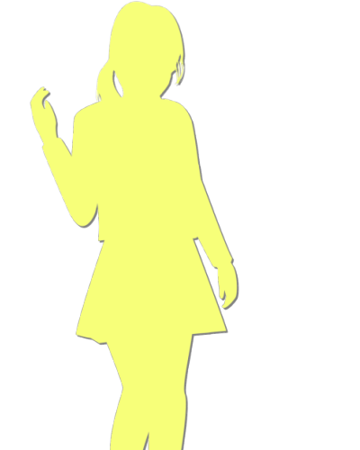
"Haruka-chan...?"
Which means this person is Haruka Niimura?
The one said to have been training in the mountains, the daughter of Mifuyu Niimura...
Which means this person is Haruka Niimura?
The one said to have been training in the mountains, the daughter of Mifuyu Niimura...

"All of a sudden the animals went quiet, and I figured it was a forest fire, so I came to take a look, and things have gotten real bad here..."
"Nngh...! Haruka...! Why go after us...! It's Kana you should be taking out!"
"Kotaro-san's dead, and you're ganging up on Sakura-san and the others when they can barely stand. As if I'd side with a sickening bunch like you!"
"Nngh...! Haruka...! Why go after us...! It's Kana you should be taking out!"
"Kotaro-san's dead, and you're ganging up on Sakura-san and the others when they can barely stand. As if I'd side with a sickening bunch like you!"
"But...! Kana will cause a curse-killing!"
"Curse-killing, what curse-killing! Which side actually killed people!? Kana killed who, exactly!? Go on, say it!"
"From now on... from now on, she's going to kill!"
"Curse-killing, what curse-killing! Which side actually killed people!? Kana killed who, exactly!? Go on, say it!"
"From now on... from now on, she's going to kill!"
"Heh! I doubt it!
Like I'm gonna listen to a bunch of scared cowards who won't even show their faces."
Haruka-san brushed aside the villagers' claims one after another.
Haruka-san brushed aside the villagers' claims one after another.
"Haruka-chan, where's Auntie?"
"Mom's gone to check on the settlement. But the way it looks, there's no putting that fire out... So, who's this?"
"Mom's gone to check on the settlement. But the way it looks, there's no putting that fire out... So, who's this?"
"This is...
Momoko Goto-san. She saved us."
"Goto...!? Goto, as in...
"Goto...!? Goto, as in...

Are you, by any chance, Goto's older sister?"
"Um... Yes. I hear my sister owed you a great deal while she was alive..."
"Um... Yes. I hear my sister owed you a great deal while she was alive..."
"Ah, I knew it...
Um...
uh..."
Then Haruka-san lowered her eyes.
Then Haruka-san lowered her eyes.
"Um...
I know it's strange for me to say this, but...
My mother, I'm truly sorry about her..."
"Huh?"
"Um... my mother, truly..."
Is she talking about the murder of Erina?
She knows that, and she's still with her, as mother and daughter...
"Huh?"
"Um... my mother, truly..."
Is she talking about the murder of Erina?
She knows that, and she's still with her, as mother and daughter...
"How you feel about my mother, I can sort of tell from the gun you're holding, Momoko-san.
But still, my mom is her and nobody else, so...
So... I'm sorry.
I know it's not something an apology can make right, but..."
She had been close to Erina, and best friends with Natsumi Kogori too, from what I knew.
Even so, she had gone on accepting the woman who killed her best friend, Mifuyu Niimura, as her mother.
Simple-minded, if you want to call it that, but think of it as a warm heart and it's a wonderful quality.
Erina really had come across a very good person.
Even so, she had gone on accepting the woman who killed her best friend, Mifuyu Niimura, as her mother.
Simple-minded, if you want to call it that, but think of it as a warm heart and it's a wonderful quality.
Erina really had come across a very good person.
No, this was no time to wallow in sentiment.
Next, there was the fire closing in.
Next, there was the fire closing in.
"Haruka-san, let's talk about that later. The fire is coming this way too."
"Oh, y-yes, you're right..."
"Oh, y-yes, you're right..."
"And... thank you for saving us."
"Don't thank me... Momoko-san, no matter how much I apologize, it can never be forgiven... Oh, right, that's for later. Sakura-san, can you stand?"
Sakura-san's legs were unsteady.
It looked like she would need more time to recover.
"Don't thank me... Momoko-san, no matter how much I apologize, it can never be forgiven... Oh, right, that's for later. Sakura-san, can you stand?"
Sakura-san's legs were unsteady.
It looked like she would need more time to recover.
"What do we do about everyone?"
Kana-chan looked around at the villagers huddled on the ground with their legs cut.
Kana-chan looked around at the villagers huddled on the ground with their legs cut.
"We can't really leave them behind, can we...
Hey, can anybody move!?
This place is gonna burn soon too!"
Haruka-san's command had some of them trying to stand.
Even so, it didn't look like they could walk properly.
Haruka-san's command had some of them trying to stand.
Even so, it didn't look like they could walk properly.
"We can't haul this many people all the way down to the foot of the mountain.
Okay, the graveyard clearing has no trees, and it's close to here.
Kana, help me out!"
"G-got it!"
"G-got it!"
Haruka-san and Kana-chan began lending their shoulders to the fallen villagers.
After all this, they wouldn't still attack us, would they?
After all this, they wouldn't still attack us, would they?
"Momoko-san, please head for the graveyard with Sakura-san."
"Y-yes!"
I lent Sakura-san my shoulder and stood up.
"Y-yes!"
I lent Sakura-san my shoulder and stood up.
"Sakura-san, please hold on just a little longer.
Which way is the graveyard clearing?"
"Haah... haah... Down this path... just a little way... But Kotaro..."
"Haah... haah... Down this path... just a little way... But Kotaro..."
"I'm sorry, Momoko-san. Please give me just a little more time."
With that, Sakura-san leaned against Kotaro-san, almost falling onto him.
With that, Sakura-san leaned against Kotaro-san, almost falling onto him.
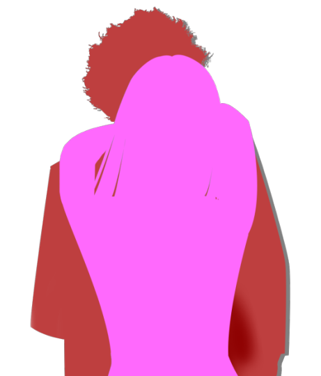
"Kotaro...
Thank you.
I love you."

"Cursed parent and child...! Die for Arata...!"
Sakura-san had a shinigami behind her, holding a nata.
Kotaro-san had just been given a final embrace by Sakura-san, and now a great gush of blood sprayed from her back.
That blood splashed onto my face.
Sakura-san had a shinigami behind her, holding a nata.
Kotaro-san had just been given a final embrace by Sakura-san, and now a great gush of blood sprayed from her back.
That blood splashed onto my face.
Sakura-san stayed as she was, slumped over Kotaro-san's body, and did not move.
Sakura-san's attacker, the shinigami who had cut her, also collapsed on the spot with a thud.
Sakura-san's attacker, the shinigami who had cut her, also collapsed on the spot with a thud.
video: 桜.wmv"Hey, Sakura-san!"
"Mama!"
Haruka-san and Kana-chan rushed to Sakura-san's side.
And they shook her body.
Haruka-san and Kana-chan's faces were smeared with Sakura-san's blood too.
"Mama!"
Haruka-san and Kana-chan rushed to Sakura-san's side.
And they shook her body.
Haruka-san and Kana-chan's faces were smeared with Sakura-san's blood too.
The second generation's blood.
At that moment, a question surfaced.
I already know that getting doused in the first generation's blood makes you the second generation.
So then... what if... just hypothetically?
What happens if you get doused in the second generation's blood?
Like me.
I already know that getting doused in the first generation's blood makes you the second generation.
So then... what if... just hypothetically?
What happens if you get doused in the second generation's blood?
Like me.
Ugah...!
Suddenly an indescribable sensation raced through me.
In time with the pulsing of my heart, the sensation raced through me.
And as if every cell in my body craved that sensation, my heartbeat grew faster and faster.
Suddenly an indescribable sensation raced through me.
In time with the pulsing of my heart, the sensation raced through me.
And as if every cell in my body craved that sensation, my heartbeat grew faster and faster.
This is...!
I want to kill―
I want to kill―
I want to kill―
I want to kill―
"Sakura-san! Sakura-san!"
"Mama...!"
Shaking Sakura-san's body, Kana-chan and Haruka-san.
Clinging to Sakura-san's back, Kana-chan.
Rubbing her face with a bloody hand, Haruka-san.
The second generation's blood got on their bodies too.
"Mama...!"
Shaking Sakura-san's body, Kana-chan and Haruka-san.
Clinging to Sakura-san's back, Kana-chan.
Rubbing her face with a bloody hand, Haruka-san.
The second generation's blood got on their bodies too.
Was it because I touched the blood first?
Kana-chan and Haruka-san didn't seem to feel that sensation yet.
Kana-chan and Haruka-san didn't seem to feel that sensation yet.
But I know.
In a few more seconds, they too will be ruled by this sensation, the same as me―
This sensation― what this sensation truly is―
In a few more seconds, they too will be ruled by this sensation, the same as me―
This sensation― what this sensation truly is―
I want to kill―
I want to kill―
I want to kill―
Ah, now I understand.
This sensation― it's murderous intent.
In that instant, I was disgusted by my own lack of thoroughness.
Why hadn't I tried to find out what happens if you touch the second generation's blood?
This sensation― it's murderous intent.
In that instant, I was disgusted by my own lack of thoroughness.
Why hadn't I tried to find out what happens if you touch the second generation's blood?
But even that regret was soon written over by a different sensation.
By the sensation called murderous intent.
What I want to do now is―
By the sensation called murderous intent.
What I want to do now is―
To kill the third generation.
"I want to kill I want to kill I want to kill I want to kill I want to kill I want to kill I want to kill I want to kill I want to kill I want to kill I want to kill I want to kill I want to kill I want to kill"
"I want to kill I want to kill I want to kill I want to kill I want to kill I want to kill I want to kill"
"I want to kill I want to kill I want to kill I want to kill"
"I want to kill I want to kill"
"I want to kill I want to kill"
"To kill"
"Kill"
Kill
Kill
Kill
―I made it in time.
Before the two of them went mad like me, I was able to settle it.
I killed the people I wanted to kill.
This is... the unbearable murderous intent.
This is... a curse-killing.
The villagers who saw it all began to raise a clamor at once.
Before the two of them went mad like me, I was able to settle it.
I killed the people I wanted to kill.
This is... the unbearable murderous intent.
This is... a curse-killing.
The villagers who saw it all began to raise a clamor at once.
"I-I knew it! A curse-killing! It's a curse-killing!"
"This woman, she's green-eyed!"
"I knew we should never have let an outsider in!"
"This woman, she's green-eyed!"
"I knew we should never have let an outsider in!"
"Kill her!"
"Kill her!"
"Kill the guest!"
That chorus came at me from all around.
"Kill her!"
"Kill the guest!"
That chorus came at me from all around.
The unsightly Noh masks, their rears on the ground, unable to stand, hurled abuse at me.
What... what is this?
Why am I the one who ends up being in the wrong?
I'm not the one who killed them, am I...?
This settlement killed them, didn't it...?
What... what is this?
Why am I the one who ends up being in the wrong?
I'm not the one who killed them, am I...?
This settlement killed them, didn't it...?
Droga and―you people and―the cherry killed everyone, didn't they!
Why is it only the people dear to me who keep dying...!
Kana-chan―my little sister― was killed by this settlement...!
Why is it only the people dear to me who keep dying...!
Kana-chan―my little sister― was killed by this settlement...!
I won't forgive this...!

For several seconds, the air in the room stayed frozen.
Sakura-san, who was holding her tight, trembled in small shudders.
Sakura-san, who was holding her tight, trembled in small shudders.
"Papa was trying to protect me, and he made himself my shield..."
"Mo... Momoko-san! Please turn off the light...!"
Sakura-san's voice brought me back to my senses, and I hurriedly turned off the light in the room.
"Mo... Momoko-san! Please turn off the light...!"
Sakura-san's voice brought me back to my senses, and I hurriedly turned off the light in the room.
"Ugh-ngh-ngh-ngh...!"
At the same moment, Sakura-san began writhing in agony.
At the same moment, Sakura-san began writhing in agony.
"Mama! Hang in there!"
"Kana...! Get away, quick...! This place is... dangerous...!"
"Kana...! Get away, quick...! This place is... dangerous...!"
"No! Mama, you're coming too...! Hurry, get up!"
Kana-chan pulled Sakura-san by the arm and got her to her feet.
"Momoko-san! Let's get out of here together!
Everyone's coming after us!
With crazy speed and strength...!"
Crazy speed and strength...!?
They were strong enough that even Kana-chan, athletic as she was, would put it that way.
It can't be...!
Crazy speed and strength...!?
They were strong enough that even Kana-chan, athletic as she was, would put it that way.
It can't be...!
I ran to the window and pulled off the wooden board.
And when I looked down...
And when I looked down...
video: 桜.wmv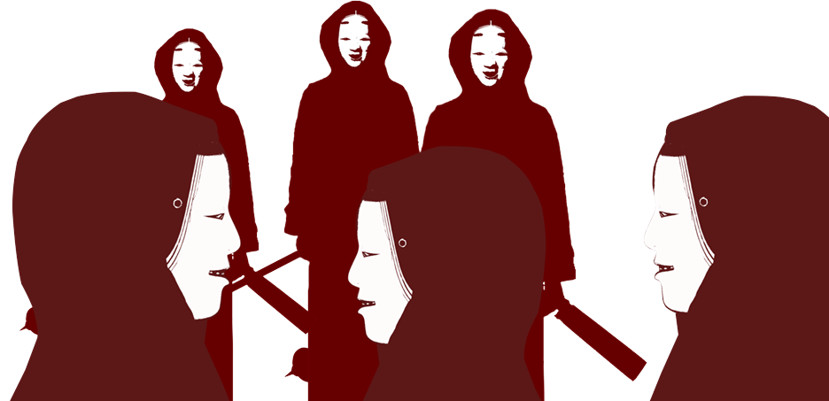
About 20 strange figures in red robes, holding nata and maces.
They had this house surrounded on every side.
What's with those outfits...
They had this house surrounded on every side.
What's with those outfits...

One of them leapt all the way up to this second floor and broke into the room.
I was right. They're using Droga.
They used Droga so they could take on Kana-chan and her athleticism...!
I was right. They're using Droga.
They used Droga so they could take on Kana-chan and her athleticism...!
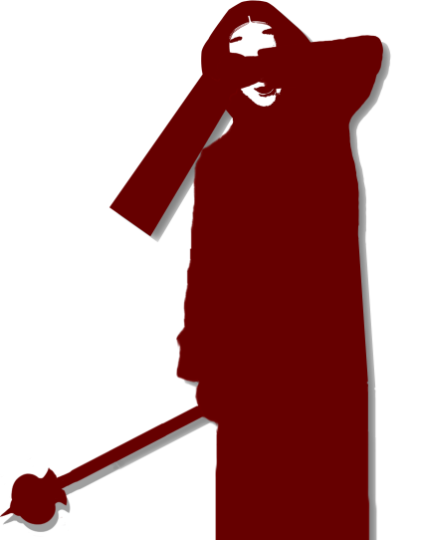
Just then, the light in the room came on.
The figure seemed dazzled by the sudden light and threw one hand over its eyes.
The figure seemed dazzled by the sudden light and threw one hand over its eyes.
"Hyah!"
"Now's our chance, let's get out of here, quick!"
It seemed Kana-chan had blinded the figure and attacked in that opening.
Maybe she had hit a vital spot such as the medulla, because the figure was staggering.
It seemed Kana-chan had blinded the figure and attacked in that opening.
Maybe she had hit a vital spot such as the medulla, because the figure was staggering.
Kana-chan pulled me and Sakura-san by the hand, and we were led out of the room.
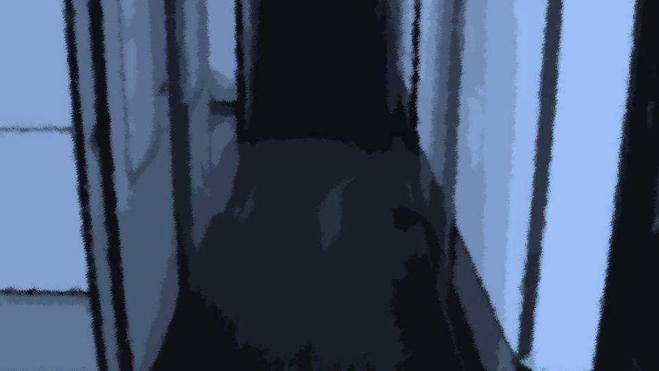
"Sakura-san! What are those!?"
"Hah... hah... th-those outfits are the shinigami garb.
The formal dress of the Arata settlement, for memorial services and for battle."
What do you mean, shinigami garb! And where are we supposed to run to!?
When there are as many as 20 of those things...!
What do you mean, shinigami garb! And where are we supposed to run to!?
When there are as many as 20 of those things...!
I followed the two of them along the dark hallway and went down the stairs.
Deep down the hallway that should have been dark―
light was showing from the direction of the entrance.
It wasn't electric light.
It wasn't electric light.
"............!"
Two shinigami, holding torches―
If they came at us with the same force as before, we wouldn't stand a chance.
I pushed Sakura-san and her daughter aside, removed the silencer, and raised the gun.
Two shinigami, holding torches―
If they came at us with the same force as before, we wouldn't stand a chance.
I pushed Sakura-san and her daughter aside, removed the silencer, and raised the gun.
"Get out of the way!"
Droga or not, there's no way they can take a bullet and be fine.
Come on, get out of the way! Or else I really will...!
Droga or not, there's no way they can take a bullet and be fine.
Come on, get out of the way! Or else I really will...!
But the two shinigami kept walking toward us.
What do I do...!
If I don't shoot, they'll get me...!
If I don't shoot, they'll kill me...!
What do I do...!
If I don't shoot, they'll get me...!
If I don't shoot, they'll kill me...!
"Aaaaah!!"
In the narrow hallway, I aimed squarely for the shinigami's torsos.
But the shinigami dodged the shots with ease.
No way!? Fast enough to dodge bullets...!
But the shinigami dodged the shots with ease.
No way!? Fast enough to dodge bullets...!

"!!??"
On reflex, I fired at the shinigami who had suddenly closed in right in front of me.
At this point-blank range, the shots had hit after all, it seemed, and the shinigami was crouched there on the spot.
But,
At this point-blank range, the shots had hit after all, it seemed, and the shinigami was crouched there on the spot.
But,

the shinigami stood back up, showing no sign of minding the wound.

The effects of Droga had far surpassed what I'd imagined.
Their dynamic vision was sharpened, and on top of that, they weren't fazed by pain.
If even a gun doesn't work on them, then escaping from here is...!
Their dynamic vision was sharpened, and on top of that, they weren't fazed by pain.
If even a gun doesn't work on them, then escaping from here is...!
"Grand Witch-sama, please step aside. Our aim is Kana alone.
You understand the reason, surely."
"Silence! I will not let you lay a single finger on Kana!"
"Grand Witch-sama, the legend was true. The signs of the curse-killing have appeared in Kana. In accordance with the rule, she must be killed. Please step aside!"
"I will not move, no matter what!"
"Silence! I will not let you lay a single finger on Kana!"
"Grand Witch-sama, the legend was true. The signs of the curse-killing have appeared in Kana. In accordance with the rule, she must be killed. Please step aside!"
"I will not move, no matter what!"
Now...!
While the two were distracted by Sakura-san, I aimed for their legs and fired.
I fired six shots in all.
I shot until the magazine was empty.
I fired six shots in all.
I shot until the magazine was empty.
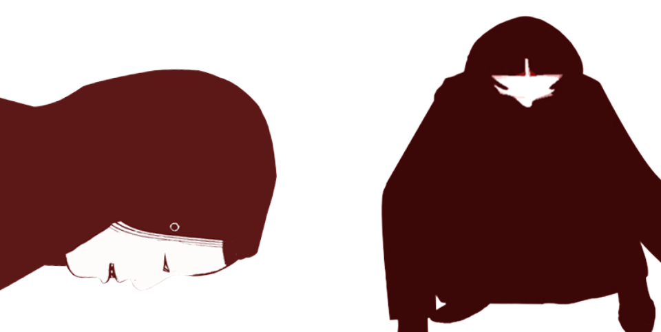
"Nngh! My legs won't move...!"
Pain or no pain, once the nerves and muscles of the legs are damaged, you can't stand.
Pain or no pain, once the nerves and muscles of the legs are damaged, you can't stand.
"Let's go, quickly!"
"Thank you, Momoko-san!"
We tried to run past the shinigami.
"Thank you, Momoko-san!"
We tried to run past the shinigami.
"Wait!"
"S-stop!"
I heard Kana-chan's voice, and right after came the dull sound of a blunt weapon hitting something.
"S-stop!"
I heard Kana-chan's voice, and right after came the dull sound of a blunt weapon hitting something.
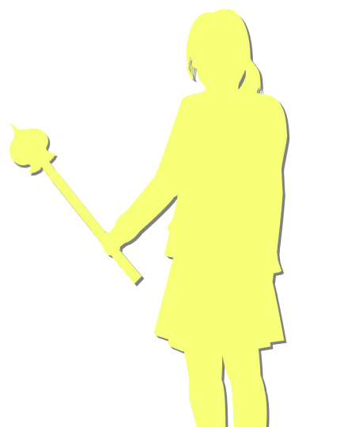
Kana-chan was holding the mace a shinigami had dropped.
"If we knock these guys out and put on these red robes, we can fool everyone, right!?"
"If we knock these guys out and put on these red robes, we can fool everyone, right!?"
Kana-chan stripped one of them and went back up to the second floor.
"Momoko-san, put it on, quick!"
"Y-yes!"
I stripped the other unconscious one and hurriedly put on the red robes and the Noh mask.
"Sakura-san, what about you!?"
"Never mind me, just get away, quick!"
Just then,
"Y-yes!"
I stripped the other unconscious one and hurriedly put on the red robes and the Noh mask.
"Sakura-san, what about you!?"
"Never mind me, just get away, quick!"
Just then,

a Noh mask and red robes came falling from the top of the stairs.
"Mama, put that on, quick!"
It seemed Kana-chan had stripped the shinigami who broke into the second floor earlier.
Going near in that outfit had probably let her catch the shinigami off guard.
It seemed Kana-chan had stripped the shinigami who broke into the second floor earlier.
Going near in that outfit had probably let her catch the shinigami off guard.

"............"
Sakura-san was looking at the two lying on the floor.
One was a man, one a woman.
Sakura-san was looking at the two lying on the floor.
One was a man, one a woman.
"Mama! Hurry! It's dangerous here!"
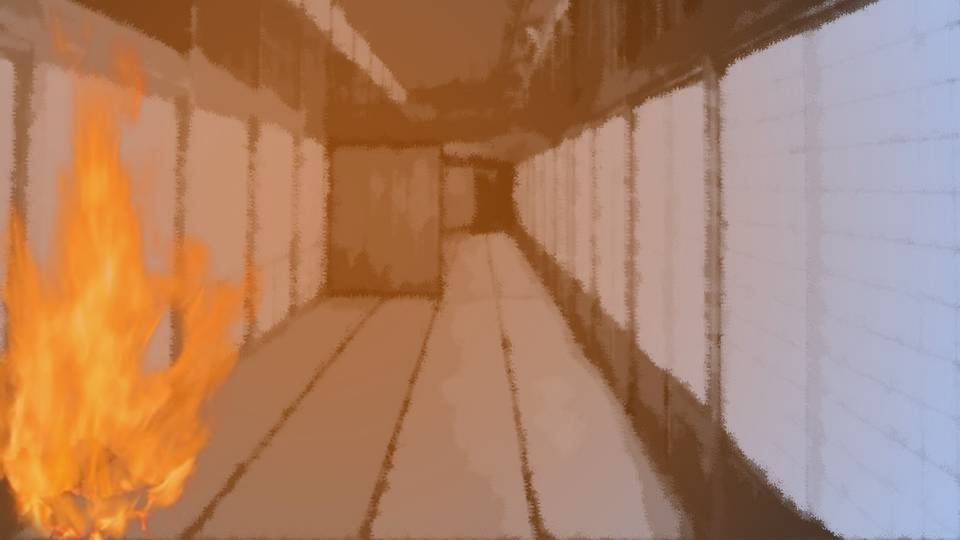
The torch a shinigami had dropped set the wall on fire, and the flames spread.
"Momoko-san, this way!"
But this way is the front entrance...!
Is it really okay to go straight out the front...!?
Is it really okay to go straight out the front...!?

Outside, the crowd of shinigami, same as before―
Disguised or not, if we're the only ones to break away, they'll get suspicious...!
Disguised or not, if we're the only ones to break away, they'll get suspicious...!
"Eek! Eek! Everyone! The house is on fire!
Kana-Kana will come out any second too!
We'll watch the front door, so everybody watch the other exits, pleeease!"
Raising a sudden, shrill voice: Sakura-san.
Could it be an impression of the woman who was lying there earlier?
I didn't know she had a talent like that...
Raising a sudden, shrill voice: Sakura-san.
Could it be an impression of the woman who was lying there earlier?
I didn't know she had a talent like that...
Hearing that voice, the shinigami followed Sakura-san's voice and scattered in all directions.
I can't believe that fooled them. Is Sakura-san good at impressions?
I can't believe that fooled them. Is Sakura-san good at impressions?
"No surprise, it's an impression Grandma trained you in..."
"Hah... hah... Momoko-san, this path will take you down to the foot of the mountain! Get away with Kana!"
"Hah... hah... Momoko-san, this path will take you down to the foot of the mountain! Get away with Kana!"
"Sakura-san, what are you going to do!?"
"I-I'm going to look for Kotaro..."
"But wasn't he killed...!"
"Kana, did you make sure Papa was dead!?"
"I-I'm going to look for Kotaro..."
"But wasn't he killed...!"
"Kana, did you make sure Papa was dead!?"
"I didn't check that far...!
Papa made himself the bait and told me to run while I could...!"
"Then hurry...! Kana, get out of here with Momoko-san, quickly!"
"No! Mama, if they attack you alone, you can't fight them off!"
"Momoko-san can't be sent off on her own, can she!"
"Then hurry...! Kana, get out of here with Momoko-san, quickly!"
"No! Mama, if they attack you alone, you can't fight them off!"
"Momoko-san can't be sent off on her own, can she!"
"Please wait! Then I'll go with Sakura-san too!
I've got a gun, so I won't slow you down!"
"Momoko-san, but...! Uuh..."
"There's no time to hesitate! Kana-chan, lead the way, quick!"
"Y-yes!"
"Momoko-san, but...! Uuh..."
"There's no time to hesitate! Kana-chan, lead the way, quick!"
"Y-yes!"
With Kana-chan in the lead, we headed for the forest.
But is Sakura-san going to be all right?
It's obvious she's in quite bad shape.
But is Sakura-san going to be all right?
It's obvious she's in quite bad shape.
The skin had been stripped from the entire body.


"The skin...?"
"That's right. It's no figure of speech. I believe the victim was literally dying, skin peeled off."
"That's right. It's no figure of speech. I believe the victim was literally dying, skin peeled off."

"Hey now... that's way beyond bad."

"The body found in Central Park is
Kogori-senpai's father.
"Senpai's father's killer... I want to find them."
"Hey now... I get how you feel, but..."
"The Senpai I love so much is suffering. I want to help her, even just a little."
"The Senpai I love so much is suffering. I want to help her, even just a little."
"............ Okay. If Goto's gonna go that far, I've got no choice. I'll help!"
"Thank you! That's so reassuring."
"Thank you! That's so reassuring."

I let go of my flat-tired bike and ran for the police station as fast as I could.
I didn't know how many minutes it would take to get there.
Gasping for breath, I ran as far as I could run.
I didn't know how many minutes it would take to get there.
Gasping for breath, I ran as far as I could run.

"Hah! Hah!"
I put my hands on my knees and stopped.
I put my hands on my knees and stopped.

What happened...?

Am I going to die in a place like this...?
Senpai, get out of this town, quickly...
Senpai, get out of this town, quickly...

Shiyo 800, April 8 23:50 Anonymous
hey now, word is there's been another murder!
hey now, word is there's been another murder!
Shiyo 800, April 9 0:05 Anonymous
erina goto (15)
cause of death: crushed brain from a heavy blow to the head, they say
crushed brain means the head got all smashed up, huh
erina goto (15)
cause of death: crushed brain from a heavy blow to the head, they say
crushed brain means the head got all smashed up, huh
The Erina Goto beating case―
Shaking Motoki-cho and then all of Japan, the April 8 Motoki-cho case.
But it was only the trigger for a still greater tragedy that would come 4 years later.
Shaking Motoki-cho and then all of Japan, the April 8 Motoki-cho case.
But it was only the trigger for a still greater tragedy that would come 4 years later.
There was a woman whose heart was deeply wounded by this case.
It is she who is the protagonist of this tragedy.
It is she who is the protagonist of this tragedy.